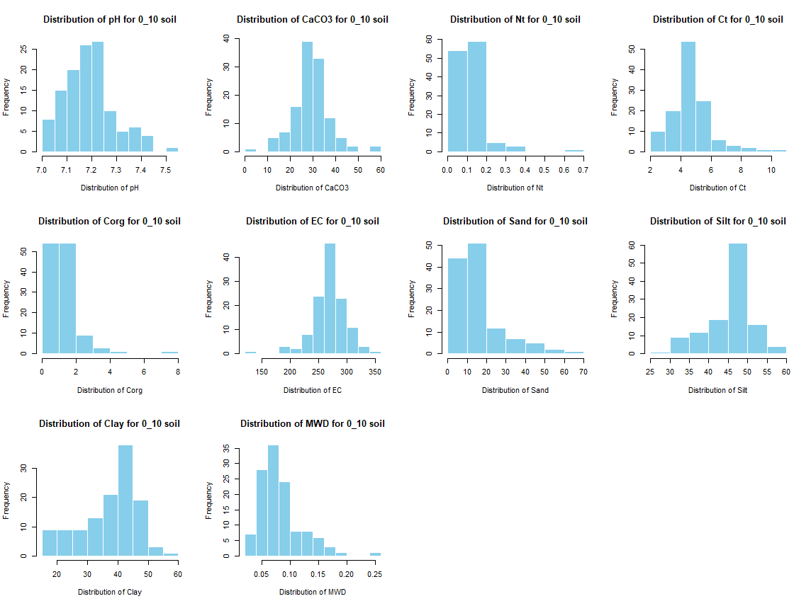
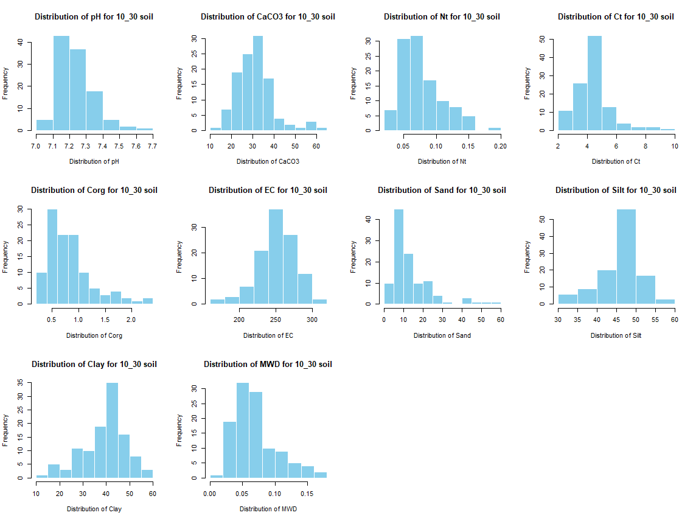

7 Digital soil mapping
7.1 Introduction
7.1.1 Purpose
We present here the methodology for the digital soil mapping based on the soil values from the spectra prediction.
7.1.2 Covariates
We used a set of 80 covariates mainly based on Zolfaghari Nia et al. (2022). All the data listed below are available freely online excepted for the digitized maps (geology, geohydrology and geomorphology).
| Name/ID | Original resolution (m) | Type/Unit | Source |
|---|---|---|---|
| Landsat 8 Blue/LA.1 | 30 | 0.45 - 0.51 µm | EROS (2020) |
| Landsat 8 Green/LA.2 | 30 | 0.53 - 0.59 µm | EROS (2020) |
| Landsat 8 NDVI/LA.3 | 30 | - | EROS (2020) |
| Landsat 8 NDWI/LA.4 | 30 | - | EROS (2020) |
| Landsat 8 NIR/LA.5 | 30 | 0.85 - 0.88 µm | EROS (2020) |
| Landsat 8 Panchromatic/LA.6 | 15 | 0.52 - 0.90 µm | EROS (2020) |
| Landsat 8 Red/LA.7 | 30 | 0.64 - 0.67 µm | EROS (2020) |
| Landsat 8 SWIR1/LA.8 | 30 | 1.57 - 1.65 µm | EROS (2020) |
| Landsat 8 SWIR2/LA.9 | 30 | 2.11 - 2.29 µm | EROS (2020) |
| Landsat 8 EVI/LA.10 | 30 | - | EROS (2020) |
| Landsat 8 SAVI/LA.11 | 30 | - | EROS (2020) |
| Landsat 8 NDMI/LA.12 | 30 | - | EROS (2020) |
| Landsat 8 CORSI/LA.13 | 30 | - | EROS (2020) |
| Landsat 8 Brightness index/LA.14 | 30 | - | EROS (2020) |
| Landsat 8 Clay index/LA.15 | 30 | - | EROS (2020) |
| Landsat 8 Salinity index/LA.16 | 30 | - | EROS (2020) |
| Landsat 8 Carbonate index/LA.17 | 30 | - | EROS (2020) |
| Landsat 8 Gypsum index/LA.18 | 30 | - | EROS (2020) |
| MODIS EVI/MO.1 | 250 | - | Didan (2021) |
| MODIS LST day/MO.2 | 1000 | °C | Wan, Hook, and Hulley (2021) |
| MODIS LST night/MO.2 | 1000 | °C | Wan, Hook, and Hulley (2021) |
| MODIS NDVI/MO.4 | 250 | - | Didan (2021) |
| MODIS NIR/MO.5 | 250 | 0.841 - 0.876 µm | Vermote (2021) |
| MODIS Red/MO.6 | 250 | 0.62 - 0.67 µm | Vermote (2021) |
| MODIS SAVI/MO.7 | 250 | Meters | Didan (2021) |
| MODIS Brightness index/MO.8 | 250 | 35 classes | Vermote (2021) |
| Distance rivers/OT.1 | 25 | 17 classes | ESA and Airbus (2022) |
| Geology/OT.2 | 1 : 250 000 | 11 classes | Sissakian, Hagopian, and Hasan (1995), al-mousawi_geological_2007 |
| Geomorphology/OT.3 | 1 : 250 000 | mm | Forti et al. (2021) |
| Landuses/OT.4 | 10 | mm | Zanaga et al. (2021) |
| PET sum/OT.5 | 750 | Kj m\(^{-2}\) | Zomer and Trabucco (2022) |
| Prec. sum/OT.6 | 1000 | °C | Fick and Hijmans (2017) |
| SRAD sum/OT.7 | 1000 | m s\(^{-1}\) | Fick and Hijmans (2017) |
| Diff Max. Min. Temp./OT.8 | 1000 | 0.492 - 0.496 µm | Fick and Hijmans (2017) |
| Wind sum/OT.9 | 1000 | 0.559 - 0.560 µm | Fick and Hijmans (2017) |
| Sentinel 2 Blue/SE.1 | 10 | - | European Space Agency (2022) |
| Sentinel 2 Green/SE.2 | 10 | - | European Space Agency (2022) |
| Sentinel 2 NDVI/SE.3 | 20 | 0.833 - 0.835 µm | European Space Agency (2022) |
| Sentinel 2 NDWI/SE.4 | 20 | 0.665 - 0.664 µm | European Space Agency (2022) |
| Sentinel 2 NIR/SE.5 | 10 | 0.738 - 0.739 µm | European Space Agency (2022) |
| Sentinel 2 Red/SE.6 | 10 | 0.739 - 0.740 µm | European Space Agency (2022) |
| Sentinel 2 RedEdge1/SE.7 | 20 | 0.779 - 0.782 µm | European Space Agency (2022) |
| Sentinel 2 RedEdge2/SE.8 | 20 | 1.610 - 1.613 µm | European Space Agency (2022) |
| Sentinel 2 RedEdge3/SE.9 | 20 | 2.185 - 2.202 µm | European Space Agency (2022) |
| Sentinel 2 SWIR1/SE.10 | 20 | 0.943 - 0.945 µm | European Space Agency (2022) |
| Sentinel 2 SWIR2/SE.11 | 20 | - | European Space Agency (2022) |
| Sentinel 2 water vapor/SE.12 | 90 | - | European Space Agency (2022) |
| Sentinel 2 EVI/SE.13 | 20 | - | European Space Agency (2022) |
| Sentinel 2 TVI/SE.14 | 20 | - | European Space Agency (2022) |
| Sentinel 2 SAVI/SE.15 | 20 | - | European Space Agency (2022) |
| Sentinel 2 LSWI/SE.16 | 20 | - | European Space Agency (2022) |
| Sentinel 2 Clay index/SE.17 | 20 | - | European Space Agency (2022) |
| Sentinel 2 Brightness index/SE.18 | 20 | - | European Space Agency (2022) |
| Sentinel 2 Salinity index/SE.19 | 20 | - | European Space Agency (2022) |
| Sentinel 2 Carbonate index/SE.20 | 20 | Radians | European Space Agency (2022) |
| Sentinel 2 Gypsum index/SE.21 | 20 | - | European Space Agency (2022) |
| Aspect/TE.1 | 25 | - | SAGA GIS / ESA and Airbus (2022) |
| Channel network base level/TE.2 | 25 | - | SAGA GIS / ESA and Airbus (2022) |
| Channel network distance/TE.3 | 25 | Meters | SAGA GIS / ESA and Airbus (2022) |
| Connexity/TE.4 | 25 | - | SAGA GIS / ESA and Airbus (2022) |
| DEM/TE.5 | 25 | - | SAGA GIS / ESA and Airbus (2022) |
| Flow accumaltion/TE.6 | 25 | - | SAGA GIS / ESA and Airbus (2022) |
| General curvature/TE.7 | 25 | - | SAGA GIS / ESA and Airbus (2022) |
| MrRTF/TE.8 | 25 | Radians | SAGA GIS / ESA and Airbus (2022) |
| MrVBF/TE.9 | 25 | - | SAGA GIS / ESA and Airbus (2022) |
| Negative openness/TE.10 | 25 | - | SAGA GIS / ESA and Airbus (2022) |
| Normalized height/TE.11 | 25 | Radians | SAGA GIS / ESA and Airbus (2022) |
| Plan curvature/TE.12 | 25 | - | SAGA GIS / ESA and Airbus (2022) |
| Positive openness/TE.13 | 25 | - | SAGA GIS / ESA and Airbus (2022) |
| Profile curvature/TE.14 | 25 | Radians | SAGA GIS / ESA and Airbus (2022) |
| Slope height/TE.15 | 25 | - | SAGA GIS / ESA and Airbus (2022) |
| Slope/TE.16 | 25 | - | SAGA GIS / ESA and Airbus (2022) |
| Standardized height/TE.17 | 25 | - | SAGA GIS / ESA and Airbus (2022) |
| Surface landform/TE.18 | 25 | - | SAGA GIS / ESA and Airbus (2022) |
| Terrain ruggedness index/TE.19 | 25 | - | SAGA GIS / ESA and Airbus (2022) |
| Terrain texture/TE.20 | 25 | - | SAGA GIS / ESA and Airbus (2022) |
| TPI/TE.21 | 25 | - | SAGA GIS / ESA and Airbus (2022) |
| TWI/TE.22 | 25 | - | SAGA GIS / ESA and Airbus (2022) |
| Total catchment area/TE.23 | 25 | 0.45 - 0.51 µm | SAGA GIS / ESA and Airbus (2022) |
| Valley depth/TE.24 | 25 | 0.53 - 0.59 µm | SAGA GIS / ESA and Airbus (2022) |
7.1.2.1 Terrain
For the DEM and all the derivatives, we used SAGA GIS 9.3.1 software and all the specificties of the batch process are detailed below. The last LS factor corresponds to the Total catchment area covariate.
[2024-12-24/15:17:21] [Fill Sinks (Wang & Liu)] Execution started...
__________
[Fill Sinks (Wang & Liu)] Parameters:
Grid System: 24.998458; 3170x 2329y; 262890.038674x 4067491.089629y
DEM: DEM_GLO_25
Filled DEM: Filled DEM
Flow Directions: Flow Directions
Watershed Basins: Watershed Basins
Minimum Slope [Degree]: 0.1
__________
total execution time: 9000 milliseconds (09s)
[2024-12-24/15:17:30] [Fill Sinks (Wang & Liu)] Execution succeeded (09s)
[2024-12-24/15:18:59] [Simple Filter] Execution started...
__________
[Simple Filter] Parameters:
Grid System: 24.998458; 3170x 2329y; 262890.038674x 4067491.089629y
Grid: DEM_GLO_25 [no sinks]
Filtered Grid: <not set>
Filter: Smooth
Kernel Type: Square
Radius: 3
__________
total execution time: 4000 milliseconds (04s)
[2024-12-24/15:19:03] [Simple Filter] Execution succeeded (04s)
[2024-12-24/15:20:52] [Simple Filter] Execution started...
__________
[Simple Filter] Parameters:
Grid System: 24.998458; 3170x 2329y; 262890.038674x 4067491.089629y
Grid: Filtered Grid
Filtered Grid: Filtered Grid
Filter: Smooth
Kernel Type: Square
Radius: 3
__________
total execution time: 3000 milliseconds (03s)
[2024-12-24/15:20:55] [Simple Filter] Execution succeeded (03s)
[2024-12-24/15:22:20] [Slope, Aspect, Curvature] Execution started...
__________
[Slope, Aspect, Curvature] Parameters:
Grid System: 24.998458; 3170x 2329y; 262890.038674x 4067491.089629y
Elevation: Filtered Grid
Slope: Slope
Aspect: Aspect
General Curvature: General Curvature
Profile Curvature: Profile Curvature
Plan Curvature: Plan Curvature
Tangential Curvature: <not set>
Longitudinal Curvature: <not set>
Cross-Sectional Curvature: <not set>
Minimal Curvature: <not set>
Maximal Curvature: <not set>
Total Curvature: <not set>
Flow Line Curvature: <not set>
Method: 9 parameter 2nd order polynom (Zevenbergen & Thorne 1987)
Unit: radians
Unit: radians
__________
total execution time: 1000 milliseconds (01s)
[2024-12-24/15:22:21] [Slope, Aspect, Curvature] Execution succeeded (01s)
[2024-12-24/15:24:02] [Channel Network and Drainage Basins] Execution started...
__________
[Channel Network and Drainage Basins] Parameters:
Grid System: 24.998458; 3170x 2329y; 262890.038674x 4067491.089629y
Elevation: Filtered Grid
Flow Direction: Flow Direction
Flow Connectivity: <not set>
Strahler Order: <not set>
Drainage Basins: Drainage Basins
Channels: Channels
Drainage Basins: Drainage Basins
Junctions: <not set>
Threshold: 5
Subbasins: true
__________
[Vectorizing Grid Classes] Parameters:
Grid System: 24.998458; 3170x 2329y; 262890.038674x 4067491.089629y
Grid: Drainage Basins
Polygons: Polygons
Class Selection: all classes
Vectorised class as...: one single (multi-)polygon object
Keep Vertices on Straight Lines: false
[Vectorizing Grid Classes] execution time: 06s
__________
total execution time: 12000 milliseconds (12s)
[2024-12-24/15:24:15] [Channel Network and Drainage Basins] Execution succeeded (12s)
[2024-12-24/15:30:53] [Channel Network] Execution started...
__________
[Channel Network] Parameters:
Grid System: 24.998458; 3170x 2329y; 262890.038674x 4067491.089629y
Elevation: Filtered Grid
Flow Direction: Flow Direction
Channel Network: Channel Network
Channel Direction: Channel Direction
Channel Network: Channel Network
Initiation Grid: Filtered Grid
Initiation Type: Greater than
Initiation Threshold: 0
Divergence: <not set>
Tracing: Max. Divergence: 5
Tracing: Weight: <not set>
Min. Segment Length: 10
__________
total execution time: 171000 milliseconds (02m 51s)
[2024-12-24/15:33:44] [Channel Network] Execution succeeded (02m 51s)
[2024-12-24/15:35:02] [Multiresolution Index of Valley Bottom Flatness (MRVBF)] Execution started...
__________
[Multiresolution Index of Valley Bottom Flatness (MRVBF)] Parameters:
Grid System: 24.998458; 3170x 2329y; 262890.038674x 4067491.089629y
Elevation: Filtered Grid
MRVBF: MRVBF
MRRTF: MRRTF
Initial Threshold for Slope: 16
Threshold for Elevation Percentile (Lowness): 0.4
Threshold for Elevation Percentile (Upness): 0.35
Shape Parameter for Slope: 4
Shape Parameter for Elevation Percentile: 3
Update Views: true
Classify: false
Maximum Resolution (Percentage): 100
step: 1, resolution: 25.00, threshold slope 16.00
step: 2, resolution: 25.00, threshold slope 8.00
step: 3, resolution: 75.00, threshold slope 4.00
step: 4, resolution: 224.99, threshold slope 2.00
step: 5, resolution: 674.96, threshold slope 1.00
step: 6, resolution: 2024.88, threshold slope 0.50
step: 7, resolution: 6074.63, threshold slope 0.25
step: 8, resolution: 18223.88, threshold slope 0.12
step: 9, resolution: 54671.63, threshold slope 0.06
step: 10, resolution: 164014.89, threshold slope 0.03
__________
total execution time: 117000 milliseconds (01m 57s)
[2024-12-24/15:36:59] [Multiresolution Index of Valley Bottom Flatness (MRVBF)] Execution succeeded (01m 57s)
[2024-12-24/15:42:42] [Topographic Openness] Execution started...
__________
[Topographic Openness] Parameters:
Grid System: 24.998458; 3170x 2329y; 262890.038674x 4067491.089629y
Elevation: Filtered Grid
Positive Openness: Positive Openness
Negative Openness: Negative Openness
Radial Limit: 10000
Directions: all
Number of Sectors: 8
Method: line tracing
Unit: Radians
Difference from Nadir: true
__________
total execution time: 134000 milliseconds (02m 14s)
[2024-12-24/15:44:56] [Topographic Openness] Execution succeeded (02m 14s)
[2024-12-24/15:45:57] [Vertical Distance to Channel Network] Execution started...
__________
[Vertical Distance to Channel Network] Parameters:
Grid System: 24.998458; 3170x 2329y; 262890.038674x 4067491.089629y
Elevation: Filtered Grid
Channel Network: Channel Network
Vertical Distance to Channel Network: Vertical Distance to Channel Network
Channel Network Base Level: Channel Network Base Level
Tension Threshold: 1
Maximum Iterations: 0
Keep Base Level below Surface: true
Level: 12; Iterations: 1; Maximum change: 0.000000
Level: 11; Iterations: 1; Maximum change: 0.000000
Level: 10; Iterations: 1; Maximum change: 0.000000
Level: 9; Iterations: 1; Maximum change: 0.000000
Level: 8; Iterations: 1; Maximum change: 0.000000
Level: 7; Iterations: 1; Maximum change: 0.000000
Level: 6; Iterations: 1; Maximum change: 0.000000
Level: 5; Iterations: 2; Maximum change: 0.000000
Level: 4; Iterations: 5; Maximum change: 0.646118
Level: 3; Iterations: 7; Maximum change: 0.756226
Level: 2; Iterations: 12; Maximum change: 0.957214
Level: 1; Iterations: 18; Maximum change: 0.973633
__________
total execution time: 14000 milliseconds (14s)
[2024-12-24/15:46:11] [Vertical Distance to Channel Network] Execution succeeded (14s)
[2024-12-24/15:47:23] [Terrain Surface Convexity] Execution started...
__________
[Terrain Surface Convexity] Parameters:
Grid System: 24.998458; 3170x 2329y; 262890.038674x 4067491.089629y
Elevation: Filtered Grid
Convexity: Convexity
Laplacian Filter Kernel: conventional four-neighbourhood
Type: convexity
Flat Area Threshold: 0
Scale (Cells): 10
Method: resampling
Weighting Function: gaussian
Bandwidth: 0.7
__________
total execution time: 2000 milliseconds (02s)
[2024-12-24/15:47:25] [Terrain Surface Convexity] Execution succeeded (02s)
[2024-12-24/15:48:23] [Flow Accumulation (One Step)] Execution started...
__________
[Flow Accumulation (One Step)] Parameters:
Elevation: Filtered Grid
Flow Accumulation: Flow Accumulation
Specific Catchment Area: <not set>
Preprocessing: Sink Removal
Flow Routing: Multiple Flow Direction
__________
[Sink Removal] Parameters:
Grid System: 24.998458; 3170x 2329y; 262890.038674x 4067491.089629y
DEM: Filtered Grid
Sink Route: <not set>
Preprocessed DEM: Preprocessed DEM
Method: Fill Sinks
Threshold: false
number of processed sinks: 1175
[Sink Removal] execution time: 17s
__________
[Flow Accumulation (Top-Down)] Parameters:
Grid System: 24.998458; 3170x 2329y; 262890.038674x 4067491.089629y
Elevation: Filtered Grid [no sinks]
Sink Routes: <not set>
Weights: <not set>
Flow Accumulation: Flow Accumulation
Input for Mean over Catchment: <not set>
Material for Accumulation: <not set>
Step: 1
Flow Accumulation Unit: cell area
Flow Path Length: <not set>
Channel Direction: <not set>
Method: Multiple Flow Direction
Thresholded Linear Flow: false
Convergence: 1.1
Contour Length: false
[Flow Accumulation (Top-Down)] execution time: 12s
__________
total execution time: 29000 milliseconds (29s)
[2024-12-24/15:48:52] [Flow Accumulation (One Step)] Execution succeeded (29s)
[2024-12-24/15:52:00] [Relative Heights and Slope Positions] Execution started...
__________
[Relative Heights and Slope Positions] Parameters:
Grid System: 24.998458; 3170x 2329y; 262890.038674x 4067491.089629y
Elevation: Filtered Grid
Slope Height: Slope Height
Valley Depth: Valley Depth
Normalized Height: Normalized Height
Standardized Height: Standardized Height
Mid-Slope Positon: Mid-Slope Positon
w: 0.5
t: 10
e: 2
[2024-12-24/15:52:00] Pass 1
[2024-12-24/15:53:51] Pass 2
__________
total execution time: 257000 milliseconds (04m 17s)
[2024-12-24/15:56:18] [Relative Heights and Slope Positions] Execution succeeded (04m 17s)
[2024-12-24/22:38:34] [TPI Based Landform Classification] Execution started...
__________
[TPI Based Landform Classification] Parameters:
Grid System: 24.998458; 3170x 2329y; 262890.038674x 4067491.089629y
Elevation: Filtered Grid
Landforms: Landforms
Small Scale: 0; 100
Large Scale: 0; 1000
Weighting Function: no distance weighting
__________
[Topographic Position Index (TPI)] Parameters:
Grid System: 24.998458; 3170x 2329y; 262890.038674x 4067491.089629y
Elevation: Filtered Grid
Topographic Position Index: Topographic Position Index
Standardize: true
Scale: 0; 100
Weighting Function: no distance weighting
[Topographic Position Index (TPI)] execution time: 03s
__________
[Topographic Position Index (TPI)] Parameters:
Grid System: 24.998458; 3170x 2329y; 262890.038674x 4067491.089629y
Elevation: Filtered Grid
Topographic Position Index: Topographic Position Index
Standardize: true
Scale: 0; 1000
Weighting Function: no distance weighting
[Topographic Position Index (TPI)] execution time: 05m 07s
__________
total execution time: 311000 milliseconds (05m 11s)
[2024-12-24/22:43:45] [TPI Based Landform Classification] Execution succeeded (05m 11s)
[2024-12-24/22:44:56] [Terrain Surface Texture] Execution started...
__________
[Terrain Surface Texture] Parameters:
Grid System: 24.998458; 3170x 2329y; 262890.038674x 4067491.089629y
Elevation: Filtered Grid
Texture: Texture
Flat Area Threshold: 1
Scale (Cells): 10
Method: resampling
Weighting Function: gaussian
Bandwidth: 0.7
__________
total execution time: 3000 milliseconds (03s)
[2024-12-24/22:45:00] [Terrain Surface Texture] Execution succeeded (03s)
[2024-12-24/22:45:43] [Terrain Ruggedness Index (TRI)] Execution started...
__________
[Terrain Ruggedness Index (TRI)] Parameters:
Grid System: 24.998458; 3170x 2329y; 262890.038674x 4067491.089629y
Elevation: Filtered Grid
Terrain Ruggedness Index (TRI): Terrain Ruggedness Index (TRI)
Search Mode: Circle
Search Radius: 1
Weighting Function: no distance weighting
__________
total execution time: 0 milliseconds (less than 1 millisecond)
[2024-12-24/22:45:43] [Terrain Ruggedness Index (TRI)] Execution succeeded (less than 1 millisecond)
[2024-12-24/22:46:50] [Topographic Position Index (TPI)] Execution started...
__________
[Topographic Position Index (TPI)] Parameters:
Grid System: 24.998458; 3170x 2329y; 262890.038674x 4067491.089629y
Elevation: Filtered Grid
Topographic Position Index: Topographic Position Index
Standardize: false
Scale: 0; 100
Weighting Function: no distance weighting
__________
total execution time: 3000 milliseconds (03s)
[2024-12-24/22:46:53] [Topographic Position Index (TPI)] Execution succeeded (03s)
[2024-12-24/22:47:22] [Topographic Wetness Index (One Step)] Execution started...
__________
[Topographic Wetness Index (One Step)] Parameters:
Elevation: Filtered Grid
Topographic Wetness Index: Topographic Wetness Index
Flow Distribution: Multiple Flow Direction
__________
[Sink Removal] Parameters:
Grid System: 24.998458; 3170x 2329y; 262890.038674x 4067491.089629y
DEM: Filtered Grid
Sink Route: <not set>
Preprocessed DEM: Preprocessed DEM
Method: Fill Sinks
Threshold: false
number of processed sinks: 1175
[Sink Removal] execution time: 16s
__________
[Flow Accumulation (Top-Down)] Parameters:
Grid System: 24.998458; 3170x 2329y; 262890.038674x 4067491.089629y
Elevation: Filtered Grid [no sinks]
Sink Routes: <not set>
Weights: <not set>
Flow Accumulation: Flow Accumulation
Input for Mean over Catchment: <not set>
Material for Accumulation: <not set>
Step: 1
Flow Accumulation Unit: cell area
Flow Path Length: <not set>
Channel Direction: <not set>
Method: Multiple Flow Direction
Thresholded Linear Flow: false
Convergence: 1.1
Contour Length: false
[Flow Accumulation (Top-Down)] execution time: 11s
__________
[Flow Width and Specific Catchment Area] Parameters:
Grid System: 24.998458; 3170x 2329y; 262890.038674x 4067491.089629y
Elevation: Filtered Grid [no sinks]
Flow Width: Flow Width
Total Catchment Area (TCA): Flow Accumulation
Specific Catchment Area (SCA): Specific Catchment Area (SCA)
Coordinate Unit: meter
Method: Aspect
[Flow Width and Specific Catchment Area] execution time: 01s
__________
[Slope, Aspect, Curvature] Parameters:
Grid System: 24.998458; 3170x 2329y; 262890.038674x 4067491.089629y
Elevation: Filtered Grid [no sinks]
Slope: Slope
Aspect: Aspect
General Curvature: <not set>
Profile Curvature: <not set>
Plan Curvature: <not set>
Tangential Curvature: <not set>
Longitudinal Curvature: <not set>
Cross-Sectional Curvature: <not set>
Minimal Curvature: <not set>
Maximal Curvature: <not set>
Total Curvature: <not set>
Flow Line Curvature: <not set>
Method: 9 parameter 2nd order polynom (Zevenbergen & Thorne 1987)
Unit: radians
Unit: radians
[Slope, Aspect, Curvature] execution time: less than 1 millisecond
__________
[Topographic Wetness Index] Parameters:
Grid System: 24.998458; 3170x 2329y; 262890.038674x 4067491.089629y
Slope: Slope
Catchment Area: Specific Catchment Area (SCA)
Transmissivity: <not set>
Topographic Wetness Index: Topographic Wetness Index
Area Conversion: no conversion (areas already given as specific catchment area)
Method (TWI): Standard
[Topographic Wetness Index] execution time: 01s
__________
total execution time: 29000 milliseconds (29s)
[2024-12-24/22:47:51] [Topographic Wetness Index (One Step)] Execution succeeded (29s)
2024-12-24/23:17:45] [LS Factor (One Step)] Execution started...
__________
[LS Factor (One Step)] Parameters:
DEM: Filtered Grid
LS Factor: LS Factor
Feet Conversion: false
Method: Moore et al. 1991
Preprocessing: none
Minimum Slope: 0.0001
__________
[Slope, Aspect, Curvature] Parameters:
Grid System: 24.998458; 3170x 2329y; 262890.038674x 4067491.089629y
Elevation: Filtered Grid
Slope: Slope
Aspect: Aspect
General Curvature: <not set>
Profile Curvature: <not set>
Plan Curvature: <not set>
Tangential Curvature: <not set>
Longitudinal Curvature: <not set>
Cross-Sectional Curvature: <not set>
Minimal Curvature: <not set>
Maximal Curvature: <not set>
Total Curvature: <not set>
Flow Line Curvature: <not set>
Method: 9 parameter 2nd order polynom (Zevenbergen & Thorne 1987)
Unit: radians
Unit: radians
[Slope, Aspect, Curvature] execution time: less than 1 millisecond
__________
[Flow Accumulation (Top-Down)] Parameters:
Grid System: 24.998458; 3170x 2329y; 262890.038674x 4067491.089629y
Elevation: Filtered Grid
Sink Routes: <not set>
Weights: <not set>
Flow Accumulation: Flow Accumulation
Input for Mean over Catchment: <not set>
Material for Accumulation: <not set>
Step: 1
Flow Accumulation Unit: cell area
Flow Path Length: <not set>
Channel Direction: <not set>
Method: Multiple Flow Direction
Thresholded Linear Flow: false
Convergence: 1.1
Contour Length: false
[Flow Accumulation (Top-Down)] execution time: 12s
__________
[Flow Width and Specific Catchment Area] Parameters:
Grid System: 24.998458; 3170x 2329y; 262890.038674x 4067491.089629y
Elevation: Filtered Grid
Flow Width: Flow Width
Total Catchment Area (TCA): Flow Accumulation
Specific Catchment Area (SCA): Specific Catchment Area (SCA)
Coordinate Unit: meter
Method: Aspect
[Flow Width and Specific Catchment Area] execution time: 01s
__________
[LS Factor] Parameters:
Grid System: 24.998458; 3170x 2329y; 262890.038674x 4067491.089629y
Slope: Slope
Catchment Area: Specific Catchment Area (SCA)
LS Factor: LS Factor
Area to Length Conversion: no conversion (areas already given as specific catchment area)
Feet Adjustment: false
Method (LS): Moore et al. 1991
Rill/Interrill Erosivity: 1
Stability: stable
[LS Factor] execution time: less than 1 millisecond
__________
total execution time: 13000 milliseconds (13s)
[2024-12-24/23:17:59] [LS Factor (One Step)] Execution succeeded (13s)7.1.2.2 Remote sensing images and indexes
The Landsat 8 images were collected via a Google Earth Engine script on a period covering 2020, the median of the composite image from Tier 1 TOA collection was used. The Sentinel 2 image were collected via a Google Earth Engine script on a period covering 2021, the median of the composite image from MultiSpectral Instrument Level-2A collection was used.The land surface temperature (LST) and other MODIS component were computed also on Google Earth with a time covering from 2020 to 2021. the median of the MODIS Terra collection was used. The javascript codes for scraping these images are available in the supplementary file inside the “7 - DSM/code” folder. We computed the following indexes: Normalized Difference Vegetation Index (NDVI) (McFeeters 1996); Normalized Difference Water Index (NDWI); Enhanced Vegetation Index (EVI); Soil Adjusted Vegetation Index (SAVI); Normilized Difference Moisture Index (NDMI); COmbined Specteral Response Index (COSRI); Transformed Vegetation Index (TVI);Land Surface Water Index (LSWI)
\[ NDVI = (NIR - Red) / (NIR + Red) \]
\[ NDWI = (Green - NIR) / (Green + NIR) \]
\[ EVI = 2.5\frac{NIR - Red} {NIR+(6*Red)-(7.5*Blue+1)} \]
\[ Landsat~8~and~MODIS~SAVI = 1.5\frac{NIR - Red}{NIR +Red+0.5} \]
\[ Sentinel~2~SAVI = \frac{(NIR - Red)*0.5}{NIR +Red+0.5} \]
\[ NDMI = \frac{NIR - SWIR1}{NIR+SWIR1} \]
\[ CORSI = \frac{Blue - Green}{Red+NIR}*NDVI \]
\[ TVI = (\frac{NIR - Red}{NIR+Red}+0.5)^{0.5}*100 \]
\[ LSWI = \frac{NIR - SWIR}{NIR+SWIR} \] \[ Landsat~8~and~MODIS~Brightness~index = NIR^2 - Red^2 \]
\[ Sentinel~2~Brightness~index = \frac{(NIR^2 - Green^2)^{0.5}}{2} \]
\[ Landsat~8~Clay~index = \frac{SWIR1}{SWIR2} \]
\[ Sentinel~2~Clay~index = \frac{RedEdge1}{RedEdge3} \]
\[ Landsat~8~Salinity~index = \frac{Red-NIR}{Green+NIR} \]
\[ Sentinel~2~Salinity~index = \frac{Red-NIR}{Blue+NIR} \]
\[ Landsat~8~Carbonate~index = \frac{Red}{Green} \]
\[ Sentinel~2~Carbonate~index = \frac{Red}{Blue} \]
\[ Landsat~8~Gypsum~index = \frac{SWIR1-NIR}{SWIR1+NIR} \]
\[ Sentinel~2~Gypsum~index = \frac{SWIR2-RedEdge1}{SWIR2+RedEdge1} \]
7.1.3 Soil properties
The soil 10 varaibles measurments for the five soil depth increment came from the predictions of the previous chapter and can be found online at https://doi.org/10.1594/PANGAEA.973700.
7.1.4 Preparation of the data
All raster were sampled to 25 x 25 m tiles to match the DEM. We used bilinear method excepted for the discrete maps (geology and geomorphology) where we used ngb resampling.
# 1.1 Import data ==============================================================
DEM <- raster("./data/DEM_GLO_25.tif")
rlist<-list.files("./data/remote", full.names=T)
rlist2<-list.files("./data/remote/", full.names=F)
outpath<-"./data/remote/resample/"
outfiles <- paste0(outpath, rlist2)
# 1.1 Resample loop ============================================================
for (i in (1:length(rlist))){
x<-raster(rlist[i])
x <- projectRaster(x, crs=CRS("+init=epsg:32638"))
x<-resample(x,DEM,method = "bilinear") #Careful to implement "ngb" option for discrete values
x<-crop(x,DEM)
writeRaster(x,filename=outfiles[i], format="GTiff",overwrite=T)
}
# 1.2 Export as a stack_raster =================================================
rlist <- list.files("./data/remote/resample/", full.names=T)
x <- stack(rlist, DEM)
x <- rast(x)
terra::writeRaster(x, "./export/Stack_layers_depth.tif")7.2 Soil depth mapping preparation
7.2.1 Preparation of the environment
# 0.1 Prepare environment ======================================================
# Folder check
getwd()
# Set folder direction
setwd()
# Clean up workspace
rm(list = ls(all.names = TRUE))
# 0.2 Install packages =========================================================
install.packages("pacman") #Install and load the "pacman" package (allow easier download of packages)
library(pacman)
pacman::p_load(dplyr, tidyr,ggplot2, mapview, sf, sp, terra, raster, corrplot, viridis, Boruta, caret,
quantregForest, readr, rpart, Cubist, reshape2, usdm)## R version 4.4.0 (2024-04-24 ucrt)
## Platform: x86_64-w64-mingw32/x64
## Running under: Windows 10 x64 (build 19045)
##
## Matrix products: default
##
##
## locale:
## [1] LC_COLLATE=French_France.utf8 LC_CTYPE=French_France.utf8
## [3] LC_MONETARY=French_France.utf8 LC_NUMERIC=C
## [5] LC_TIME=French_France.utf8
##
## time zone: Europe/Berlin
## tzcode source: internal
##
## attached base packages:
## [1] stats graphics grDevices utils datasets methods base
##
## other attached packages:
## [1] usdm_2.1-7 reshape2_1.4.4 Cubist_0.4.4
## [4] rpart_4.1.23 quantregForest_1.3-7.1 RColorBrewer_1.1-3
## [7] randomForest_4.7-1.2 caret_6.0-94 lattice_0.22-6
## [10] Boruta_8.0.0 viridis_0.6.5 viridisLite_0.4.2
## [13] corrplot_0.95 terra_1.7-83 tidyr_1.3.1
## [16] dplyr_1.1.4 pacman_0.5.1 sf_1.0-18
## [19] mapview_2.11.2 stringr_1.5.1 DT_0.33
## [22] readr_2.1.5 raster_3.6-30 sp_2.1-4
## [25] ggplot2_3.5.1 bookdown_0.41 tufte_0.13
## [28] rmarkdown_2.29 knitr_1.49
##
## loaded via a namespace (and not attached):
## [1] mathjaxr_1.6-0 rstudioapi_0.17.1 jsonlite_1.8.9
## [4] magrittr_2.0.3 farver_2.1.2 vctrs_0.6.5
## [7] base64enc_0.1-3 htmltools_0.5.8.1 curl_5.2.3
## [10] pROC_1.18.5 sass_0.4.9 parallelly_1.38.0
## [13] KernSmooth_2.23-22 bslib_0.8.0 htmlwidgets_1.6.4
## [16] plyr_1.8.9 lubridate_1.9.3 cachem_1.1.0
## [19] uuid_1.2-1 lifecycle_1.0.4 iterators_1.0.14
## [22] pkgconfig_2.0.3 Matrix_1.7-0 R6_2.5.1
## [25] fastmap_1.2.0 future_1.34.0 digest_0.6.37
## [28] colorspace_2.1-1 leafem_0.2.3 crosstalk_1.2.1
## [31] labeling_0.4.3 fansi_1.0.6 timechange_0.3.0
## [34] compiler_4.4.0 proxy_0.4-27 bit64_4.5.2
## [37] withr_3.0.2 brew_1.0-10 DBI_1.2.3
## [40] MASS_7.3-60.2 lava_1.8.0 leaflet_2.2.2
## [43] classInt_0.4-10 ModelMetrics_1.2.2.2 tools_4.4.0
## [46] units_0.8-5 future.apply_1.11.3 nnet_7.3-19
## [49] glue_1.7.0 satellite_1.0.5 nlme_3.1-164
## [52] grid_4.4.0 cluster_2.1.6 generics_0.1.3
## [55] recipes_1.1.0 gtable_0.3.6 leaflet.providers_2.0.0
## [58] tzdb_0.4.0 class_7.3-22 data.table_1.16.2
## [61] hms_1.1.3 utf8_1.2.4 foreach_1.5.2
## [64] pillar_1.9.0 vroom_1.6.5 splines_4.4.0
## [67] survival_3.5-8 bit_4.5.0 tidyselect_1.2.1
## [70] gridExtra_2.3 svglite_2.1.3 stats4_4.4.0
## [73] xfun_0.48 hardhat_1.4.0 leafpop_0.1.0
## [76] timeDate_4041.110 stringi_1.8.4 yaml_2.3.10
## [79] evaluate_1.0.1 codetools_0.2-20 tcltk_4.4.0
## [82] tibble_3.2.1 cli_3.6.3 systemfonts_1.1.0
## [85] munsell_0.5.1 jquerylib_0.1.4 Rcpp_1.0.13
## [88] globals_0.16.3 png_0.1-8 parallel_4.4.0
## [91] gower_1.0.1 listenv_0.9.1 ipred_0.9-15
## [94] scales_1.3.0 prodlim_2024.06.25 e1071_1.7-16
## [97] purrr_1.0.2 crayon_1.5.3 rlang_1.1.47.2.2 Prepare the data
# 01 Import data sets ##########################################################
# 01.1 Import soils infos ======================================================
# From the data accessible at the https://doi.org/10.1594/PANGAEA.973700
soil_infos <- read.csv("./data/MIR_spectra_prediction.csv", sep=";")
soil_infos$Depth..bot <- as.factor(soil_infos$Depth..bot)
soil_infos <- soil_infos[,-c(5,7,8)]
soil_list <- split(soil_infos, soil_infos$Depth..bot)
depths <- c("0_10", "10_30", "30_50", "50_70", "70_100")
names(soil_list) <- depths
soil_infos <- soil_list
for (i in 1:length(soil_infos)) {
soil_infos[[i]] <- soil_infos[[i]][,-c(2,5)]
colnames(soil_infos[[i]]) <- c("Site_name","Latitude","Longitude","pH","CaCO3","Nt","Ct","Corg","EC","Sand","Silt","Clay","MWD")
write.csv(soil_infos[[i]], paste0("./data/Infos_",names(soil_infos[i]),"_soil.csv"))
}# 01.2 Plot the soil information ===============================================
# Short overview of the values
head(soil_infos[[1]])## Site_name pH CaCO3 Nt Ct Corg EC Sand
## 1 B07_2022_001 7.136580 28.60175 0.07898301 4.024251 0.69 288.5740 6.929541
## 6 B07_2022_002 7.181695 41.91543 0.19087473 7.194387 2.36 268.3455 16.825245
## 11 B07_2022_003 7.351164 56.95427 0.16207257 8.575062 1.94 250.7080 20.833241
## 16 B07_2022_004 7.115174 20.34019 0.12628409 3.362697 1.00 256.7996 7.668607
## 21 B07_2022_006 7.156837 32.51514 0.07670799 4.459705 0.71 243.6403 3.328909
## 26 B07_2022_007 7.083956 22.32292 0.25814694 5.081921 2.69 277.2499 42.091774
## Silt Clay MWD
## 1 47.12790 45.31941 0.05649625
## 6 51.92765 31.77073 0.09199126
## 11 57.17239 22.23783 0.11557732
## 16 40.30110 42.13086 0.03590966
## 21 51.47959 39.81202 0.02227241
## 26 39.60886 18.71990 0.17134684## Site_name pH CaCO3 Nt Ct Corg EC Sand
## 2 B07_2022_001 7.153711 28.26386 0.05322302 4.012612 0.33 261.7479 2.866008
## 7 B07_2022_002 7.236350 55.42848 0.07334440 7.466923 0.91 228.7914 12.849202
## 12 B07_2022_003 7.390680 60.11458 0.11389843 8.146147 1.32 228.6317 21.337265
## 17 B07_2022_004 7.126203 22.25178 0.05708643 3.398175 0.26 260.1007 3.226446
## 22 B07_2022_006 7.169161 31.19109 0.04682456 4.423646 0.27 242.1606 1.495163
## 27 B07_2022_007 7.209257 22.87736 0.13164444 4.188129 1.07 218.7847 33.877903
## Silt Clay MWD
## 2 50.30470 44.23866 0.05390326
## 7 57.23070 30.09416 0.05518336
## 12 56.72284 23.69718 0.11119357
## 17 36.83939 44.31406 0.03544280
## 22 51.61467 42.26332 0.01943206
## 27 41.46440 19.15729 0.15482803## Site_name pH CaCO3 Nt Ct Corg EC Sand
## 3 B07_2022_001 7.090760 28.76550 0.04760096 4.052045 0.39 269.2073 4.553220
## 8 B07_2022_002 7.293602 68.91563 0.05991993 7.722308 0.63 198.3698 21.184769
## 13 B07_2022_003 7.443392 64.38919 0.07333452 8.092261 0.94 213.8872 20.312691
## 18 B07_2022_004 7.081050 23.54215 0.05051329 3.212894 0.31 229.8570 4.879420
## 23 B07_2022_006 7.212613 32.50340 0.04132612 4.418419 0.31 220.0376 4.653284
## 28 B07_2022_007 7.194686 23.56323 0.10865030 4.270283 0.88 236.8771 35.625011
## Silt Clay MWD
## 3 49.45483 48.43240 0.03200903
## 8 56.64009 24.95408 0.11507840
## 13 58.92308 24.24682 0.11101878
## 18 39.49672 42.72040 0.02931181
## 23 54.98576 42.94632 0.03238971
## 28 44.03695 18.65538 0.15935865## Site_name pH CaCO3 Nt Ct Corg EC Sand
## 4 B07_2022_001 7.030727 26.95205 0.05334169 3.922293 0.38 273.3466 5.421180
## 9 B07_2022_002 7.410029 75.14541 0.06501439 8.443180 0.81 202.2455 19.361340
## 14 B07_2022_003 7.338138 57.90329 0.05897546 7.472987 0.59 199.8969 25.564911
## 19 B07_2022_004 7.157351 21.52464 0.04772137 3.252805 0.27 246.5842 3.950831
## 24 B07_2022_006 7.272707 34.48200 0.04269594 4.789804 0.18 216.1190 9.785641
## 29 B07_2022_007 7.209351 23.53400 0.13007006 4.336351 1.07 216.3550 33.592701
## Silt Clay MWD
## 4 46.96042 49.90807 0.03194526
## 9 58.17092 20.39612 0.12236132
## 14 54.95970 24.46929 0.12375436
## 19 36.93913 48.87111 0.01785739
## 24 55.20991 37.14780 0.02840232
## 29 43.05497 18.72247 0.14998715## Site_name pH CaCO3 Nt Ct Corg EC Sand
## 5 B07_2022_001 7.175221 30.26523 0.05208322 4.121973 0.44 268.2132 6.013255
## 10 B07_2022_002 7.350596 68.79961 0.05562541 8.222191 0.68 194.6627 21.810980
## 15 B07_2022_003 7.346992 57.47734 0.04710348 7.719401 0.48 204.7379 22.397934
## 20 B07_2022_004 7.190866 23.55989 0.04618357 3.455671 0.22 234.1318 6.584578
## 25 B07_2022_006 7.157984 21.64242 0.04920712 3.573874 0.28 229.3348 5.615658
## 30 B07_2022_007 7.178517 23.70816 0.12945329 4.285172 1.17 222.8795 37.773411
## Silt Clay MWD
## 5 49.27372 48.28483 0.04350151
## 10 58.15880 19.81733 0.14863542
## 15 57.70358 24.45869 0.10108105
## 20 38.69909 45.82492 0.03141789
## 25 43.26391 40.29404 0.03506210
## 30 40.40684 18.16751 0.17889768# Histogramm ploting with normal and sqrt values
for (i in 1:length(soil_infos)) {
windows(width = 12, height = 9)
par(mfrow = c(3, 4))
for (j in 4:length(soil_infos[[1]])) {
hist(sqrt(soil_infos[[i]][, j]), main = paste0("Distribution of ", names(soil_infos[[i]][j]), " for ", names(soil_infos[i]) ," soil"),
xlab = paste0("Transformed Square Root of ", names(soil_infos[[i]][j])), col = "skyblue", border = "white")
}
savePlot(paste0("./export/preprocess/Histogram_sqrt_", names(soil_infos[i]), "_soil.png"), type = "png")
par(mfrow = c(1, 1))
dev.off()
windows(width = 12, height = 9)
par(mfrow = c(3, 4))
for (j in 4:length(soil_infos[[1]])) {
hist(soil_infos[[i]][, j], main = paste0("Distribution of ", names(soil_infos[[i]][j]), " for ", names(soil_infos[i]) ," soil"),
xlab = paste0("Distribution of ", names(soil_infos[[i]][j])), col = "skyblue", border = "white")
}
savePlot(paste0("./export/preprocess/Histogram_", names(soil_infos[i]), "_soil.png"), type = "png")
par(mfrow = c(1, 1))
dev.off()
}
dev.off()  
# 01.3 Set coordinates =========================================================
# Create a spatial dataframe and convert to WGS84 UTM 38 N coordinates
soil_infos_sp <- soil_infos
for (i in 1:length(soil_infos)) {
soil_infos_sp[[i]] <- st_as_sf(soil_infos_sp[[i]], coords = c("Longitude", "Latitude"), crs = 4326)
soil_infos_sp[[i]] <-st_transform(soil_infos_sp[[i]], crs = 32638)
}
mapview(soil_infos_sp[[1]]) + mapview(soil_infos_sp[[2]], col.regions = "red") + mapview(soil_infos_sp[[3]], col.regions = "green") +
mapview(soil_infos_sp[[4]], col.regions = "pink") + mapview(soil_infos_sp[[5]], col.regions = "darkgrey")7.2.3 Prepare the covariates
# 01.4 Import covariates raster ================================================
Landsat <- raster::stack(list.files("./data/Landsat/", full.names = TRUE))
names(Landsat)
Sentinel <- raster::stack(list.files("./data/Sentinel/", full.names = TRUE))
names(Sentinel)
Terrain <- raster::stack(list.files("./data/Terrain/", full.names = TRUE))
names(Terrain)
Others <- raster::stack(list.files("./data/Others/", full.names = TRUE))
names(Others)
Modis <- raster::stack(list.files("./data/MODIS/", full.names = TRUE))
names(Modis)
# RS Landsat 8
Landsat$EVI <- 2.5 * ((Landsat$Landsat8_NIR_2020_Median - Landsat$Landsat8_red_2020_Median)/(Landsat$Landsat8_NIR_2020_Median + (6*Landsat$Landsat8_red_2020_Median) - (7.5*Landsat$Landsat8_blue_2020_Median + 1)))
Landsat$SAVI <- ((Landsat$Landsat8_NIR_2020_Median - Landsat$Landsat8_red_2020_Median)/(Landsat$Landsat8_NIR_2020_Median + Landsat$Landsat8_red_2020_Median + 0.5)) * (1.5) #Enhanced Vegetation Index
Landsat$NDMI <- (Landsat$Landsat8_NIR_2020_Median - Landsat$Landsat8_SIR1_2020_Median)/(Landsat$Landsat8_NIR_2020_Median + Landsat$Landsat8_SIR1_2020_Median) # normilized difference moisture index
Landsat$COSRI <- ((Landsat$Landsat8_blue_2020_Median - Landsat$Landsat8_green_2020_Median)/(Landsat$Landsat8_red_2020_Median + Landsat$Landsat8_NIR_2020_Median)) * (Landsat$Landsat8_NDVI_2020_Median) # Combined Specteral Response Index
Landsat$BrightnessIndex <- ((Landsat$Landsat8_NIR_2020_Median)^2 - (Landsat$Landsat8_red_2020_Median)^2)
Landsat$ClayIndex <- (Landsat$Landsat8_SIR1_2020_Median / Landsat$Landsat8_SIR2_2020_Median)
Landsat$SalinityIndex <- (Landsat$Landsat8_red_2020_Median - Landsat$Landsat8_NIR_2020_Median)/(Landsat$Landsat8_green_2020_Median + Landsat$Landsat8_NIR_2020_Median)
Landsat$CarbonateIndex <- (Landsat$Landsat8_red_2020_Median / Landsat$Landsat8_green_2020_Median)
Landsat$GypsumIndex <- (Landsat$Landsat8_SIR1_2020_Median - Landsat$Landsat8_NIR_2020_Median)/(Landsat$Landsat8_SIR1_2020_Median + Landsat$Landsat8_NIR_2020_Median)
# RS Sentinel 2
Sentinel$EVI <- ((Sentinel$Sentinel2_NIR_2021_MedianComposite - Sentinel$Sentinel2_red_2021_MedianComposite)/((Sentinel$Sentinel2_NIR_2021_MedianComposite + 6 * Sentinel$Sentinel2_red_2021_MedianComposite) - (7.5 * Sentinel$Sentinel2_blue_2021_MedianComposite + 1))) * 2.5
Sentinel$TVI <- ((((Sentinel$Sentinel2_NIR_2021_MedianComposite - Sentinel$Sentinel2_red_2021_MedianComposite)/(Sentinel$Sentinel2_NIR_2021_MedianComposite + Sentinel$Sentinel2_red_2021_MedianComposite)) + 0.5) ^ 0.5) *100
Sentinel$SAVI <- ((Sentinel$Sentinel2_NIR_2021_MedianComposite - Sentinel$Sentinel2_red_2021_MedianComposite) * 0.5) /(Sentinel$Sentinel2_NIR_2021_MedianComposite + Sentinel$Sentinel2_red_2021_MedianComposite + 0.5)
Sentinel$LSWI <- (Sentinel$Sentinel2_NIR_2021_MedianComposite - (Sentinel$Sentinel2_SWIR1_2021_MedianComposite+Sentinel$Sentinel2_SWIR2_2021_MedianComposite))/(Sentinel$Sentinel2_NIR_2021_MedianComposite - (Sentinel$Sentinel2_SWIR1_2021_MedianComposite+Sentinel$Sentinel2_SWIR2_2021_MedianComposite))
Sentinel$BrightnessIndex <- (((Sentinel$Sentinel2_NIR_2021_MedianComposite * Sentinel$Sentinel2_red_2021_MedianComposite) + (Sentinel$Sentinel2_green_2021_MedianComposite * Sentinel$Sentinel2_green_2021_MedianComposite))^0.5) / 2
Sentinel$ClayIndex <- (Sentinel$Sentinel2_redEdge1_2021_MedianComposite / Sentinel$Sentinel2_redEdge3_2021_MedianComposite)
Sentinel$SalinityIndex <- (Sentinel$Sentinel2_red_2021_MedianComposite - Sentinel$Sentinel2_NIR_2021_MedianComposite)/(Sentinel$Sentinel2_blue_2021_MedianComposite + Sentinel$Sentinel2_NIR_2021_MedianComposite)
Sentinel$CarbonateIndex <- (Sentinel$Sentinel2_red_2021_MedianComposite / Sentinel$Sentinel2_blue_2021_MedianComposite)
Sentinel$GypsumIndex <- (Sentinel$Sentinel2_SWIR2_2021_MedianComposite - Sentinel$Sentinel2_redEdge1_2021_MedianComposite)/(Sentinel$Sentinel2_SWIR2_2021_MedianComposite + Sentinel$Sentinel2_redEdge1_2021_MedianComposite)
# RS MODIS
Modis$SAVI <- ((Modis$MODIS_NIR_band - Modis$MODIS_Red_band)/(Modis$MODIS_NIR_band + Modis$MODIS_Red_band + 0.5)) * (1.5)
Modis$BrightnessIndex <- ((Modis$MODIS_Red_band)^2 - (Modis$MODIS_NIR_band)^2)
df_names <- data.frame()
for (i in 1:length(names(Terrain))) {
c <- paste0("TE.",i)
df_names[i,1] <- c
df_names[i,2] <- names(Terrain)[i]
}
t <- nrow(df_names)
for (i in 1:length(names(Landsat))) {
c <- paste0("LA.",i)
df_names[i+t,1] <- c
df_names[i+t,2] <- names(Landsat)[i]
}
t <- nrow(df_names)
for (i in 1:length(names(Sentinel))) {
c <- paste0("SE.",i)
df_names[i+t,1] <- c
df_names[i+t,2] <- names(Sentinel)[i]
}
t <- nrow(df_names)
for (i in 1:length(names(Modis))) {
c <- paste0("MO.",i)
df_names[i+t,1] <- c
df_names[i+t,2] <- names(Modis)[i]
}
t <- nrow(df_names)
for (i in 1:length(names(Others))) {
c <- paste0("OT.",i)
df_names[i+t,1] <- c
df_names[i+t,2] <- names(Others)[i]
}
write.table(df_names,"./data/Covariates_names_DSM.txt")
x <- raster::stack(Terrain, Landsat, Sentinel, Modis, Others)
names(x) <- df_names[,1]
x <- rast(x)
terra::writeRaster(x, "./data/Stack_layers_DSM.tif", overwrite = TRUE)
covariates <- stack("./data/Stack_layers_DSM.tif")
# 01.5 Plot the covariates maps ================================================
reduce <- aggregate(covariates, fact=10, fun=mean)
plot(reduce)
# 01.6 Extract the values ======================================================
# Extract the values of each band for the sampling location
df_cov <- soil_infos_sp
for (i in 1:length(df_cov)) {
df_cov[[i]] <- raster::extract(covariates, df_cov[[i]], method='simple')
df_cov[[i]] <- as.data.frame(df_cov[[i]])
write.csv(df_cov[[i]], paste0("./data/df_",names(df_cov[i]),"_cov_DSM.csv"))
}
# 01.7 Export and save data ====================================================
save(df_cov, soil_infos_sp, file = "./export/save/Pre_process.RData")
rm(list = ls())
# 02 Check the data ############################################################
# 02.1 Import the data and merge ===============================================
load(file = "./export/save/Pre_process.RData")
SoilCov <- df_cov
for (i in 1:length(SoilCov)) {
ID <- 1:nrow(SoilCov[[i]])
SoilCov[[i]] <- cbind(df_cov[[i]], ID, st_drop_geometry(soil_infos_sp[[i]]))
cat("There is ", sum(is.na(SoilCov[[i]])== TRUE), "Na values in ", names(SoilCov[i])," soil list")
}
# 02.2 Plot and export the correlation matrix ==================================
for (i in 1:length(df_cov)) {
pdf(paste0("./export/preprocess/Correlation_",names(df_cov[i]), ".pdf"), # File name
width = 40, height = 40, # Width and height in inches
bg = "white", # Background color
colormodel = "cmyk") # Color model
# Correlation of the data
corrplot(cor(df_cov[[i]]), method = "color", col = viridis(200),
type = "upper",
addCoef.col = "black", # Add coefficient of correlation
tl.col = "black", tl.srt = 45, # Text label color and rotation
number.cex = 0.7, # Size of the text labels
cl.cex = 0.7, # Size of the color legend text
cl.lim = c(-1, 1)) # Color legend limits
dev.off()
}


Regarding the correlation plot the Landsat and Sentinel bands are the ones with the higher correlation followed by terrain derivatives from DEM.
# 02.3 Select with VIF correlation =============================================
vif <- df_cov
vif_plot <- df_cov
for (i in 1:length(df_cov)) {
vif[[i]] <-vifcor(df_cov[[i]], th=0.8)
vif_df <- as.data.frame(vif[[i]]@results)
write.table(vif_df, paste0("./export/VIF/vif_results_",names(df_cov[i]) ,"_soil.txt"))
vif_plot[[i]] <- ggplot(vif_df, aes(x = reorder(Variables, VIF), y = VIF)) +
geom_bar(stat = "identity", fill = "lightblue") +
coord_flip() +
theme_minimal() +
labs(title = paste0("VIF Values for ", names(df_cov[i]) ," soil"), x = "Variables", y = "VIF") +
theme(axis.text.x = element_text(angle = 45, hjust = 1))
ggsave(paste0("./export/VIF/VIF_", names(df_cov[i]),"_soil.png"), vif_plot[[i]], width = 12, height = 8)
ggsave(paste0("./export/VIF/VIF_", names(df_cov[i]),"_soil.pdf"), vif_plot[[i]], width = 12, height = 8)
}# 02.4 Statistics ==============================================================
# Here we decided to split every run by soil depth to have a better vision
# on the running process.
#===============================================================================
x <- "0_10"
depth <- names(SoilCov[x])
# Basic statistics
names(SoilCov[[x]])## [1] "TE.1" "TE.2" "TE.3" "TE.4" "TE.5" "TE.6" "TE.7" "TE.8" "TE.9"
## [10] "TE.10" "TE.11" "TE.12" "TE.13" "TE.14" "TE.15" "TE.16" "TE.17" "TE.18"
## [19] "TE.19" "TE.20" "TE.21" "TE.22" "TE.23" "TE.24" "LA.1" "LA.2" "LA.3"
## [28] "LA.4" "LA.5" "LA.6" "LA.7" "LA.8" "LA.9" "LA.10" "LA.11" "LA.12"
## [37] "LA.13" "LA.14" "LA.15" "LA.16" "LA.17" "LA.18" "SE.1" "SE.2" "SE.3"
## [46] "SE.4" "SE.5" "SE.6" "SE.7" "SE.8" "SE.9" "SE.10" "SE.11" "SE.12"
## [55] "SE.13" "SE.14" "SE.15" "SE.16" "SE.17" "SE.18" "SE.19" "SE.20" "SE.21"
## [64] "MO.1" "MO.2" "MO.3" "MO.4" "MO.5" "MO.6" "MO.7" "MO.8" "OT.1"
## [73] "OT.2" "OT.3" "OT.4" "OT.5" "OT.6" "OT.7" "OT.8" "OT.9" "pH"
## [82] "CaCO3" "Nt" "Ct" "Corg" "EC" "Sand" "Silt" "Clay" "MWD"## [1] 122## TE.1 TE.2 TE.3 TE.4 TE.5 TE.6 TE.7
## 1 5.129029 481.9058 1.24618530 48.68576 483.1519 4275.461 -0.0036442482
## 6 4.271050 607.5202 5.06909180 54.65018 612.5893 4434.438 0.0002648764
## 11 3.534097 366.2365 0.00000000 22.06347 351.5441 5463.821 0.0000000000
## 16 4.414689 381.2467 18.52066040 39.91128 399.7674 1973.995 -0.0032089406
## 21 2.600626 375.2304 5.19729614 49.38589 380.4277 15852.666 -0.0069409925
## 26 3.597533 446.2390 0.07165527 43.89017 446.3106 26560.883 -0.0065811337
## TE.8 TE.9 TE.10 TE.11 TE.12 TE.13
## 1 0.07334368 1.6368924 1.547569 0.09604046 -2.094395e-04 1.503411
## 6 0.47363004 0.4449549 1.519993 0.07047901 1.636734e-05 1.504419
## 11 0.75827569 2.2581604 1.570573 0.05645949 2.236110e-04 1.503633
## 16 0.08321811 0.1176461 1.479559 0.72559083 1.592405e-03 1.484723
## 21 0.01267918 0.3939767 1.535936 0.23193364 3.370031e-04 1.450923
## 26 0.05783909 2.5950627 1.553927 0.14401424 -1.694468e-04 1.479041
## TE.14 TE.15 TE.16 TE.17 TE.18 TE.19 TE.20
## 1 -0.0009426068 3.042071 0.092795573 323.9177 98 1.6050999 4.304254
## 6 0.0002291707 7.852433 0.068446726 328.5376 114 1.2863352 13.778360
## 11 -0.0009171535 8.805406 0.001889392 310.3445 19 0.0298721 10.554357
## 16 0.0011994429 12.084249 0.177230388 374.3112 81 2.8886068 32.724075
## 21 -0.0002807949 7.214093 0.152611300 324.0304 114 2.8588665 29.393518
## 26 -0.0005500755 3.480745 0.072091810 327.0627 82 1.4929968 24.623165
## TE.21 TE.22 TE.23 TE.24 LA.1 LA.2
## 1 -2.0777993 7.239330 4275.461 28.632814 1.464855e-05 1.464425e-05
## 6 1.3326528 7.572299 4434.438 103.562767 1.740259e-05 2.043818e-05
## 11 -0.8523821 11.391269 5463.821 147.154312 1.711387e-05 1.906098e-05
## 16 1.3779540 5.866146 1973.995 4.570108 1.486618e-05 1.581989e-05
## 21 -3.2010865 8.007936 15852.666 23.890034 1.736328e-05 1.881617e-05
## 26 -1.7142496 9.305170 26560.883 20.688707 1.564758e-05 1.657248e-05
## LA.3 LA.4 LA.5 LA.6 LA.7 LA.8
## 1 0.1839304 -0.2564859 2.418240e-05 1.569579e-05 1.735969e-05 2.350239e-05
## 6 0.1680534 -0.3067069 3.821417e-05 2.315058e-05 2.743678e-05 3.876102e-05
## 11 0.2085298 -0.3084752 3.458530e-05 2.049527e-05 2.357212e-05 4.089066e-05
## 16 0.1674306 -0.2806663 2.844225e-05 1.740484e-05 1.994137e-05 3.111950e-05
## 21 0.1821253 -0.2782128 3.140979e-05 2.060692e-05 2.283800e-05 3.456463e-05
## 26 0.2138029 -0.3095231 3.211739e-05 1.798635e-05 2.043029e-05 3.531461e-05
## LA.9 LA.10 LA.11 LA.12 LA.13
## 1 1.891810e-05 -1.705708e-05 2.046642e-05 0.014260544 1.903089e-05
## 6 2.661204e-05 -2.694543e-05 3.232794e-05 -0.007104237 -7.770504e-03
## 11 2.954793e-05 -2.753426e-05 3.303570e-05 -0.083541393 -6.981575e-03
## 16 2.276484e-05 -2.125298e-05 2.550018e-05 -0.044949129 -3.300304e-03
## 21 2.649527e-05 -2.143031e-05 2.571260e-05 -0.047819041 -4.877787e-03
## 26 2.475316e-05 -2.921883e-05 3.505760e-05 -0.047414035 -3.763186e-03
## LA.14 LA.15 LA.16 LA.17 LA.18 SE.1 SE.2
## 1 2.834295e-10 1.242323 -0.1757223 1.185427 -0.014260544 0.1688569 0.1897706
## 6 7.075462e-10 1.456522 -0.1837504 1.342428 0.007104237 0.1423388 0.1518370
## 11 6.404981e-10 1.383875 -0.2052926 1.236669 0.083541393 0.1895031 0.2120295
## 16 4.113034e-10 1.366998 -0.1920576 1.260525 0.044949129 0.1566231 0.1694655
## 21 4.650010e-10 1.304558 -0.1706646 1.213743 0.047819041 0.1866443 0.2020181
## 26 6.141297e-10 1.426671 -0.2400314 1.232784 0.047414035 0.1606215 0.1700812
## SE.3 SE.4 SE.5 SE.6 SE.7 SE.8 SE.9
## 1 0.07201554 -0.2112371 0.2999823 0.2492155 0.2579755 0.2815987 0.3071862
## 6 0.08480766 -0.2181940 0.2363885 0.1997403 0.2090901 0.2237255 0.2430989
## 11 0.08532100 -0.2010739 0.3194418 0.2689117 0.2834284 0.3009649 0.3256730
## 16 0.08935766 -0.2092203 0.2581550 0.2231526 0.2316061 0.2464942 0.2664944
## 21 0.06520155 -0.1610888 0.2775168 0.2477271 0.2538366 0.2676156 0.2862030
## 26 0.07894805 -0.1826547 0.2478257 0.2105495 0.2192732 0.2359228 0.2554140
## SE.10 SE.11 SE.12 SE.13 SE.14 SE.15 SE.16
## 1 0.3169008 0.2362464 0.10915425 -0.2693763 76.97000 0.02419315 -0.02742584
## 6 0.3132872 0.2580443 0.09622070 -0.1448064 76.42190 0.01957433 -0.13989830
## 11 0.4320035 0.3459771 0.11684434 -0.2586719 76.54306 0.02321403 -0.14979354
## 16 0.3395096 0.2836413 0.09473214 -0.1514987 75.67850 0.01783458 -0.13612077
## 21 0.3654137 0.3206125 0.09738074 -0.1171066 74.61340 0.01452813 -0.13671292
## 26 0.3315342 0.2899157 0.09205230 -0.1343697 76.24451 0.01944761 -0.14448448
## SE.17 SE.18 SE.19 SE.20 SE.21 MO.1 MO.2
## 1 0.8398017 0.1664130 -0.10828190 1.475898 -0.04396622 1387.392 30.68088
## 6 0.8601031 0.1325432 -0.09676673 1.403274 0.10479676 1394.211 30.02961
## 11 0.8702855 0.1808716 -0.09928410 1.419036 0.09937742 1456.483 30.35895
## 16 0.8690846 0.1469069 -0.08438831 1.424774 0.10099064 1408.809 30.91485
## 21 0.8869111 0.1654990 -0.06417975 1.327268 0.11624325 1299.647 31.73000
## 26 0.8585010 0.1423966 -0.09126323 1.310843 0.13873525 1493.202 30.50342
## MO.3 MO.4 MO.5 MO.6 MO.7 MO.8 OT.1 OT.2 OT.3
## 1 12.83822 2182.765 2778.179 1758.568 0.3370803 -4625717 22.53508 13 4
## 6 15.24922 1946.358 3543.490 2174.825 0.3589899 -7826458 178.91341 13 4
## 11 13.19583 2081.331 3249.374 1976.490 0.3653260 -6651919 152.21561 5 5
## 16 13.96882 2023.423 3260.174 1996.885 0.3604205 -6641180 387.91537 8 5
## 21 13.86000 1800.269 3014.198 1973.598 0.3129126 -5190302 122.66399 6 5
## 26 13.78470 2321.455 3053.413 1891.073 0.3525814 -5747173 824.36816 8 10
## OT.4 OT.5 OT.6 OT.7 OT.8 OT.9 pH CaCO3
## 1 5 2113.386 734.4635 211009.5 156.4436 25.31880 7.136580 28.60175
## 6 11 2068.635 737.7375 210497.5 150.0130 24.60271 7.181695 41.91543
## 11 11 2121.717 663.9340 211284.9 149.1383 25.51540 7.351164 56.95427
## 16 11 2127.010 646.8065 210657.2 154.1835 25.58259 7.115174 20.34019
## 21 11 2143.583 738.9758 211259.9 156.6656 25.58248 7.156837 32.51514
## 26 11 2127.571 730.7488 211230.2 156.1779 25.53767 7.083956 22.32292
## Nt Ct Corg EC Sand Silt Clay MWD
## 1 0.07898301 4.024251 0.69 288.5740 6.929541 47.12790 45.31941 0.05649625
## 6 0.19087473 7.194387 2.36 268.3455 16.825245 51.92765 31.77073 0.09199126
## 11 0.16207257 8.575062 1.94 250.7080 20.833241 57.17239 22.23783 0.11557732
## 16 0.12628409 3.362697 1.00 256.7996 7.668607 40.30110 42.13086 0.03590966
## 21 0.07670799 4.459705 0.71 243.6403 3.328909 51.47959 39.81202 0.02227241
## 26 0.25814694 5.081921 2.69 277.2499 42.091774 39.60886 18.71990 0.17134684## TE.1 TE.2 TE.3 TE.4 TE.5 TE.6 TE.7 TE.8
## "numeric" "numeric" "numeric" "numeric" "numeric" "numeric" "numeric" "numeric"
## TE.9 TE.10 TE.11 TE.12 TE.13 TE.14 TE.15 TE.16
## "numeric" "numeric" "numeric" "numeric" "numeric" "numeric" "numeric" "numeric"
## TE.17 TE.18 TE.19 TE.20 TE.21 TE.22 TE.23 TE.24
## "numeric" "numeric" "numeric" "numeric" "numeric" "numeric" "numeric" "numeric"
## LA.1 LA.2 LA.3 LA.4 LA.5 LA.6 LA.7 LA.8
## "numeric" "numeric" "numeric" "numeric" "numeric" "numeric" "numeric" "numeric"
## LA.9 LA.10 LA.11 LA.12 LA.13 LA.14 LA.15 LA.16
## "numeric" "numeric" "numeric" "numeric" "numeric" "numeric" "numeric" "numeric"
## LA.17 LA.18 SE.1 SE.2 SE.3 SE.4 SE.5 SE.6
## "numeric" "numeric" "numeric" "numeric" "numeric" "numeric" "numeric" "numeric"
## SE.7 SE.8 SE.9 SE.10 SE.11 SE.12 SE.13 SE.14
## "numeric" "numeric" "numeric" "numeric" "numeric" "numeric" "numeric" "numeric"
## SE.15 SE.16 SE.17 SE.18 SE.19 SE.20 SE.21 MO.1
## "numeric" "numeric" "numeric" "numeric" "numeric" "numeric" "numeric" "numeric"
## MO.2 MO.3 MO.4 MO.5 MO.6 MO.7 MO.8 OT.1
## "numeric" "numeric" "numeric" "numeric" "numeric" "numeric" "numeric" "numeric"
## OT.2 OT.3 OT.4 OT.5 OT.6 OT.7 OT.8 OT.9
## "numeric" "numeric" "numeric" "numeric" "numeric" "numeric" "numeric" "numeric"
## pH CaCO3 Nt Ct Corg EC Sand Silt
## "numeric" "numeric" "numeric" "numeric" "numeric" "numeric" "numeric" "numeric"
## Clay MWD
## "numeric" "numeric"## TE.1 TE.2 TE.3 TE.4
## Min. :0.1376 Min. :329.3 Min. :-0.02185 Min. : 0.00
## 1st Qu.:2.6140 1st Qu.:381.9 1st Qu.: 2.29662 1st Qu.:47.29
## Median :3.6089 Median :459.9 Median : 6.40428 Median :50.28
## Mean :3.5803 Mean :479.8 Mean : 9.72547 Mean :46.47
## 3rd Qu.:4.7091 3rd Qu.:555.2 3rd Qu.:14.62994 3rd Qu.:53.45
## Max. :6.1539 Max. :863.3 Max. :62.55542 Max. :58.42
## TE.5 TE.6 TE.7 TE.8
## Min. :319.7 Min. : 625 Min. :-0.022208 Min. :0.00000
## 1st Qu.:394.6 1st Qu.: 1221 1st Qu.:-0.002778 1st Qu.:0.04001
## Median :475.0 Median : 2839 Median : 0.000000 Median :0.22147
## Mean :487.7 Mean : 82620 Mean : 0.000377 Mean :0.69886
## 3rd Qu.:566.1 3rd Qu.: 14080 3rd Qu.: 0.002316 3rd Qu.:0.98402
## Max. :881.8 Max. :3359398 Max. : 0.046221 Max. :3.90044
## TE.9 TE.10 TE.11 TE.12
## Min. :0.0000 Min. :1.203 Min. :0.01283 Min. :-3.464e-03
## 1st Qu.:0.1589 1st Qu.:1.493 1st Qu.:0.09528 1st Qu.:-3.187e-04
## Median :0.6459 Median :1.523 Median :0.21327 Median : 0.000e+00
## Mean :1.2274 Mean :1.512 Mean :0.29389 Mean : 3.064e-05
## 3rd Qu.:1.8743 3rd Qu.:1.546 3rd Qu.:0.46994 3rd Qu.: 2.998e-04
## Max. :6.4568 Max. :1.571 Max. :0.91567 Max. : 2.625e-03
## TE.13 TE.14 TE.15 TE.16
## Min. :1.357 Min. :-3.744e-03 Min. : 2.646 Min. :0.001889
## 1st Qu.:1.495 1st Qu.:-2.915e-04 1st Qu.: 5.096 1st Qu.:0.037638
## Median :1.515 Median : 1.789e-05 Median : 7.458 Median :0.066298
## Mean :1.506 Mean : 3.034e-05 Mean : 8.990 Mean :0.091901
## 3rd Qu.:1.534 3rd Qu.: 2.827e-04 3rd Qu.:10.249 3rd Qu.:0.132428
## Max. :1.562 Max. : 3.042e-03 Max. :43.161 Max. :0.540178
## TE.17 TE.18 TE.19 TE.20
## Min. :308.4 Min. : 3.00 Min. :0.02987 Min. : 0.00
## 1st Qu.:321.0 1st Qu.: 97.25 1st Qu.:0.81358 1st Qu.: 5.13
## Median :340.1 Median :106.00 Median :1.31059 Median :13.59
## Mean :363.8 Mean : 92.60 Mean :1.73184 Mean :15.71
## 3rd Qu.:373.2 3rd Qu.:114.00 3rd Qu.:2.19768 3rd Qu.:22.46
## Max. :715.9 Max. :115.00 Max. :9.92913 Max. :45.26
## TE.21 TE.22 TE.23 TE.24
## Min. :-6.1740 Min. : 3.804 Min. : 625 Min. : 3.238
## 1st Qu.:-0.9127 1st Qu.: 6.118 1st Qu.: 1221 1st Qu.: 9.649
## Median : 0.0000 Median : 7.069 Median : 2839 Median : 21.558
## Mean : 0.2799 Mean : 8.000 Mean : 82620 Mean : 47.522
## 3rd Qu.: 1.3432 3rd Qu.: 9.239 3rd Qu.: 14080 3rd Qu.: 75.462
## Max. :20.4683 Max. :16.091 Max. :3359398 Max. :263.734
## LA.1 LA.2 LA.3 LA.4
## Min. :1.250e-05 Min. :1.194e-05 Min. :-0.08857 Min. :-0.4223
## 1st Qu.:1.481e-05 1st Qu.:1.498e-05 1st Qu.: 0.17010 1st Qu.:-0.3243
## Median :1.577e-05 Median :1.633e-05 Median : 0.19247 Median :-0.2971
## Mean :1.578e-05 Mean :1.673e-05 Mean : 0.20434 Mean :-0.2967
## 3rd Qu.:1.678e-05 3rd Qu.:1.838e-05 3rd Qu.: 0.22061 3rd Qu.:-0.2772
## Max. :2.263e-05 Max. :2.415e-05 Max. : 0.38374 Max. : 0.1818
## LA.5 LA.6 LA.7
## Min. :1.019e-05 Min. :1.032e-05 Min. :1.086e-05
## 1st Qu.:2.799e-05 1st Qu.:1.570e-05 1st Qu.:1.752e-05
## Median :3.121e-05 Median :1.737e-05 Median :2.011e-05
## Mean :3.114e-05 Mean :1.791e-05 Mean :2.056e-05
## 3rd Qu.:3.455e-05 3rd Qu.:1.995e-05 3rd Qu.:2.290e-05
## Max. :4.285e-05 Max. :2.981e-05 Max. :2.900e-05
## LA.8 LA.9 LA.10
## Min. :7.792e-06 Min. :5.847e-06 Min. :-5.250e-05
## 1st Qu.:2.710e-05 1st Qu.:2.007e-05 1st Qu.:-3.115e-05
## Median :3.082e-05 Median :2.222e-05 Median :-2.543e-05
## Mean :3.057e-05 Mean :2.218e-05 Mean :-2.644e-05
## 3rd Qu.:3.446e-05 3rd Qu.:2.468e-05 3rd Qu.:-2.158e-05
## Max. :4.207e-05 Max. :2.978e-05 Max. : 1.696e-06
## LA.11 LA.12 LA.13
## Min. :-2.036e-06 Min. :-0.083541 Min. :-0.0101262
## 1st Qu.: 2.589e-05 1st Qu.:-0.034397 1st Qu.:-0.0050879
## Median : 3.051e-05 Median :-0.001571 Median :-0.0035247
## Mean : 3.173e-05 Mean : 0.010560 Mean :-0.0028621
## 3rd Qu.: 3.737e-05 3rd Qu.: 0.030765 3rd Qu.:-0.0004862
## Max. : 6.299e-05 Max. : 0.233983 Max. : 0.0092064
## LA.14 LA.15 LA.16 LA.17
## Min. :-1.428e-11 Min. :1.151 Min. :-0.40334 Min. :0.8243
## 1st Qu.: 4.148e-10 1st Qu.:1.296 1st Qu.:-0.24289 1st Qu.:1.1819
## Median : 5.501e-10 Median :1.364 Median :-0.20662 Median :1.2362
## Mean : 5.582e-10 Mean :1.385 Mean :-0.22022 Mean :1.2224
## 3rd Qu.: 6.663e-10 3rd Qu.:1.481 3rd Qu.:-0.18390 3rd Qu.:1.2784
## Max. : 1.210e-09 Max. :1.685 Max. : 0.02904 Max. :1.3565
## LA.18 SE.1 SE.2 SE.3
## Min. :-0.233983 Min. :0.1212 Min. :0.1221 Min. :-0.02075
## 1st Qu.:-0.030765 1st Qu.:0.1430 1st Qu.:0.1497 1st Qu.: 0.07850
## Median : 0.001571 Median :0.1538 Median :0.1639 Median : 0.09367
## Mean :-0.010560 Mean :0.1540 Mean :0.1648 Mean : 0.10599
## 3rd Qu.: 0.034397 3rd Qu.:0.1603 3rd Qu.:0.1729 3rd Qu.: 0.10938
## Max. : 0.083541 Max. :0.2520 Max. :0.2625 Max. : 0.35203
## SE.4 SE.5 SE.6 SE.7
## Min. :-0.39196 Min. :0.1375 Min. :0.1228 Min. :0.1441
## 1st Qu.:-0.24238 1st Qu.:0.2375 1st Qu.:0.1897 1st Qu.:0.2009
## Median :-0.22125 Median :0.2602 Median :0.2125 Median :0.2250
## Mean :-0.22630 Mean :0.2617 Mean :0.2120 Mean :0.2242
## 3rd Qu.:-0.20880 3rd Qu.:0.2790 3rd Qu.:0.2299 3rd Qu.:0.2425
## Max. : 0.00786 Max. :0.3682 Max. :0.3036 Max. :0.3140
## SE.8 SE.9 SE.10 SE.11
## Min. :0.1360 Min. :0.1456 Min. :0.1413 Min. :0.1140
## 1st Qu.:0.2248 1st Qu.:0.2455 1st Qu.:0.2873 1st Qu.:0.2322
## Median :0.2462 Median :0.2669 Median :0.3126 Median :0.2451
## Mean :0.2465 Mean :0.2684 Mean :0.3133 Mean :0.2470
## 3rd Qu.:0.2637 3rd Qu.:0.2865 3rd Qu.:0.3425 3rd Qu.:0.2689
## Max. :0.3418 Max. :0.3736 Max. :0.4434 Max. :0.3560
## SE.12 SE.13 SE.14 SE.15
## Min. :0.05736 Min. :-1.08440 Min. :68.69 Min. :-0.005083
## 1st Qu.:0.09146 1st Qu.:-0.25612 1st Qu.:76.12 1st Qu.: 0.018988
## Median :0.09765 Median :-0.18609 Median :77.03 Median : 0.022585
## Mean :0.09879 Mean :-0.21846 Mean :77.74 Mean : 0.025447
## 3rd Qu.:0.10658 3rd Qu.:-0.14495 3rd Qu.:78.15 3rd Qu.: 0.026811
## Max. :0.13276 Max. : 0.01809 Max. :95.19 Max. : 0.091893
## SE.16 SE.17 SE.18 SE.19
## Min. :-0.16007 Min. :0.5361 Min. :0.1033 Min. :-0.40757
## 1st Qu.:-0.11926 1st Qu.:0.8312 1st Qu.:0.1285 1st Qu.:-0.12675
## Median :-0.09639 Median :0.8495 Median :0.1436 Median :-0.10810
## Mean :-0.08919 Mean :0.8366 Mean :0.1437 Mean :-0.11897
## 3rd Qu.:-0.07352 3rd Qu.:0.8636 3rd Qu.:0.1541 3rd Qu.:-0.09032
## Max. : 0.15774 Max. :0.9899 Max. :0.2042 Max. : 0.02788
## SE.20 SE.21 MO.1 MO.2
## Min. :0.9826 Min. :-0.11676 Min. : 871.2 Min. :22.65
## 1st Qu.:1.3109 1st Qu.: 0.02502 1st Qu.:1317.3 1st Qu.:29.68
## Median :1.3642 Median : 0.05684 Median :1420.2 Median :30.51
## Mean :1.3713 Mean : 0.04697 Mean :1444.2 Mean :30.28
## 3rd Qu.:1.4287 3rd Qu.: 0.08394 3rd Qu.:1505.9 3rd Qu.:31.59
## Max. :1.6922 Max. : 0.14548 Max. :2520.6 Max. :33.96
## MO.3 MO.4 MO.5 MO.6
## Min. :11.36 Min. :1489 Min. :1427 Min. : 818.6
## 1st Qu.:13.05 1st Qu.:1958 1st Qu.:2826 1st Qu.:1569.6
## Median :13.55 Median :2072 Median :3038 Median :1821.3
## Mean :13.53 Mean :2182 Mean :3025 Mean :1769.7
## 3rd Qu.:13.89 3rd Qu.:2248 3rd Qu.:3285 3rd Qu.:1975.7
## Max. :17.07 Max. :4061 Max. :4032 Max. :2297.1
## MO.7 MO.8 OT.1 OT.2
## Min. :0.2154 Min. :-11586902 Min. : 0.6937 Min. : 5.00
## 1st Qu.:0.3379 1st Qu.: -6961708 1st Qu.: 70.3692 1st Qu.: 8.00
## Median :0.3781 Median : -6065366 Median : 223.8042 Median :13.00
## Mean :0.3945 Mean : -6102028 Mean : 326.7659 Mean :11.48
## 3rd Qu.:0.4311 3rd Qu.: -4973060 3rd Qu.: 495.6101 3rd Qu.:13.00
## Max. :0.6201 Max. : -1366687 Max. :1476.1378 Max. :16.00
## OT.3 OT.4 OT.5 OT.6
## Min. : 3.000 Min. : 5.000 Min. :1951 Min. :605.9
## 1st Qu.: 4.000 1st Qu.: 5.000 1st Qu.:2082 1st Qu.:689.6
## Median : 4.000 Median : 5.000 Median :2116 Median :736.7
## Mean : 5.033 Mean : 7.197 Mean :2103 Mean :732.5
## 3rd Qu.: 5.000 3rd Qu.:11.000 3rd Qu.:2135 3rd Qu.:780.3
## Max. :10.000 Max. :11.000 Max. :2199 Max. :834.1
## OT.7 OT.8 OT.9 pH
## Min. :209760 Min. :127.9 Min. :24.00 Min. :7.009
## 1st Qu.:210724 1st Qu.:150.6 1st Qu.:25.12 1st Qu.:7.116
## Median :211154 Median :154.3 Median :25.46 Median :7.183
## Mean :211206 Mean :152.4 Mean :25.51 Mean :7.191
## 3rd Qu.:211499 3rd Qu.:156.0 3rd Qu.:25.74 3rd Qu.:7.240
## Max. :214558 Max. :158.7 Max. :28.53 Max. :7.513
## CaCO3 Nt Ct Corg
## Min. : 3.818 Min. :0.03411 Min. : 2.223 Min. :0.2200
## 1st Qu.:25.389 1st Qu.:0.08047 1st Qu.: 4.010 1st Qu.:0.8125
## Median :28.963 Median :0.10717 Median : 4.522 Median :1.1000
## Mean :29.084 Mean :0.12186 Mean : 4.675 Mean :1.3077
## 3rd Qu.:33.049 3rd Qu.:0.13455 3rd Qu.: 5.141 3rd Qu.:1.6275
## Max. :57.269 Max. :0.64192 Max. :10.668 Max. :7.0200
## EC Sand Silt Clay
## Min. :136.2 Min. : 3.329 Min. :26.64 Min. :16.16
## 1st Qu.:254.8 1st Qu.: 8.577 1st Qu.:41.87 1st Qu.:32.56
## Median :269.9 Median :11.918 Median :46.43 Median :39.98
## Mean :268.1 Mean :16.081 Mean :45.29 Mean :37.25
## 3rd Qu.:282.6 3rd Qu.:18.876 3rd Qu.:49.02 3rd Qu.:43.34
## Max. :345.4 Max. :61.401 Max. :57.63 Max. :55.51
## MWD
## Min. :0.02227
## 1st Qu.:0.05626
## Median :0.07404
## Mean :0.08156
## 3rd Qu.:0.09544
## Max. :0.240527.2.4 Run the first models
# 03 Check covariates influences ###############################################
SoilCovMLCon <- SoilCov[[x]][,-c(81,82)] # Remove ID and site name
NumCovLayer = 80 # define number of covariate layer after hot coding
StartTargetCov = NumCovLayer + 1 # start column after all covariates
NumDataCol= ncol(SoilCovMLCon) # number of column in all data set
preproc <- preProcess(SoilCovMLCon[,1:NumCovLayer], method=c("range"))
SoilCovMLConTrans <- predict(preproc, SoilCovMLCon[,1:NumCovLayer])
SoilCovMLConTrans <- cbind(SoilCovMLConTrans, SoilCovMLCon[,c(StartTargetCov:NumDataCol)])
# 03.1 Develop models ========================================================
FormulaMLCon = list()
for (i in 1:(NumDataCol - NumCovLayer)) {
FormulaMLCon[[i]] = as.formula(paste(names(SoilCovMLConTrans)[NumCovLayer+i]," ~ ",paste(names(SoilCovMLConTrans)[1:NumCovLayer],collapse="+")))
}
# Define traincontrol
TrainControl <- trainControl(method="repeatedcv", 10, 3, allowParallel = TRUE, savePredictions=TRUE)
seed=1070
# Train different ML algorithms
#rpart (CART)
FitRpartCon = list()
start_time <- proc.time()
for (i in 1:length(FormulaMLCon)) {
set.seed(seed)
FitRpartCon[[i]] <- train(FormulaMLCon[[i]], data=SoilCovMLConTrans,
method="rpart", metric="RMSE", trControl=TrainControl)
print(names(SoilCovMLConTrans)[i+NumCovLayer])
}
end_time <- proc.time()
print(end_time - start_time)
print("CART done")
#Knn
FitKnnCon = list()
start_time <- proc.time()
for (i in 1:length(FormulaMLCon)) {
set.seed(seed)
FitKnnCon[[i]] <- train(FormulaMLCon[[i]], data=SoilCovMLConTrans,
method="knn", metric="RMSE", trControl=TrainControl)
print(names(SoilCovMLConTrans)[i+NumCovLayer])
}
end_time <- proc.time()
print(end_time - start_time)
print("Knn done")
# SVM
FitSvrCon = list()
start_time <- proc.time()
for (i in 1:length(FormulaMLCon)) {
set.seed(seed)
FitSvrCon [[i]] <- train(FormulaMLCon[[i]], data=SoilCovMLConTrans,
method="svmRadial", metric="RMSE", trControl=TrainControl)
print(names(SoilCovMLConTrans)[i+NumCovLayer])
}
end_time <- proc.time()
print(end_time - start_time)
print("SVM done")
# Cubist
FitCubCon = list()
start_time <- proc.time()
for (i in 1:length(FormulaMLCon)) {
set.seed(seed)
FitCubCon [[i]] <- train(FormulaMLCon[[i]], data=SoilCovMLConTrans,
method="cubist", metric="RMSE", trControl=TrainControl)
print(names(SoilCovMLConTrans)[i+NumCovLayer])
}
end_time <- proc.time()
print(end_time - start_time)
print("Cubist done")
# QRF
FitQRaFCon = list()
start_time <- proc.time()
for (i in 1:length(FormulaMLCon)) {
set.seed(seed)
FitQRaFCon [[i]] <- train(FormulaMLCon[[i]], data=SoilCovMLConTrans,
method="qrf", metric="RMSE", trControl=TrainControl)
print(names(SoilCovMLConTrans)[i+NumCovLayer])
}
end_time <- proc.time()
print(end_time - start_time)
print("QRF done")
# 03.2 Combine models statistics ===============================================
# Look at the primary results of ML
ModelConList = list()
for (i in 1:length(FormulaMLCon)) {
ModelConList[[i]] <- list(CART=FitRpartCon[[i]], Knn=FitKnnCon[[i]],SVM=FitSvrCon[[i]], Cubist=FitCubCon[[i]], QRF=FitQRaFCon[[i]])
}
ResultsModelCon = list()
for (i in 1:length(ModelConList)) {
ResultsModelCon[[i]] <- resamples(ModelConList[[i]])
}
SummaryModelCon = list()
for (i in 1:length(ResultsModelCon)) {
SummaryModelCon[[i]] <- summary(ResultsModelCon[[i]])
}
# Scale the models
ScalesMolel <- list(x=list(relation="free"), y=list(relation="free"))
BwplotModelCon = list()
for (i in 1:length(ResultsModelCon)){
BwplotModelCon[[i]] <- bwplot(ResultsModelCon[[i]], scales=ScalesMolel, main = paste0("Comparative models of ",names(SoilCovMLCon)[NumCovLayer+i], " for ", depth, " soil"))
png(paste0("./export/preprocess/", depth,"/Boxplot_first_run_model_",names(SoilCovMLConTrans)[NumCovLayer+i], "_for_",depth,"_soil.png"), # File name
width = 800, height = 800)
plot(BwplotModelCon[[i]])
dev.off()
}
# Calculate Error indices
Error1Con = list()
for (i in 1:length(FormulaMLCon)) {
Error1Con[[i]] <- NaN*seq(length(FormulaMLCon))
for(j in 1:(3 * length(ModelConList[[i]]))) {
Error1Con[[i]][j] <- mean(SummaryModelCon[[i]]$values[[j]])
}}
ErrorIndex2Con <- data.frame(NaN)
for (i in 1:length(Error1Con)) {
ErrorIndexCon <- data.frame(matrix(Error1Con[[i]], nrow = length(ModelConList[[1]]), ncol = 3, byrow=T))
colnames(ErrorIndexCon) <- c(paste("MAE",names(SoilCovMLCon)[NumCovLayer+i]),
paste("RMSE",names(SoilCovMLCon)[NumCovLayer+i]),
paste("R2",names(SoilCovMLCon)[NumCovLayer+i]))
ErrorIndex2Con <- cbind(ErrorIndex2Con,ErrorIndexCon)
rownames(ErrorIndex2Con) <- names(ModelConList[[1]])
}
write.csv(data.frame(ErrorIndex2Con), paste0("./export/preprocess/", depth,"/First_run_models_results_for_",depth,"_soil.csv"))
# 03.3 Look at models covariates influences ====================================
ModelsPlots = list()
for (i in 1:length(ModelConList)) {
AllVarImportance <- data.frame()
# Cart does not have a variables influence
for (j in 2:5) {
var_importance <- varImp(ModelConList[[i]][[j]], scale = TRUE)
importance_df <- as.data.frame(var_importance$importance)
importance_df$Variable <- rownames(importance_df)
importance_df$Model <- names(ModelConList[[i]][j])
AllVarImportance <- rbind(AllVarImportance, importance_df)
}
AvgVarImportance <- AllVarImportance %>%
group_by(Variable) %>%
summarise(AvgImportance = mean(Overall, na.rm = TRUE)) %>%
arrange(desc(AvgImportance))
# Select top 20 variables
Top20Var <- AvgVarImportance %>%
top_n(20, wt = AvgImportance)
AllVarImportanceTop20 <- AllVarImportance %>%
filter(Variable %in% Top20Var$Variable)
AllVarImportanceLong <- melt(AllVarImportanceTop20, id.vars = c("Variable", "Model"),
variable.name = "Metric", value.name = "Importance")
ModelsPlots[[i]] <- ggplot(AllVarImportanceLong, aes(x = reorder(Variable, Importance), y = Importance, fill = Model)) +
geom_bar(stat = "identity", position = "dodge") +
coord_flip() +
labs(title = paste0("Top 20 covariates influence accros all models of ", names(SoilCovMLConTrans)[NumCovLayer+i], " for ", depth, " soil"),
x = "Covariates",
y = "Importance") +
theme_minimal() +
theme(plot.title = element_text(hjust = 0.5)) +
scale_fill_brewer(palette = "Set3")
ggsave(paste0("./export/preprocess/", depth,"/First_run_model_top_20_covariates_influence_of_",names(SoilCovMLConTrans)[NumCovLayer+i], "_for_",depth,"_soil.png"), ModelsPlots[[i]], width = 30, height = 10)
ggsave(paste0("./export/preprocess/", depth,"/First_run_model_top_20_covariates_influence_of_",names(SoilCovMLConTrans)[NumCovLayer+i], "_for_",depth,"_soil.pdf"), ModelsPlots[[i]], width = 30, height = 10)
plot(ModelsPlots[[i]])
}7.2.5 Boruta and RFE selections
# 03.5 Boruta selction =========================================================
Boruta = list()
BorutaLabels = list()
Boruta_covariates = list()
# Individual plots
for (i in 1:length(FormulaMLCon)) {
set.seed(seed)
Boruta[[i]] <- Boruta(FormulaMLCon[[i]], data = SoilCovMLConTrans)
BorutaBank <- TentativeRoughFix(Boruta[[i]])
pdf(paste0("./export/boruta/", depth,"/Boruta_",names(SoilCovMLConTrans)[NumCovLayer+i], "_for_",depth,"_soil.pdf"), # File name
width = 8, height = 8, # Width and height in inches
bg = "white", # Background color
colormodel = "cmyk") # Color model
plot(BorutaBank, xlab = "", xaxt = "n",
main=paste0("Feature Importance - Boruta ",names(SoilCovMLConTrans)[NumCovLayer+i]," for ", depth ," cm depth"))
lz <- lapply(1:ncol(BorutaBank$ImpHistory),
function(j)BorutaBank$ImpHistory[is.finite(BorutaBank$ImpHistory[,j]),j])
names(lz) <- c(names(SoilCovMLConTrans)[1:NumCovLayer],c("sh_Max","sh_Mean","sh_Min"))
Labels <- sort(sapply(lz,median))
axis(side = 1,las=2,labels = names(Labels),at = 1:ncol(BorutaBank$ImpHistory),
cex.axis = 1)
dev.off() # Close the device
BorutaLabels[[i]] <- sapply(lz,median)
confirmed_features <- getSelectedAttributes(BorutaBank, withTentative = FALSE)
Boruta_covariates[[i]] <- cbind(SoilCovMLConTrans[, confirmed_features], SoilCovMLConTrans[, NumCovLayer + i])
colnames(Boruta_covariates[[i]]) <- c(confirmed_features,names(SoilCovMLConTrans)[NumCovLayer+i])
write.csv(data.frame(Boruta_covariates[[i]]), paste0("./export/boruta/", depth,"/Boruta_results_",names(SoilCovMLConTrans)[NumCovLayer+i], "_for_",depth,"_soil.csv"))
print(names(SoilCovMLConTrans)[NumCovLayer+i])
}
# Combinned plot
BorutaResultCon = data.frame();BorutaResultCon = data.frame(BorutaLabels[[1]])
for (i in 2:length(FormulaMLCon)) {
BorutaResultCon[i] = data.frame(BorutaLabels[[i]])}
BorutaResultCon = BorutaResultCon[c(1:NumCovLayer),]
names(BorutaResultCon) <- names(SoilCovMLConTrans)[c(StartTargetCov:NumDataCol)]
BorutaResultConT = data.frame();BorutaResultConT = data.frame(Boruta[[1]]$finalDecision == "Confirmed")
for (i in 2:length(FormulaMLCon)) {
BorutaResultConT[i] = data.frame(Boruta[[i]]$finalDecision == "Confirmed")}
names(BorutaResultConT) <- names(SoilCovMLConTrans)[c(StartTargetCov:NumDataCol)]
BorutaCovPlot = gather(BorutaResultCon,key,value);BorutaCovPlotT = gather(BorutaResultConT,key,value)
BorutaCovPlot$cov = rep(row.names(BorutaResultCon), (NumDataCol-NumCovLayer))
names(BorutaCovPlot) = c("Y","Z","X");BorutaCovPlot$Z.1 = BorutaCovPlotT$value
BorutaCovPlot$Y = factor(BorutaCovPlot$Y);BorutaCovPlot$X = factor(BorutaCovPlot$X)
BorutaCovPlot$Z.1 <- as.logical(BorutaCovPlot$Z.1)
BorutaCovPlot$Y = factor(BorutaCovPlot$Y, levels = rev(unique(BorutaCovPlot$Y)))
FigCovImpoBr = ggplot(BorutaCovPlot, aes(x = X, y = Y)) +
geom_tile(aes(fill = Z, colour = Z.1), size = 1,show.legend=F) +
labs(title = paste0("Boruta combinned plot for ", depth ," depth") , x = "Covariates", y = "Soil properties")+
theme_classic() +
scale_fill_gradient(limits = c(min(BorutaCovPlot$Z), max(BorutaCovPlot$Z)),
low="#ffffd9", high="#081d58") +
theme(axis.text.x = element_text(colour = "black", size=10, angle = 90, hjust = 1),
axis.text.y = element_text(colour = "black", size=10)) +
geom_text(aes(label = round(Z, 1)),cex=3) +
scale_color_manual(values = c('#00000000', 'red')) +
coord_flip() +
coord_equal()
ggsave(paste0("./export/boruta/", depth,"/Boruta_final_combinned_plot_", depth,"_soil.png"), FigCovImpoBr, width = 30, height = 10)
ggsave(paste0("./export/boruta/", depth,"/Boruta_final_combinned_plot_", depth,"_soil.pdf"), FigCovImpoBr, width = 30, height = 10)
plot(FigCovImpoBr) 


# 03.6 RFE covariate influence =================================================
TrainControlRFE <- rfeControl(functions = rfFuncs,method = "repeatedcv",
repeats = 3,verbose = FALSE)
ResultRFECon =list()
subsets= c(seq(1,NumCovLayer,5))
for (i in 1:length(FormulaMLCon)) {
set.seed(seed)
ResultRFECon[[i]] <- rfe(FormulaMLCon[[i]], data=SoilCovMLConTrans,
sizes = subsets,rfeControl = TrainControlRFE)
print(names(SoilCovMLConTrans)[i+NumCovLayer])
}
RFE_covariates <- list()
for (i in 1:length(ResultRFECon)) {
RFEpredictors=predictors(ResultRFECon[[i]])
RFE_covariates[[i]] <- cbind(SoilCovMLConTrans[, RFEpredictors], SoilCovMLConTrans[, NumCovLayer + i])
colnames(RFE_covariates[[i]]) < c(RFEpredictors,names(SoilCovMLConTrans)[NumCovLayer+i])
write.table(data.frame(RFEpredictors), paste0("./export/RFE/", depth,"/RFE_results_",names(SoilCovMLConTrans)[NumCovLayer+i], "_for_",depth,"_soil.txt"))
}
PlotResultRFE =list()
for (i in 1:length(ResultRFECon)) {
trellis.par.set(caretTheme())
PlotResultRFE[[i]] = plot(ResultRFECon[[i]],
type = c("g", "o"),
main=paste0("RFE of ",names(SoilCovMLConTrans)[NumCovLayer+i]," for ",depth, " soil"),
xlab="Optimal variables number")
pdf(paste0("./export/RFE/", depth,"/RFE_",names(SoilCovMLConTrans)[NumCovLayer+i], "_for_",depth,"_soil.pdf"), # File name
width = 12, height = 12, # Width and height in inches
bg = "white", # Background color
colormodel = "cmyk") # Color model
plot(PlotResultRFE[[i]])
dev.off()
}
# 03.7 Export results ==========================================================
# Change the name of list regarding each soil depth: first, second, third,
# fourth and fifth.
#===============================================================================
First_depth_preprocess <- list(
Cov = SoilCovMLConTrans,
Cov_original = SoilCovMLCon,
Models = ModelConList,
Models_plots = ModelsPlots,
Selected_cov_boruta = Boruta_covariates,
Selected_cov_RFE = RFE_covariates,
Boruta_full_fig = FigCovImpoBr,
Boruta = Boruta,
RFE = ResultRFECon,
RFE_fig = PlotResultRFE
)
save(First_depth_preprocess, file = paste0("./export/save/Selected_cov_", depth,".RData"))
rm(list = ls())7.3 Models developpment
7.3.1 Preparation of the environment
# 0 Environment setup ##########################################################
# 0.1 Prepare environment ======================================================
# Folder check
getwd()
# Set folder direction
setwd()
# Clean up workspace
rm(list = ls(all.names = TRUE))
# 0.2 Install packages =========================================================
install.packages("pacman")
#Install and load the "pacman" package (allow easier download of packages)
library(pacman)
pacman::p_load(ggplot2, caret, patchwork, quantregForest, Cubist, caretEnsemble, readr, grid, gridExtra, dplyr)## R version 4.4.0 (2024-04-24 ucrt)
## Platform: x86_64-w64-mingw32/x64
## Running under: Windows 10 x64 (build 19045)
##
## Matrix products: default
##
##
## locale:
## [1] LC_COLLATE=French_France.utf8 LC_CTYPE=French_France.utf8
## [3] LC_MONETARY=French_France.utf8 LC_NUMERIC=C
## [5] LC_TIME=French_France.utf8
##
## time zone: Europe/Berlin
## tzcode source: internal
##
## attached base packages:
## [1] grid stats graphics grDevices utils datasets methods
## [8] base
##
## other attached packages:
## [1] dplyr_1.1.4 gridExtra_2.3 caretEnsemble_4.0.1
## [4] patchwork_1.3.0 Cubist_0.4.4 quantregForest_1.3-7.1
## [7] RColorBrewer_1.1-3 randomForest_4.7-1.2 caret_6.0-94
## [10] lattice_0.22-6 viridisLite_0.4.2 pacman_0.5.1
## [13] stringr_1.5.1 readr_2.1.5 ggplot2_3.5.1
## [16] bookdown_0.41 tufte_0.13 rmarkdown_2.29
## [19] knitr_1.49
##
## loaded via a namespace (and not attached):
## [1] mathjaxr_1.6-0 rstudioapi_0.17.1 jsonlite_1.8.9
## [4] magrittr_2.0.3 farver_2.1.2 vctrs_0.6.5
## [7] base64enc_0.1-3 terra_1.7-83 htmltools_0.5.8.1
## [10] curl_5.2.3 raster_3.6-30 pROC_1.18.5
## [13] sass_0.4.9 parallelly_1.38.0 KernSmooth_2.23-22
## [16] bslib_0.8.0 htmlwidgets_1.6.4 plyr_1.8.9
## [19] lubridate_1.9.3 cachem_1.1.0 uuid_1.2-1
## [22] lifecycle_1.0.4 iterators_1.0.14 pkgconfig_2.0.3
## [25] Matrix_1.7-0 R6_2.5.1 fastmap_1.2.0
## [28] future_1.34.0 digest_0.6.37 colorspace_2.1-1
## [31] leafem_0.2.3 crosstalk_1.2.1 labeling_0.4.3
## [34] fansi_1.0.6 timechange_0.3.0 compiler_4.4.0
## [37] proxy_0.4-27 bit64_4.5.2 withr_3.0.2
## [40] brew_1.0-10 DBI_1.2.3 MASS_7.3-60.2
## [43] lava_1.8.0 leaflet_2.2.2 classInt_0.4-10
## [46] ModelMetrics_1.2.2.2 tools_4.4.0 units_0.8-5
## [49] future.apply_1.11.3 nnet_7.3-19 glue_1.7.0
## [52] satellite_1.0.5 nlme_3.1-164 sf_1.0-18
## [55] cluster_2.1.6 reshape2_1.4.4 generics_0.1.3
## [58] recipes_1.1.0 gtable_0.3.6 leaflet.providers_2.0.0
## [61] tzdb_0.4.0 class_7.3-22 data.table_1.16.2
## [64] hms_1.1.3 sp_2.1-4 utf8_1.2.4
## [67] foreach_1.5.2 pillar_1.9.0 vroom_1.6.5
## [70] splines_4.4.0 survival_3.5-8 bit_4.5.0
## [73] tidyselect_1.2.1 svglite_2.1.3 stats4_4.4.0
## [76] xfun_0.48 hardhat_1.4.0 leafpop_0.1.0
## [79] timeDate_4041.110 stringi_1.8.4 yaml_2.3.10
## [82] evaluate_1.0.1 codetools_0.2-20 kernlab_0.9-33
## [85] tcltk_4.4.0 tibble_3.2.1 cli_3.6.3
## [88] rpart_4.1.23 systemfonts_1.1.0 munsell_0.5.1
## [91] jquerylib_0.1.4 Rcpp_1.0.13 globals_0.16.3
## [94] png_0.1-8 parallel_4.4.0 gower_1.0.1
## [97] listenv_0.9.1 ipred_0.9-15 scales_1.3.0
## [100] prodlim_2024.06.25 e1071_1.7-16 purrr_1.0.2
## [103] crayon_1.5.3 rlang_1.1.47.3.2 Tune the model
# 04 Tuning all the models ####################################################
# Here we decided to split every run by soil depth to have a better vision
# on the running process.
# 04.1 Prepare data ============================================================
depth <- "0_10"
load(file = paste0("./export/save/Selected_cov_",depth,".RData"))
SoilCovML <- First_depth_preprocess$Selected_cov_boruta
seed=1070
# Formula for the selected covariates with Boruta
FormulaML <- list()
for (i in 1:length(SoilCovML)) {
SoilCovMLBoruta <- SoilCovML[[i]]
StartTargetCov = ncol(SoilCovMLBoruta)
NumCovLayer = StartTargetCov - 1
FormulaML[[i]] <- as.formula(paste(names(SoilCovMLBoruta)[StartTargetCov]," ~ ",paste(names(SoilCovMLBoruta)[1:NumCovLayer],collapse="+")))
}
# 04.2 Split the test and train data ===========================================
# Split the data with a 80/20 ration
Train_data <- list()
Test_data <- list()
for (i in 1:length(FormulaML)) {
set.seed(seed)
split <- createDataPartition(SoilCovML[[i]][,length(SoilCovML[[i]])], p = 0.8, list = FALSE, times = 1)
Train_data[[i]] <- SoilCovML[[i]][ split,]
Test_data[[i]] <- SoilCovML[[i]][-split,]
}
# 04.3 Define train control ====================================================
set.seed(seed)
TrainControl <- trainControl(method="repeatedcv", 10, 3, allowParallel = TRUE, savePredictions=TRUE)
SVMrgrid <- expand.grid(sigma = seq(0.01, 0.5, by = 0.05), C = c(0.25, 0.5, 1, 2, 4, 8, 16, 32, 64, 128, 256, 512))
Cubistgrid <- expand.grid(committees = c(1, 5, 10, 15, 20), neighbors = c(0, 1, 2, 3, 5, 7, 9))
# 04.4 Run the models ==========================================================
#rpart (CART)
FitRpartCon = list()
start_time <- proc.time()
for (i in 1:length(FormulaML)) {
set.seed(seed)
FitRpartCon[[i]] <- train(FormulaML[[i]], data=Train_data[[i]],
method="rpart", tuneLength = 20, metric="RMSE", trControl=TrainControl)
print(names(Train_data[[i]])[length(Train_data[[i]])])
}
end_time <- proc.time()
print(end_time - start_time)
print("CART done")
#Knn
FitKnnCon = list()
start_time <- proc.time()
for (i in 1:length(FormulaML)) {
set.seed(seed)
FitKnnCon[[i]] <- train(FormulaML[[i]], data=Train_data[[i]],
method="knn", tuneLength = 30, metric="RMSE", trControl=TrainControl)
print(names(Train_data[[i]])[length(Train_data[[i]])])
}
end_time <- proc.time()
print(end_time - start_time)
print("Knn done")
# SVM
FitSvrCon = list()
start_time <- proc.time()
for (i in 1:length(FormulaML)) {
set.seed(seed)
FitSvrCon [[i]] <- train(FormulaML[[i]], data=Train_data[[i]],
method="svmRadial", tuneGrid = SVMrgrid, metric="RMSE", trControl=TrainControl)
print(names(Train_data[[i]])[length(Train_data[[i]])])
}
end_time <- proc.time()
print(end_time - start_time)
print("SVM done")
# Cubist
FitCubCon = list()
start_time <- proc.time()
for (i in 1:length(FormulaML)) {
set.seed(seed)
FitCubCon [[i]] <- train(FormulaML[[i]], data=Train_data[[i]],
method="cubist", tuneGrid = Cubistgrid, metric="RMSE", trControl=TrainControl)
print(names(Train_data[[i]])[length(Train_data[[i]])])
}
end_time <- proc.time()
print(end_time - start_time)
print("Cubist done")
# QRF
FitQRaFCon = list()
start_time <- proc.time()
for (i in 1:length(FormulaML)) {
set.seed(seed)
FitQRaFCon [[i]] <- train(FormulaML[[i]], data=Train_data[[i]],
method="qrf", tuneGrid = expand.grid(mtry = seq(1, length(Train_data[[i]]-1), by = 1)),
metric="RMSE", trControl=TrainControl)
print(names(Train_data[[i]])[length(Train_data[[i]])])
}
end_time <- proc.time()
print(end_time - start_time)
print("QRF done")
# 04.5 Combine models statistics ===============================================
# Look at the primary results of ML
ModelList = list()
for (i in 1:length(FormulaML)) {
ModelList[[i]] <- list(CART=FitRpartCon[[i]], Knn=FitKnnCon[[i]],SVM=FitSvrCon[[i]], Cubist=FitCubCon[[i]], QRF=FitQRaFCon[[i]])
}
# Look at the primary results of ML
ResultsModelCon = list()
for (i in 1:length(ModelConList)) {
ResultsModelCon[[i]] <- resamples(ModelConList[[i]])
write.csv(as.data.frame(modelCor(ResultsModelCon[[i]])), paste0("./export/models/", depth, "/Models_correlations_of_",names(Train_data[[i]])[length(Train_data[[i]])], "_for_", depth, "_soil.csv"))
}
# 04.6 Check the correlation between the models ================================
for (i in 1:length(ModelConList)) {
png(paste0("./export/models/", depth,"/Correlation between the models of ", names(Train_data[[i]])[length(Train_data[[i]])], " for ", depth, " soil.png"),
width = 1600, height = 1600)
splom(ResultsModelCon[[i]])
dev.off()
pdf(paste0("./export/models/", depth,"/Correlation between the models of ", names(Train_data[[i]])[length(Train_data[[i]])], " for ", depth, " soil.pdf"),
width = 15, height = 15,
bg = "white",
colormodel = "cmyk")
splom(ResultsModelCon[[i]])
dev.off()
}
# 05 Create an ensemble learning ###############################################
# 05.1 Run the model with an RF method =========================================
EnsembleModel <- list()
set.seed(seed)
for (i in 1:length(ModelConList)) {
EnsembleModel[[i]] <- caretStack(ModelSecondList[[i]],
method="rf",
metric="RMSE",
trControl=TrainControl,
tuneGrid = expand.grid(mtry = seq(1, length(Train_data[[i]]-1), by = 1)))
}
# 05.2 Plot models best tunning ================================================
for (i in 1:length(ModelConLisn)){
gg1 <- plot(ModelConList[[i]]$CART, main = "CART tuning parameters")
gg2 <- plot(ModelConList[[i]]$Knn, main = "Knn tuning parameters")
gg3 <- plot(ModelConList[[i]]$SVM, main = "SVMr tuning parameters")
gg4 <- plot(ModelConList[[i]]$Cubist, main = "Cubist tuning parameters")
gg5 <- plot(ModelConList[[i]]$QRF, main = "QRF tuning parameters")
gg6 <- plot(EnsembleModel[[i]]$ens_model, main = "Ensemble tuning parameters")
png(paste0("./export/models/", depth,"/Models_tuning_parameters_",names(Train_data[[i]])[length(Train_data[[i]])], "_for_",depth,"_soil.png"), # File name
width = 1900, height = 1200)
grid.arrange(arrangeGrob(gg1, gg2, gg3, gg4, gg5, gg6, nrow = 2, ncol = 3),
top = textGrob(paste0("Models tuning parameters for ",names(Train_data[[i]])[length(Train_data[[i]])] ," at ", depth , " depth"), gp = gpar(fontsize = 16, fontface = "bold")))
dev.off()
pdf(paste0("./export/models/", depth,"/Models_tuning_parameters_",names(Train_data[[i]])[length(Train_data[[i]])], "_for_",depth,"_soil.pdf"), # File name
width = 19, height = 12,
bg = "white",
colormodel = "cmyk")
grid.arrange(arrangeGrob(gg1, gg2, gg3, gg4, gg5, gg6, nrow = 2, ncol = 3),
top = textGrob(paste0("Models tuning parameters for ",names(Train_data[[i]])[length(Train_data[[i]])] ," at ", depth , " depth"), gp = gpar(fontsize = 16, fontface = "bold")))
dev.off()
}# 05.3 Combine all models ======================================================
# Look at the primary results of ML
ModelSecondList = list()
for (i in 1:length(FormulaML)) {
ModelSecondList[[i]] <- list(CART=FitRpartCon[[i]], Knn=FitKnnCon[[i]],SVM=FitSvrCon[[i]], Cubist=FitCubCon[[i]], QRF=FitQRaFCon[[i]], Ensemble = EnsembleModel[[i]]$ens_model)
}
ResultsSecondList = list()
for (i in 1:length(ModelSecondList)) {
ResultsSecondList[[i]] <- resamples(ModelSecondList[[i]])
}
SummarySecondList = list()
for (i in 1:length(ModelSecondList)) {
SummarySecondList[[i]] <- summary(ResultsSecondList[[i]])
}
# Scale and plot the models performances
ScalesModel <- list(x=list(relation="free"), y=list(relation="free"))
BwplotModelCon = list()
for (i in 1:length(ResultsSecondList)){
BwplotModelCon[[i]] <- bwplot(ResultsSecondList[[i]], scales=ScalesModel, main = paste0("Boxplot of the different models for ",names(Train_data[[i]])[length(Train_data[[i]])], " at ", depth , " cm interval"))
png(paste0("./export/models/", depth,"/Boxplot_final_model_",names(Train_data[[i]])[length(Train_data[[i]])], "_for_",depth,"_soil.png"),
width = 1600, height = 1300)
plot(BwplotModelCon[[i]])
dev.off()
pdf(paste0("./export/models/", depth,"/Boxplot_final_models_",names(Train_data[[i]])[length(Train_data[[i]])], "_for_",depth,"_soil.pdf"),
width = 10, height = 8,
bg = "white",
colormodel = "cmyk")
plot(BwplotModelCon[[i]])
dev.off()
}


# 05.4 Calculate error of all models ===========================================
# Calculate Error indices
Error1Con <- list()
for (i in 1:length(FormulaML)) {
Error1Con[[i]] <- NaN*seq(length(FormulaML))
for(j in 1:(3 * length(ModelSecondList[[i]]))) {
Error1Con[[i]][j] <- mean(SummarySecondList[[i]]$values[[j]])
}
}
ErrorIndex2Con <- data.frame(NaN)
for (i in 1:length(Error1Con)) {
ErrorIndexCon <- data.frame(matrix(Error1Con[[i]], nrow = length(ModelSecondList[[1]]), ncol = 3, byrow=T))
colnames(ErrorIndexCon) <- c(paste("MAE",names(Train_data[[i]])[length(Train_data[[i]])]),
paste("RMSE",names(Train_data[[i]])[length(Train_data[[i]])]),
paste("R2",names(Train_data[[i]])[length(Train_data[[i]])]))
ErrorIndex2Con <- cbind(ErrorIndex2Con,ErrorIndexCon)
rownames(ErrorIndex2Con) <- c(names(ModelSecondList[[1]]))
}
write.csv(data.frame(ErrorIndex2Con), paste0("./export/models/", depth,"/Models_results_for_",depth,"_soil.csv"))
# 05.5 Plot variable importance ================================================
ModelsPlots = list()
for (i in 1:length(ModelSecondList)) {
AllVarImportance <- data.frame()
# Cart does not have a variables influence and Ensemble does not use the same variables
for (j in 2:5) {
var_importance <- varImp(ModelSecondList[[i]][[j]], scale = TRUE)
importance_df <- as.data.frame(var_importance$importance)
importance_df$Variable <- rownames(importance_df)
importance_df$Model <- names(ModelSecondList[[i]][j])
AllVarImportance <- rbind(AllVarImportance, importance_df)
}
AvgVarImportance <- AllVarImportance %>%
group_by(Variable) %>%
summarise(AvgImportance = mean(Overall, na.rm = TRUE)) %>%
arrange(desc(AvgImportance))
# Select top 20 variables
Top20Var <- AvgVarImportance %>%
top_n(20, wt = AvgImportance)
AllVarImportanceTop20 <- AllVarImportance %>%
filter(Variable %in% Top20Var$Variable)
AllVarImportanceLong <- melt(AllVarImportanceTop20, id.vars = c("Variable", "Model"),
variable.name = "Metric", value.name = "Importance")
ModelsPlots[[i]] <- ggplot(AllVarImportanceLong, aes(x = reorder(Variable, Importance), y = Importance, fill = Model)) +
geom_bar(stat = "identity", position = "dodge") +
coord_flip() +
labs(title = paste0("Top 20 covariates influence accros all models of ", names(Train_data[[i]])[length(Train_data[[i]])], " for ", depth, " soil"),
x = "Covariates",
y = "Importance") +
theme_minimal() +
theme(plot.title = element_text(hjust = 0.5)) +
scale_fill_brewer(palette = "Set3")
ggsave(paste0("./export/models/", depth,"/Final_models_top_20_covariates_influence_of_",names(Train_data[[i]])[length(Train_data[[i]])], "_for_",depth,"_soil.png"), ModelsPlots[[i]], width = 30, height = 10)
ggsave(paste0("./export/models/", depth,"/Final_models_top_20_covariates_influence_of_",names(Train_data[[i]])[length(Train_data[[i]])], "_for_",depth,"_soil.pdf"), ModelsPlots[[i]], width = 30, height = 10)
}


## Warning: Removed 3 rows containing missing values or values outside the scale range
## (`geom_bar()`).


## Warning: Removed 11 rows containing missing values or values outside the scale range
## (`geom_bar()`).


# 05.6 Export results ==========================================================
# Change the name of list regarding each soil depth: first, second, third,
# fourth and fifth.
#===============================================================================
First_depth_models <- list(
Cov = SoilCovML,
Models = ModelSecondList,
Models_plots = ModelsPlots,
Boxplot_models = BwplotModelCon,
Train_data = Train_data,
Test_data = Test_data,
Results = ErrorIndex2Con
)
save(First_depth_models, file = paste0("./export/save/Models_",depth,"_DSM.RData"))
rm(list= ls())7.4 Model evaluation
We used five metrics to evaluate the model:
- RMSE= Root mean square error
- R\(^2\)= Coefficient of determination, also called rsquared.
- MAE = Mean absolute error
- CCC = Concordance correlation coefficient
- PICP = Prediction interval coverage probability set at 90% interval
\[ \\[0.5cm] RMSE = \sqrt{\frac{\sum_{i=1}^{n}(y_i - \hat{y}_i)^2}{N}} \]
\[ \\[0.5cm] R^2 = 1 - \frac{\sum_{i=1}^{n}(y_i - \hat{y}_i)^2}{\sum_{i=1}^{n}(y_i - \bar{y}_i)^2} \]
\[ \\[0.5cm] MAE = \frac{1}{n} \sum_{i=1}^{n}|Y_i - \hat{Y}_i| \]
\[ \\[0.5cm] CCC = \frac{2S_{XY}}{S_{X}^2+S_{Y}^2+(\bar{X}-\bar{Y})^2} \]
\[ \\[0.5cm] PICP = \frac{1}{v} ~ count ~ j \\ j = PL^{L}_{j} \leq t_j \leq PL^{U}_{j} \]
7.4.1 Preparation of the environment
# 0 Environment setup ##########################################################
# 0.1 Prepare environment ======================================================
# Folder check
getwd()
# Set folder direction
setwd()
# Clean up workspace
rm(list = ls(all.names = TRUE))
# 0.2 Install packages =========================================================
install.packages("pacman")
#Install and load the "pacman" package (allow easier download of packages)
library(pacman)
pacman::p_load(ggplot2, DescTools, caret, grid, gridExtra, raster, readr, dplyr,terra, quantregForest, Cubist, caretEnsemble)## R version 4.4.0 (2024-04-24 ucrt)
## Platform: x86_64-w64-mingw32/x64
## Running under: Windows 10 x64 (build 19045)
##
## Matrix products: default
##
##
## locale:
## [1] LC_COLLATE=French_France.utf8 LC_CTYPE=French_France.utf8
## [3] LC_MONETARY=French_France.utf8 LC_NUMERIC=C
## [5] LC_TIME=French_France.utf8
##
## time zone: Europe/Berlin
## tzcode source: internal
##
## attached base packages:
## [1] grid stats graphics grDevices utils datasets methods
## [8] base
##
## other attached packages:
## [1] terra_1.7-83 raster_3.6-30 sp_2.1-4
## [4] DescTools_0.99.57 dplyr_1.1.4 gridExtra_2.3
## [7] caretEnsemble_4.0.1 Cubist_0.4.4 quantregForest_1.3-7.1
## [10] RColorBrewer_1.1-3 randomForest_4.7-1.2 caret_6.0-94
## [13] lattice_0.22-6 viridisLite_0.4.2 pacman_0.5.1
## [16] stringr_1.5.1 readr_2.1.5 ggplot2_3.5.1
## [19] bookdown_0.41 tufte_0.13 rmarkdown_2.29
## [22] knitr_1.49
##
## loaded via a namespace (and not attached):
## [1] mathjaxr_1.6-0 rstudioapi_0.17.1 jsonlite_1.8.9
## [4] magrittr_2.0.3 farver_2.1.2 vctrs_0.6.5
## [7] base64enc_0.1-3 htmltools_0.5.8.1 curl_5.2.3
## [10] cellranger_1.1.0 pROC_1.18.5 sass_0.4.9
## [13] parallelly_1.38.0 KernSmooth_2.23-22 bslib_0.8.0
## [16] htmlwidgets_1.6.4 plyr_1.8.9 rootSolve_1.8.2.4
## [19] lubridate_1.9.3 cachem_1.1.0 uuid_1.2-1
## [22] lifecycle_1.0.4 iterators_1.0.14 pkgconfig_2.0.3
## [25] Matrix_1.7-0 R6_2.5.1 fastmap_1.2.0
## [28] future_1.34.0 Exact_3.3 digest_0.6.37
## [31] colorspace_2.1-1 patchwork_1.3.0 leafem_0.2.3
## [34] crosstalk_1.2.1 labeling_0.4.3 fansi_1.0.6
## [37] timechange_0.3.0 httr_1.4.7 compiler_4.4.0
## [40] proxy_0.4-27 bit64_4.5.2 withr_3.0.2
## [43] brew_1.0-10 DBI_1.2.3 MASS_7.3-60.2
## [46] lava_1.8.0 leaflet_2.2.2 classInt_0.4-10
## [49] gld_2.6.6 ModelMetrics_1.2.2.2 tools_4.4.0
## [52] units_0.8-5 future.apply_1.11.3 nnet_7.3-19
## [55] glue_1.7.0 satellite_1.0.5 nlme_3.1-164
## [58] sf_1.0-18 cluster_2.1.6 reshape2_1.4.4
## [61] generics_0.1.3 recipes_1.1.0 gtable_0.3.6
## [64] leaflet.providers_2.0.0 tzdb_0.4.0 class_7.3-22
## [67] lmom_3.2 data.table_1.16.2 hms_1.1.3
## [70] utf8_1.2.4 foreach_1.5.2 pillar_1.9.0
## [73] vroom_1.6.5 splines_4.4.0 survival_3.5-8
## [76] bit_4.5.0 tidyselect_1.2.1 svglite_2.1.3
## [79] stats4_4.4.0 xfun_0.48 expm_1.0-0
## [82] hardhat_1.4.0 leafpop_0.1.0 timeDate_4041.110
## [85] stringi_1.8.4 boot_1.3-30 yaml_2.3.10
## [88] evaluate_1.0.1 codetools_0.2-20 kernlab_0.9-33
## [91] tcltk_4.4.0 tibble_3.2.1 cli_3.6.3
## [94] rpart_4.1.23 systemfonts_1.1.0 munsell_0.5.1
## [97] jquerylib_0.1.4 readxl_1.4.3 Rcpp_1.0.13
## [100] globals_0.16.3 png_0.1-8 parallel_4.4.0
## [103] gower_1.0.1 listenv_0.9.1 mvtnorm_1.3-1
## [106] ipred_0.9-15 scales_1.3.0 prodlim_2024.06.25
## [109] e1071_1.7-16 purrr_1.0.2 crayon_1.5.3
## [112] rlang_1.1.4# 06 Evaluation process of the models ##########################################
# Here we decided to split every run by soil depth to have a better vision
# on the running process.
# 06.1 Preparation =============================================================
depth <- "0_10"
load(paste0("./export/save/Models_",depth,"_DSM.RData"))
Evaluation <- First_depth_models
# 06.2 Run the loop for predictions ============================================
model_preds <- list()
Q1.Q3 <- list()
for (i in 1:length(Evaluation$Models)) {
model_preds[[i]] <- list()
X_test <- Evaluation$Test_data[[i]][,1:length(Evaluation$Test_data[[i]])-1]
for (j in 1:5) {
model_preds[[i]][[j]]<- as.vector(predict(Evaluation$Models[[i]][[j]], X_test))
}
Q1.Q3[[i]] <- predict(Evaluation$Models[[i]]$QRF$finalModel, X_test, what = c(0.05, 0.5, 0.95))
Ensemble.pred <- as.data.frame(do.call(cbind,model_preds[[i]]))
colnames(Ensemble.pred) <- c("CART", "Knn", "SVM", "Cubist", "QRF")
model_preds[[i]][[6]]<- as.vector(predict(Evaluation$Models[[i]][[6]], Ensemble.pred))
}
Metrics <- list()
for (i in 1:length(model_preds)) {
empty_matrix <- matrix(NA, nrow = 6, ncol = 5)
Final_stats <- data.frame(empty_matrix)
colnames(Final_stats) <- c("RMSE", "R?", "MAE", "CCC", "PICP")
row.names(Final_stats) <- c("CART", "Knn", "SVM", "Cubist", "QRF", "Ensemble")
for (j in 1:length(model_preds[[i]])) {
RMSE <- postResample(model_preds[[i]][[j]], Evaluation$Test_data[[i]][[length(Evaluation$Test_data[[i]])]])
ccc <- CCC(model_preds[[i]][[j]], Evaluation$Test_data[[i]][[length(Evaluation$Test_data[[i]])]])
PICP <- NA
Final_stats[j,] <- as.data.frame(t(c(RMSE, ccc$rho.c$est, PICP)))
}
PCIP <- (Evaluation$Test_data[[i]][[length(Evaluation$Test_data[[i]])]] >= Q1.Q3[[i]][,1]) & (Evaluation$Test_data[[i]][[length(Evaluation$Test_data[[i]])]] <= Q1.Q3[[i]][,3])
Final_stats[[5,5]] <- mean(PCIP)*100
Metrics[[i]] <- Final_stats
}
MetricsDF <- data.frame(NaN)
for (i in 1:length(Metrics)) {
ErrorIndexCon <- data.frame(Metrics[[i]])
colnames(ErrorIndexCon) <- c(paste("RMSE",names(Evaluation$Cov[[i]][length(Evaluation$Cov[[i]])])),
paste("R2",names(Evaluation$Cov[[i]][length(Evaluation$Cov[[i]])])),
paste("MAE",names(Evaluation$Cov[[i]][length(Evaluation$Cov[[i]])])),
paste("CCC",names(Evaluation$Cov[[i]][length(Evaluation$Cov[[i]])])),
paste("PICP",names(Evaluation$Cov[[i]][length(Evaluation$Cov[[i]])])))
MetricsDF <- cbind(MetricsDF ,ErrorIndexCon)
rownames(MetricsDF) <- rownames(Metrics[[1]])
}
write.csv(data.frame(MetricsDF), paste0("./export/evaluation/", depth,"/Models_metrics_for_",depth,"_soil.csv"))
# 06.3 Visualisation of the predictions ========================================
print(Metrics[[10]])## RMSE R? MAE CCC PICP
## CART 0.03472395 0.07971972 0.02501697 0.25913658 NA
## Knn 0.03475470 0.01461940 0.02418251 0.08792975 NA
## SVM 0.03408925 0.09920161 0.02452248 0.27886069 NA
## Cubist 0.03572083 0.09438268 0.02619801 0.28602770 NA
## QRF 0.03093176 0.17086620 0.02259714 0.36812960 79.16667
## Ensemble 0.03541726 0.08890428 0.02416400 0.28003599 NA# Selection on the best model based on the metrics. Mainly lowest RMSE but also an appreciation of the R2 and CCC if a gap was visible
Selected_model <- data.frame(t(c("QRF","CART", "CART", "QRF", "CART", "QRF", "Knn", "QRF", "QRF", "QRF")))
b <- c("QRF","Cubist", "QRF", "QRF", "QRF", "Cubist", "Ensemble", "SVM", "Knn", "CART")
c <- c("QRF","Ensemble", "Cubist", "Ensemble", "Knn", "Cubist", "Ensemble", "SVM", "QRF", "Knn")
d <- c("QRF","SVM", "QRF", "SVM", "QRF", "Ensemble", "Knn", "SVM", "QRF", "Cubist")
e <- c("QRF","CART", "Cubist", "Ensemble", "Cubist", "SVM", "QRF", "QRF", "QRF", "Ensemble")
Selected_model <- rbind(Selected_model, b, c, d, e)
colnames(Selected_model) <- c("pH", "CaCO3", "Nt", "Ct", "Corg", "EC", "Sand", "Silt", "Clay", "MWD")
row.names(Selected_model) <- c("0_10", "10_30", "30_50", "50_70", "70_100")
print(Selected_model)## pH CaCO3 Nt Ct Corg EC Sand Silt Clay MWD
## 0_10 QRF CART CART QRF CART QRF Knn QRF QRF QRF
## 10_30 QRF Cubist QRF QRF QRF Cubist Ensemble SVM Knn CART
## 30_50 QRF Ensemble Cubist Ensemble Knn Cubist Ensemble SVM QRF Knn
## 50_70 QRF SVM QRF SVM QRF Ensemble Knn SVM QRF Cubist
## 70_100 QRF CART Cubist Ensemble Cubist SVM QRF QRF QRF Ensemblewrite.table(Selected_model, "./export/evaluation/Final_models_selected.txt", row.names = TRUE, col.names = TRUE, sep = ";")
Selected_model <- read.delim("./export/evaluation/Final_models_selected.txt", sep = ";")
plot_graph <- function(Obs, Pred, legend) {
model <- lm(Pred ~ Obs)
min_value <- min(c(Obs, Pred))
max_value <- max(c(Obs, Pred))
ggplot(data.frame(Obs, Pred), aes(Obs, Pred)) + geom_point(color = "blue") +
coord_fixed() +
scale_x_continuous(limits = c(min_value, max_value)) +
scale_y_continuous(limits = c(min_value, max_value)) +
geom_abline(aes(slope = 1, intercept = 0, color = "myline1")) +
geom_abline(aes(slope= model$coefficients[2],intercept = model$coefficients[1], color = "myline2")) +
scale_colour_manual(name='Lines',labels = c("1:1 Line", "Linear Regression"),
values=c(myline1="black", myline2="red")) +
ggtitle( paste(legend, " Linear regression model at ", depth, " for ", model_name, " model")) +
xlab(paste("Observed values from", legend)) +
ylab(paste("Predicted values for", legend)) +
theme_bw() +
theme(plot.title = element_text(hjust = 0.5)) +
annotate("text", x = -Inf, y = Inf, label = round(Metrics[[i]][model_name,2], digits = 4), hjust = -0.7, vjust = 1.5) +
annotate("text", x = -Inf, y = Inf, label = "R²", hjust = -0.5, vjust = 1.5) +
annotate("text", x = -Inf, y = Inf, label = round(Metrics[[i]][model_name,1], digits = 4), hjust = -1.2, vjust = 3.5) +
annotate("text", x = -Inf, y = Inf, label = "RMSE", hjust = -0.2, vjust = 3.5) +
annotate("text", x = -Inf, y = Inf, label = round(Metrics[[i]][model_name,2], digits = 4), hjust = -1, vjust = 5.5) +
annotate("text", x = -Inf, y = Inf, label = "MAE", hjust = -0.2, vjust = 5.5) +
annotate("text", x = -Inf, y = Inf, label = round(Metrics[[i]][model_name,4], digits = 4), hjust = -1, vjust = 7.5) +
annotate("text", x = -Inf, y = Inf, label = "CCC", hjust = -0.2, vjust = 7.5)
}
regression_plot <- list()
for (i in 1:length(Evaluation$Models)) {
names(model_preds[[i]]) <- c("CART", "Knn", "SVM", "Cubist", "QRF", "Ensemble")
model_name <- Selected_model[depth,i]
Obs <- model_preds[[i]][[model_name]]
Pred <- Evaluation$Test_data[[i]][[length(Evaluation$Test_data[[i]])]]
legend <- names(Evaluation$Cov[[i]][length(Evaluation$Cov[[i]])])
p <- plot_graph(Obs, Pred, legend)
regression_plot[[i]] <- p
}
png(paste0("./export/evaluation/", depth,"/Linear_regression_of_best_models_for_",depth,"_soil.png"),
width = 1900, height = 1900)
grid.arrange(do.call(arrangeGrob, c(regression_plot, nrow = 4, ncol = 3)),
top = textGrob(paste0("Linear regression for best models at ", depth , " depth"), gp = gpar(fontsize = 16, fontface = "bold")))
dev.off()
pdf(paste0("./export/evaluation/", depth,"/Linear_regression_of_best_models_for_",depth,"_soil.pdf"),
width = 19, height = 19,
bg = "white",
colormodel = "cmyk")
grid.arrange(do.call(arrangeGrob, c(regression_plot, nrow = 4, ncol = 3)),
top = textGrob(paste0("Linear regression for best models at ", depth , " depth"), gp = gpar(fontsize = 16, fontface = "bold")))
dev.off()


# 06.4 Export results ==========================================================
# Change the name of list regarding each soil depth: first, second, third,
# fourth and fifth.
#===============================================================================
First_depth_evaluation = list(
Metrics = Metrics,
Plots = regression_plot
)
save(First_depth_evaluation, file = paste0("./export/save/Evaluation_",depth,"_DSM.RData"))7.5 Prediction of the area
First we are normalising all the covariates raster values
# 07 Prediction map for DSM ####################################################
# 07.1 Normalise the values of the predictors ==================================
rm(list = ls(all.names = TRUE))
depth_list <- c("0_10", "10_30", "30_50", "50_70", "70_100")
for (t in 1:length(depth_list)) {
depth <- depth_list[t]
start_time <- proc.time()
raster_stack <- stack("./data/Stack_layers_DSM.tif")
cov <- read.delim(paste0("./data/df_", depth,"_cov_DSM.csv"), sep = ",")
cov <- cov[2:81]
cov[] <- lapply(cov , as.numeric)
process_layer <- function(layer) {
# Convert in numeric
layer <- as.numeric(layer)
# Replace the NAs by median
median_value <- median(layer, na.rm = TRUE)
layer[is.na(layer)] <- median_value
return(layer)
}
scaling_params <- lapply(1:ncol(cov), function(i) {
list(min = min(cov[[i]], na.rm = TRUE), max = max(cov[[i]], na.rm = TRUE))
})
scale_layer <- function(layer, min_val, max_val) {
(layer - min_val) / (max_val - min_val)
}
stack_scaled <- stack()
# Apply transformation
for (i in 1:nlayers(raster_stack)) {
min_val <- scaling_params[[i]]$min
max_val <- scaling_params[[i]]$max
# Normalised the layer
layer_processed <- calc(raster_stack[[i]], process_layer)
layer_scaled <- calc(layer_processed, function(x) scale_layer(x, min_val, max_val))
stack_scaled <- addLayer(stack_scaled, layer_scaled)
cat(round((i/nlayers(raster_stack))*100, 1),"% \n")
}
stack_scaled <- rast(stack_scaled)
sum(is.na(values(stack_scaled)))
names(stack_scaled) <- names(raster_stack)
terra::writeRaster(stack_scaled, paste0("./export/predictions_DSM/", depth, "/Stack_raster_normalised_", depth, "_DSM.tif"), overwrite = TRUE)
end_time <- proc.time()
print(paste0(depth[t], ((end_time[3] - start_time[3])/60)*t, " /", ((end_time[3] - start_time[3])/60)*5))
}
# 07.2 Prepare predictions ====================================================
# Here we decided to split every run by soil depth to have a better vision
# on the running process.
rm(list = ls(all.names = TRUE))
depth <- "0_10"
load(paste0("./export/save/Models_",depth,"_DSM.RData"))
raster_stack_normalised <- stack(paste0("./export/predictions_DSM/", depth,"/Stack_raster_normalised_",depth,"_DSM.tif"))
selected_model <- read.delim("./export/evaluation/Final_models_selected.txt", sep =";")
Prediction <- First_depth_modelsDue to the highly detailed data we had to split the prediction into different blocks. This process allows the computer to run separately each prediction. If the selected model is an Ensemble learning, then all the other models are computed first.
# 07.3 Prediction loop ========================================================
for (i in i:length(Prediction$Cov)){
variable <- names(Prediction$Cov[[i]][length(Prediction$Cov[[i]])])
model <- selected_model[depth,variable]
if(model != "Ensemble"){
# Create an empty raster for storing predicted values
predicted_raster <- raster_stack_normalised[[1]] # Use the first layer as a template
predicted_raster <- writeStart(predicted_raster, paste0("./export/predictions_DSM/",depth,"/DSM_",variable,"_from_",model,"_for_",depth,"_soil.tif"), overwrite = TRUE)
# Subset the stack, keeping only the desired layers
block_info <- blockSize(raster_stack_normalised)
names <- names(Prediction$Cov[[i]][1:length(Prediction$Cov[[i]])-1])
raster_subset <- subset(raster_stack_normalised, names)
# Loop through each block of the raster stack
for (g in 1:block_info$n) {
start_time <- proc.time()
block <- getValuesBlock(raster_subset , row = block_info$row[g], nrows = block_info$nrows[g])
block <- as.data.frame(block)
# Process the block
predicted_block <- predict(Prediction$Models[[i]][[model]], newdata = block)
# Write the predicted block to the output raster
predicted_raster <- writeValues(predicted_raster, predicted_block, block_info$row[g])
end_time <- proc.time()
cat(round((g/block_info$n)*100, 1),"% ", ((end_time[3] - start_time[3])*g)/60, " /", ((end_time[3] - start_time[3])*block_info$n/60), " min \n")
}
predicted_raster <- writeStop(predicted_raster)
print(variable)
}
else{
# Create a loop to produce every_models
dir.create(paste0("./export/predictions_DSM/",depth,"/Ensemble_",variable,"/"))
for (j in 1:5) {
model <- names(Prediction$Models[[i]][j])
# Create an empty raster for storing predicted values
predicted_raster <- raster_stack_normalised[[1]] # Use the first layer as a template
predicted_raster <- writeStart(predicted_raster, paste0("./export/predictions_DSM/",depth,"/Ensemble_",variable,"/",model,"_DSM_of_",variable,"_for_",depth,"_soil.tif"), overwrite = TRUE)
# Loop through each block of the raster stack
block_info <- blockSize(raster_stack_normalised)
names <- names(Prediction$Cov[[i]][1:length(Prediction$Cov[[i]])-1])
raster_subset <- subset(raster_stack_normalised, names)
# Loop through each block of the raster stack
for (g in 1:block_info$n) {
start_time <- proc.time()
block <- getValuesBlock(raster_subset , row = block_info$row[g], nrows = block_info$nrows[g])
block <- as.data.frame(block)
# Process the block (apply your model's predictions here)
predicted_block <- predict(Prediction$Models[[i]][[model]], newdata = block)
# Write the predicted block to the output raster
predicted_raster <- writeValues(predicted_raster, predicted_block, block_info$row[g])
end_time <- proc.time()
cat(round((g/block_info$n)*100, 1),"% ", ((end_time[3] - start_time[3])*g)/60, " /", ((end_time[3] - start_time[3])*block_info$n/60), " min \n")
}
predicted_raster <- writeStop(predicted_raster)
cat(variable, model, "\n")
}
model <- "Ensemble"
#Select the files
all_files <- list.files(paste0("./export/predictions_DSM/",depth,"/Ensemble_",variable), full.names = TRUE)
raster_pred_ensemble <- stack(all_files)
predicted_raster <- raster_pred_ensemble[[1]] # Use the first layer as a template
predicted_raster <- writeStart(predicted_raster, paste0("./export/predictions_DSM/",depth,"/DSM_",variable,"_from_",model,"_for_",depth,"_soil.tif"), overwrite = TRUE)
block_info <- blockSize(raster_pred_ensemble)
# Loop through each block of the raster stack
for (g in 1:block_info$n) {
start_time <- proc.time()
# Read block of raster data
block <- getValuesBlock(raster_pred_ensemble, row = block_info$row[g], nrows = block_info$nrows[g])
block <- as.data.frame(block)
# Reorganise the order of the columns
colnames(block) <- c("CART", "Cubist", "Knn", "QRF", "SVM")
block <- block %>% select("CART", "Knn", "SVM", "Cubist", "QRF")
predicted_block <- predict(Prediction$Models[[i]][[model]], newdata = block)
# Write the predicted block to the output raster
predicted_raster <- writeValues(predicted_raster, predicted_block, block_info$row[g])
end_time <- proc.time()
cat(round((g/block_info$n)*100, 1),"% ", ((end_time[3] - start_time[3])*g)/60, " /", ((end_time[3] - start_time[3])*block_info$n/60), " min \n")
}
predicted_raster <- writeStop(predicted_raster)
cat(variable, model, "\n")
}
}The uncertainty of the model is based on the following equation from Yan et al. (2018).
\[ \\[0.5cm] Uncertainty = \frac{Qp ~ 0.95- Qp ~ 0.05}{Qp ~ 0.5} \]
# 07.4 Prediction of uncertainty ===============================================
for (i in i:length(Prediction$Cov)){
variable <- names(Prediction$Cov[[i]][length(Prediction$Cov[[i]])])
model <- selected_model[depth,variable]
uncertainty_raster <- raster_stack_normalised[[1]]
uncertainty_raster <- writeStart(uncertainty_raster, paste0("./export/uncertainy_DSM/",depth,"/Uncertainty_QRF_",variable,"_for_",depth,"_soil.tif"), overwrite = TRUE)
# Subset the stack, keeping only the desired layers
block_info <- blockSize(raster_stack_normalised)
names <- names(Prediction$Cov[[i]][1:length(Prediction$Cov[[i]])-1])
raster_subset <- subset(raster_stack_normalised, names)
# Loop through each block of the raster stack
for (g in 1:block_info$n) {
start_time <- proc.time()
block <- getValuesBlock(raster_subset , row = block_info$row[g], nrows = block_info$nrows[g])
block <- as.data.frame(block)
# Process the block
predicted_block <- predict(Prediction$Models[[i]]$QRF$finalModel, newdata = block, what = c(0.05, 0.5, 0.95))
# Write the predicted block to the output raster
values <- (predicted_block[,3] - predicted_block[,1]) /predicted_block[,2]
uncertainty_raster <- writeValues(uncertainty_raster, values, block_info$row[g])
end_time <- proc.time()
cat(round((g/block_info$n)*100, 1),"% ", ((end_time[3] - start_time[3])*g)/60, " /", ((end_time[3] - start_time[3])*block_info$n/60), " min \n")
}
uncertainty_raster<- writeStop(uncertainty_raster)
print(variable)
}7.6 Visualisation and comparison with SoilGrid product
7.6.1 Preparation of the environment
# 0.1 Prepare environment ======================================================
# Folder check
getwd()
# Set folder direction
setwd(dir="./depth")
# Clean up workspace
rm(list = ls(all.names = TRUE))
# 0.2 Install packages =========================================================
install.packages("pacman") #Install and load the "pacman" package (allow easier download of packages)
library(pacman)
pacman::p_load(raster, terra, sf, sp, viridis, ggplot2, remotes, RColorBrewer, wesanderson, grid,
gridExtra, colorspace, mapview, biscale, ncdf4,SpaDES, ggspatial,soiltexture, cowplot, hrbrthemes)
devtools::install_github("ducciorocchini/cblindplot")
library(cblindplot)## R version 4.4.0 (2024-04-24 ucrt)
## Platform: x86_64-w64-mingw32/x64
## Running under: Windows 10 x64 (build 19045)
##
## Matrix products: default
##
##
## locale:
## [1] LC_COLLATE=French_France.utf8 LC_CTYPE=French_France.utf8
## [3] LC_MONETARY=French_France.utf8 LC_NUMERIC=C
## [5] LC_TIME=French_France.utf8
##
## time zone: Europe/Berlin
## tzcode source: internal
##
## attached base packages:
## [1] grid stats graphics grDevices utils datasets methods
## [8] base
##
## other attached packages:
## [1] hrbrthemes_0.8.7 cowplot_1.1.3 soiltexture_1.5.3
## [4] ggspatial_1.1.9 SpaDES.tools_2.0.7 SpaDES.core_2.1.0
## [7] quickPlot_1.0.2 reproducible_2.1.0 SpaDES_2.0.11
## [10] ncdf4_1.23 biscale_1.0.0 mapview_2.11.2
## [13] colorspace_2.1-1 wesanderson_0.3.7 remotes_2.5.0
## [16] viridis_0.6.5 sf_1.0-18 terra_1.7-83
## [19] raster_3.6-30 sp_2.1-4 gridExtra_2.3
## [22] RColorBrewer_1.1-3 randomForest_4.7-1.2 lattice_0.22-6
## [25] viridisLite_0.4.2 pacman_0.5.1 stringr_1.5.1
## [28] ggplot2_3.5.1 bookdown_0.41 tufte_0.13
## [31] rmarkdown_2.29 knitr_1.49
##
## loaded via a namespace (and not attached):
## [1] splines_4.4.0 tibble_3.2.1 cellranger_1.1.0
## [4] hardhat_1.4.0 pROC_1.18.5 rpart_4.1.23
## [7] lifecycle_1.0.4 tcltk_4.4.0 globals_0.16.3
## [10] vroom_1.6.5 MASS_7.3-60.2 crosstalk_1.2.1
## [13] backports_1.5.0 magrittr_2.0.3 sass_0.4.9
## [16] jquerylib_0.1.4 yaml_2.3.10 lobstr_1.1.2
## [19] gld_2.6.6 DBI_1.2.3 lubridate_1.9.3
## [22] expm_1.0-0 purrr_1.0.2 nnet_7.3-19
## [25] ipred_0.9-15 gdtools_0.4.0 satellite_1.0.5
## [28] lava_1.8.0 listenv_0.9.1 units_0.8-5
## [31] brew_1.0-10 parallelly_1.38.0 svglite_2.1.3
## [34] codetools_0.2-20 RApiSerialize_0.1.4 Require_1.0.1
## [37] tidyselect_1.2.1 farver_2.1.2 stats4_4.4.0
## [40] base64enc_0.1-3 mathjaxr_1.6-0 jsonlite_1.8.9
## [43] caret_6.0-94 e1071_1.7-16 survival_3.5-8
## [46] iterators_1.0.14 systemfonts_1.1.0 foreach_1.5.2
## [49] tools_4.4.0 DescTools_0.99.57 Rcpp_1.0.13
## [52] glue_1.7.0 Rttf2pt1_1.3.12 prodlim_2024.06.25
## [55] xfun_0.48 leaflet.providers_2.0.0 dplyr_1.1.4
## [58] withr_3.0.2 fastmap_1.2.0 boot_1.3-30
## [61] fansi_1.0.6 digest_0.6.37 timechange_0.3.0
## [64] R6_2.5.1 utf8_1.2.4 generics_0.1.3
## [67] fontLiberation_0.1.0 data.table_1.16.2 recipes_1.1.0
## [70] class_7.3-22 httr_1.4.7 htmlwidgets_1.6.4
## [73] whisker_0.4.1 ModelMetrics_1.2.2.2 pkgconfig_2.0.3
## [76] gtable_0.3.6 Exact_3.3 timeDate_4041.110
## [79] sys_3.4.3 htmltools_0.5.8.1 fontBitstreamVera_0.1.1
## [82] scales_1.3.0 lmom_3.2 png_0.1-8
## [85] gower_1.0.1 rstudioapi_0.17.1 tzdb_0.4.0
## [88] reshape2_1.4.4 uuid_1.2-1 checkmate_2.3.2
## [91] nlme_3.1-164 curl_5.2.3 proxy_0.4-27
## [94] cachem_1.1.0 rootSolve_1.8.2.4 KernSmooth_2.23-22
## [97] parallel_4.4.0 extrafont_0.19 pillar_1.9.0
## [100] vctrs_0.6.5 stringfish_0.16.0 cluster_2.1.6
## [103] extrafontdb_1.0 evaluate_1.0.1 mvtnorm_1.3-1
## [106] cli_3.6.3 compiler_4.4.0 rlang_1.1.4
## [109] crayon_1.5.3 leafpop_0.1.0 future.apply_1.11.3
## [112] labeling_0.4.3 classInt_0.4-10 plyr_1.8.9
## [115] fs_1.6.4 stringi_1.8.4 fpCompare_0.2.4
## [118] munsell_0.5.1 leaflet_2.2.2 fontquiver_0.2.1
## [121] Matrix_1.7-0 hms_1.1.3 patchwork_1.3.0
## [124] bit64_4.5.2 leafem_0.2.3 future_1.34.0
## [127] kernlab_0.9-33 qs_0.27.2 igraph_2.1.1
## [130] RcppParallel_5.1.9 bslib_0.8.0 bit_4.5.0
## [133] readxl_1.4.37.6.2 Visualisation of the final products
Visualisations of the final products can also be reached on Shiny app website at https://mathias-bellat.shinyapps.io/Northern-Kurdistan-map/.
# 08 Prepare visualisations ###################################################
# Here we decided to split every run by soil depth to have a better vision
# on the running process.
# 08.1 Prepare data ============================================================
depth <- "0_10"
layers <- list.files(paste0("./export/predictions_DSM/", depth,"/"), pattern = "*tif" , full.names = TRUE)
layers <- layers[1:10] # Remove the normalised stack
raster_stack <- stack(layers)
raster_stack <- raster_stack[[c(8,1,7,4,3,5,9,10,2,6)]] # Re_order the raster position
survey <- st_read("./data/Survey_Area.gpkg", layer = "Survey_Area")
# 08.2 Normalise the texture band on 100% ======================================
tiles.sand <- splitRaster(raster_stack[[7]], nx = 5, ny = 5)
tiles.silt <- splitRaster(raster_stack[[8]], nx = 5, ny = 5)
tiles.clay <- splitRaster(raster_stack[[9]], nx = 5, ny = 5)
results <- list()
for (i in 1:length(tiles.sand)) {
x <- stack(tiles.sand[[i]],tiles.silt[[i]], tiles.clay[[i]])
x_df <- raster::as.data.frame(x, xy = TRUE)
texture_df <- x_df[,c(3:5)]
colnames(texture_df) <- c("SAND","SILT", "CLAY")
texture_df <- TT.normalise.sum(texture_df, css.names = c("SAND","SILT", "CLAY"))
x_df <- cbind(x_df[,c(1:2)], texture_df)
x_normalise <- rasterFromXYZ(x_df)
results[[i]] <- x_normalise
print(paste0(i, " / ", length(tiles.silt)))
}
raster_final <- do.call(merge, results)
crs(raster_final) <- "EPSG:32638"
raster_stack <- stack(raster_stack[[1:6]], raster_stack[[10]])
raster_stack <- stack(raster_stack, raster_final)
raster_stack <- raster_stack[[c(1:6,8:10,7)]]
names(raster_stack) <- c("pH", "CaCO3", "Nt", "Ct", "Corg", "EC", "Sand", "Silt", "Clay", "MWD")
# 08.3 Export final maps =======================================================
# For GeoTiff format
crs(raster_stack) <- "EPSG:32638"
x_croped <- crop(raster_stack, survey)
x_masked <- mask(x_croped, survey)
x_repro <- projectRaster(x_masked, crs = "EPSG:4326")
x <- rast(x_repro)
writeRaster(x, paste0("./export/final_maps/", depth, "_prediction_map.tif"), overwrite=TRUE) #By default already GeoTiff
# For netCDF format
CDF_df <- lapply(1:nlayers(x_repro), function(i) {
rast(x_repro[[i]]) # Convertir chaque couche en SpatRaster
})
names(CDF_df) <- c("pH", "CaCO3", "Nt", "Ct", "Corg", "EC", "Sand", "Silt", "Clay", "MWD")
soil_to_netcdf <- function(soil_list, output_file, overwrite = FALSE) {
# Check if file exists and handle overwrite
if (file.exists(output_file) && !overwrite) {
stop("File already exists and overwrite = FALSE")
}
# If file exists and overwrite is TRUE, remove the existing file
if (file.exists(output_file) && overwrite) {
file.remove(output_file)
}
# Get dimensions and CRS from first raster
r <- soil_list[[1]]
nx <- ncol(r)
ny <- nrow(r)
crs_string <- crs(r)
# Create longitude and latitude vectors
ext <- ext(r)
lon <- seq(from = ext[1], to = ext[2], length.out = nx)
lat <- seq(from = ext[3], to = ext[4], length.out = ny) # Changed back to ascending order
# Define dimensions
londim <- ncdim_def("longitude", "degrees_east", lon)
latdim <- ncdim_def("latitude", "degrees_north", lat)
# Define units for each soil property
units_list <- list(
pH = "pH units",
CaCO3 = "%",
Nt = "%",
Ct = "%",
Corg = "%",
EC = "\U00B5S/m",
Sand = "%",
Silt = "%",
Clay = "%",
MWD = "mm"
)
# Create list of variables with appropriate units
var_list <- list()
for (var_name in names(soil_list)) {
var_list[[var_name]] <- ncvar_def(
name = var_name,
units = units_list[[var_name]],
dim = list(londim, latdim),
missval = NA
)
}
# Create netCDF file
ncout <- nc_create(output_file, var_list)
# Write data
for (var_name in names(soil_list)) {
# Convert SpatRaster to matrix and handle orientation
values_matrix <- t(as.matrix(soil_list[[var_name]], wide=TRUE))
values_matrix <- values_matrix[,ncol(values_matrix):1]
ncvar_put(ncout, var_list[[var_name]], vals = values_matrix)
}
# Add global attributes
ncatt_put(ncout, 0, "title", "Soil properties for 70 - 100 cm depth ")
ncatt_put(ncout,0,"institution","Tuebingen University, CRC1070 ResourceCultures")
ncatt_put(ncout, 0, "description", "Soil physicochemical properties in the Northern Kurdsitan region of Irak at 70 - 100 cm depth increment")
ncatt_put(ncout,0,"author", "Mathias Bellat PhD. candidate at Tuebingen University (mathias.bellat@uni-tuebingen.de)")
ncatt_put(ncout, 0, "creation_date", format(Sys.time(), "%Y-%m-%d %H:%M:%S"))
# Add CRS information
if (!is.na(crs_string)) {
ncatt_put(ncout, 0, "crs", crs_string)
ncatt_put(ncout, 0, "spatial_ref", crs_string)
# Add standard CF grid mapping attributes
ncatt_put(ncout, 0, "Conventions", "CF-1.6")
ncatt_put(ncout, "longitude", "standard_name", "longitude")
ncatt_put(ncout, "longitude", "axis", "X")
ncatt_put(ncout, "latitude", "standard_name", "latitude")
ncatt_put(ncout, "latitude", "axis", "Y")
}
# Add variable descriptions
var_descriptions <- list(
pH = "Soil pH (Kcl)",
CaCO3 = "Calcium carbonate content",
Nt = "Total nitrogen content",
Ct = "Total carbon content",
Corg = "Organic carbon content",
EC = "Electrical conductivity",
Sand = "Sand content",
Silt = "Silt content",
Clay = "Clay content",
MWD = "Mean weight diameter"
)
# Add variable-specific attributes
for (var_name in names(soil_list)) {
ncatt_put(ncout, var_list[[var_name]], "long_name", var_descriptions[[var_name]])
}
# Close the file
nc_close(ncout)
}
soil_to_netcdf(CDF_df, paste0("./export/final_maps/", depth,"_prediction_map.nc"), overwrite = TRUE)# 08.4 Visualise for colorblind ===============================================
raster_resize <- aggregate(raster_stack, fact=5, fun=mean)
wes_palette_hcl <- function(palette_name, n = 7) {
wes_colors <- wes_palette(palette_name, n = n, type = "continuous")
hex_colors <- as.character(wes_colors)
return(hex_colors)
}
palette_wes <- wes_palette_hcl("Zissou1", n = 7)
color_blind_graph <- list()
for (i in 1:nlayers(raster_resize)) {
gg1 <- cblind.plot(raster_resize[[i]], cvd = palette_wes)
gg2 <- cblind.plot(raster_resize[[i]], cvd = "deuteranopia")
gg3 <- cblind.plot(raster_resize[[i]], cvd = "tritanopia")
gg4 <- cblind.plot(raster_resize[[i]], cvd = "protanopia")
plots_with_labels <- arrangeGrob(
arrangeGrob(gg1, bottom = textGrob("Original", gp = gpar(fontsize = 12))),
arrangeGrob(gg2, bottom = textGrob("Deuteranopia", gp = gpar(fontsize = 12))),
arrangeGrob(gg3, bottom = textGrob("Tritanopia", gp = gpar(fontsize = 12))),
arrangeGrob(gg4, bottom = textGrob("Protanopia", gp = gpar(fontsize = 12))),
nrow = 2, ncol = 2
)
color_blind_graph[[i]] <- grid.arrange(plots_with_labels,
top = textGrob(
paste0("Predictions maps of ",names(raster_stack[[i]]) ," at ", depth , " depth"),
gp = gpar(fontsize = 16, fontface = "bold")))
png(paste0("./export/visualisations/", depth,"/Prediction_map_",names(raster_resize[[i]]), "_at_",depth,"_depth.png"), # File name
width = 1500, height = 1300)
grid.arrange(plots_with_labels,
top = textGrob(
paste0("Predictions maps of ",names(raster_stack[[i]]) ," at ", depth , " depth"),
gp = gpar(fontsize = 16, fontface = "bold")))
dev.off()
pdf(paste0("./export/visualisations/", depth,"/Prediction_map_",names(raster_resize[[i]]), "_at_",depth,"_depth.pdf"), # File name
width = 15, height = 13,
bg = "white",
colormodel = "cmyk")
grid.arrange(plots_with_labels,
top = textGrob(
paste0("Predictions maps of ",names(raster_stack[[i]]) ," at ", depth , " depth"),
gp = gpar(fontsize = 16, fontface = "bold")))
dev.off()
}# 08.5 Combined plots of each variables ========================================
raster_resize_croped <- crop(raster_resize, survey)
raster_resize_masked <- mask(raster_resize_croped, survey)
rasterdf <- raster::as.data.frame(raster_resize_masked, xy = TRUE)
rasterdf <- rasterdf[complete.cases(rasterdf),]
legend <- c("pH [KCl]", "CaCO3 [%]", "Nt [%]" , "Ct [%]", "Corg [%]", "EC [µS/cm]", "Sand [%]", "Silt [%]", "Clay [%]", "MWD [mm]")
bounds <- st_bbox(survey)
xlim_new <- c(bounds["xmin"] - 3000, bounds["xmax"] + 3000)
ylim_new <- c(bounds["ymin"] - 3000, bounds["ymax"] + 3000)
generate_raster_plot <- function(rasterdf, value, depth, legend) {
palette_wes <- wes_palette("Zissou1", type = "continuous")
t <- value +2
ggplot() +
geom_raster(data = rasterdf,
aes(x = x, y = y,fill = rasterdf[[t]] )) +
ggtitle(paste0("Prediction map of ", names(rasterdf[t]) , " for ",depth , " cm soil depth")) +
scale_fill_gradientn(colors = palette_wes,
name = legend) +
annotation_scale(
location = "br",
width_hint = 0.3,
height = unit(0.3, "cm"),
line_col = "black",
text_col = "black",
bar_cols = c("white", "red")
) +
annotate("text", label = paste("Projection: WGS84 UTM 38N"),
x = Inf, y = -Inf, hjust = 1.5, vjust = -3, size = 3, color = "black") +
annotation_north_arrow(location = "tr", which_north = "true", height = unit(1, "cm"), width = unit(0.75, "cm")) +
theme_bw() +
theme(
panel.grid = element_blank(),
axis.text.y = element_text(angle = 90, vjust = 0.5, hjust = 0.5),
axis.title = element_blank(),
legend.position = "right",
plot.margin = margin(0, 0, 0, 0)
)+
coord_equal(ratio = 1)
}
stack_graph <- list()
for (i in 1:nlayers(raster_resize_croped)) {
stack_graph[[i]] <- generate_raster_plot(rasterdf, i, depth, legend[i])
}
png(paste0("./export/visualisations/", depth,"/Prediction_maps_at_",depth,"_depth.png"), # File name
width = 2000, height = 1700)
grid.arrange(grobs = stack_graph, ncol = 3,
top = textGrob(paste0("Prediction maps at ", depth , " cm depth"), gp = gpar(fontsize = 12, fontface = "bold")))
dev.off()
pdf(paste0("./export/visualisations/", depth,"/Prediction_maps_at_",depth,"_depth.pdf"),
width = 35, height = 30,
bg = "white",
colormodel = "cmyk")
grid.arrange(grobs = stack_graph, ncol = 3,
top = textGrob(paste0("Prediction maps at ", depth , " cm depth"), gp = gpar(fontsize = 12, fontface = "bold")))
dev.off()


See the annexes of the publication for the simplified maps.
# 08.6 Simplified version for publication =======================================
generate_clean_raster_plot <- function(rasterdf, i, legend, depth) {
t <- i + 2
p <- ggplot() +
geom_raster(data = rasterdf, aes(x = x, y = y, fill = rasterdf[[t]])) +
ggtitle(paste0("Prediction map of ", colnames(rasterdf)[t])) +
scale_fill_gradientn(colors = palette_wes, name = legend) +
theme_void() +
theme(
legend.position = "right",
plot.title = element_text(size = 8),
legend.title = element_text(size = 6),
legend.text = element_text(size = 6),
legend.key.size = unit(0.3, "cm"),
plot.margin = margin(0, 0, 0, 0)
) +
coord_equal(ratio = 1)
return(p)
}
light_graph <- list()
for (i in 1:nlayers(raster_resize_croped)) {
light_graph[[i]] <- generate_clean_raster_plot(rasterdf, i, legend[i], depth)
}
png(paste0("./export/visualisations/", depth,"/Prediction_maps_publication_at_",depth,"_depth.png"), # File name
width = 1000, height = 800)
grid.arrange(grobs = light_graph, ncol = 3,
top = textGrob(paste0("Prediction maps at ", depth , " cm depth"), gp = gpar(fontsize = 10, fontface = "bold")))
dev.off()
pdf(paste0("./export/visualisations/", depth,"/Prediction_maps_publication_at_",depth,"_depth.pdf"),
width = 13, height = 10,
bg = "white",
colormodel = "cmyk")
grid.arrange(grobs = light_graph, ncol = 3,
top = textGrob(paste0("Prediction maps at ", depth , " cm depth"), gp = gpar(fontsize = 10, fontface = "bold")))
dev.off()7.6.3 SoilGrid evaluation
We choose to compute top, sub and lower soil to evaluate the SoilGrid product with our predictions. Our interval were based on top-soil with 0 - 30 cm; sub-soil with 30 - 70 for our own prediction and 30 - 60 cm for the SoilGrid; lower-soil with 70 - 100 cm for our own prediction and 60 - 100 for SoilGrid product.
We had to standardised the values of our prediction to compare them with the SoilGrid product (Committee 2015).
# 09 Evaluation with SoilGrid #################################################
# 09.1 Prepare data ============================================================
rm(list = ls(all.names = TRUE))
# For 0-5 cm increment
files <- list.files("./data/Soil_grid/Values/0_5/", pattern = "*tif", full.names = TRUE)
SoilGrid.zero <- stack(files)
SoilGrid.zero <- projectRaster(SoilGrid.zero, crs = "EPSG:32638")
# For 5-15 cm increment
files <- list.files("./data/Soil_grid/Values/5_15/", pattern = "*tif", full.names = TRUE)
SoilGrid.five <- stack(files)
SoilGrid.five <- projectRaster(SoilGrid.five, crs = "EPSG:32638")
# For 15-30 cm increment
files <- list.files("./data/Soil_grid/Values/15_30/", pattern = "*tif", full.names = TRUE)
SoilGrid.fifteen <- stack(files)
SoilGrid.fifteen <- projectRaster(SoilGrid.fifteen, crs = "EPSG:32638")
# For 30-60 cm increment
files <- list.files("./data/Soil_grid/Values/30_60/", pattern = "*tif", full.names = TRUE)
SoilGrid.thirty <- stack(files)
SoilGrid.thirty <- projectRaster(SoilGrid.thirty, crs = "EPSG:32638")
# For 60-100 cm increment
files <- list.files("./data/Soil_grid/Values/60_100/", pattern = "*tif", full.names = TRUE)
SoilGrid.sixty <- stack(files)
SoilGrid.sixty <- projectRaster(SoilGrid.sixty, crs = "EPSG:32638")
# 09.2 Top soil preparation ====================================================
Prediction.zero <- stack("./export/final_maps/0_10_prediction_map.tif")
Prediction.zero<- projectRaster(Prediction.zero, crs = "EPSG:32638")
Prediction.ten <- stack("./export/final_maps/10_30_prediction_map.tif")
Prediction.ten <- projectRaster(Prediction.ten, crs = "EPSG:32638")
# Resize and resample
SoilGrid.zero_crop <- crop(SoilGrid.zero, Prediction.zero$pH)
SoilGrid.five_crop <- crop(SoilGrid.five, Prediction.zero$pH)
SoilGrid.fifteen_crop <- crop(SoilGrid.fifteen, Prediction.zero$pH)
Prediction.zero_resample <- resample(Prediction.zero, SoilGrid.zero_crop, method = "bilinear")
Prediction.ten_resample <- resample(Prediction.ten, SoilGrid.zero_crop, method = "bilinear")
# Convert into DF
Prediction.zero_df <- raster::as.data.frame(Prediction.zero_resample, xy = TRUE)
Prediction.zero_df <- Prediction.zero_df[complete.cases(Prediction.zero_df),]
Prediction.ten_df <- raster::as.data.frame(Prediction.ten_resample, xy = TRUE)
Prediction.ten_df <- Prediction.ten_df[complete.cases(Prediction.ten_df),]
SoilGrid.zero_df <- raster::as.data.frame(SoilGrid.zero_crop, xy = TRUE)
SoilGrid.zero_df <- SoilGrid.zero_df[complete.cases(SoilGrid.zero_df),]
SoilGrid.five_df <- raster::as.data.frame(SoilGrid.five_crop, xy = TRUE)
SoilGrid.five_df <- SoilGrid.five_df[complete.cases(SoilGrid.five_df),]
SoilGrid.fifteen_df <- raster::as.data.frame(SoilGrid.fifteen_crop, xy = TRUE)
SoilGrid.fifteen_df<- SoilGrid.fifteen_df[complete.cases(SoilGrid.fifteen_df),]
SoilGrid_top_soil <- SoilGrid.zero_df
for (i in 3: length(SoilGrid_top_soil)) {
SoilGrid_top_soil[i] <- ((SoilGrid.zero_df[i]*5) + (SoilGrid.five_df[i]*10) + (SoilGrid.fifteen_df[i]*15))/30
}
# Convert to % values and reduce the pH by 10 to fit our values
colnames(SoilGrid_top_soil) <- c("x", "y", "SoilGrid.Clay", "SoilGrid.Corg", "SoilGrid.Nt", "SoilGrid.pH", "SoilGrid.Sand", "SoilGrid.Silt")
SoilGrid_top_soil[,c(3,6:8)] <- SoilGrid_top_soil[,c(3,6:8)]/10
# pH standardisation Aitken and Moody (1991) R2 = 0.78
SoilGrid_top_soil[6] <- (1.28 * SoilGrid_top_soil[6]) - 0.613
SoilGrid_top_soil[4] <- SoilGrid_top_soil[4]/1000
SoilGrid_top_soil[5] <- SoilGrid_top_soil[5]/10000
# Replace zero value and values under or over the SD from the SoilGrid
for (i in 3:8) {
SoilGrid_top_soil[[i]][SoilGrid_top_soil[[i]] == 0] <- median(SoilGrid_top_soil[[i]])
}
sum(SoilGrid_top_soil == 0)
summary(SoilGrid_top_soil[3:8])
replace_sd <- function(x) {
mean_val <- mean(x, na.rm = TRUE)
sd_val <- sd(x, na.rm = TRUE)
x <- ifelse(x > (mean_val + sd_val), (mean_val + sd_val),
ifelse(x < (mean_val - sd_val), (mean_val - sd_val), x))
return(x)
}
SoilGrid_top_soil[, 3:8] <- as.data.frame(lapply(SoilGrid_top_soil[, 3:8], replace_sd))
Prediction_top_soil <- Prediction.zero_df
for (i in 3:length(Prediction.zero_df)) {
Prediction_top_soil[i] <- ((Prediction.zero_df[i]*10) + (Prediction.ten_df[i]*20))/30
}
# pH standardisation Aitken and Moody (1991) R2 = 0.8
Prediction_top_soil[3] <- (1.175*Prediction_top_soil[3]) - 0.262
# Texture standardisation Minasny and McBratney (2001) 0.063 to 0.05
Texture <- Prediction_top_soil[,c(9:11)]
colnames(Texture) <- c("SAND","SILT", "CLAY")
Texture <- TT.normalise.sum(Texture, css.names = c("SAND","SILT", "CLAY"))
Texture <- TT.text.transf(
tri.data = Texture, dat.css.ps.lim = c(0, 0.002, 0.063, 2), # German system
base.css.ps.lim = c(0, 0.002, 0.05, 2) # USDA system
)
Prediction_top_soil[,c(9:11)] <- Texture
# 09.3 Sub soil preparation ====================================================
# We decide to match 30 - 70 cm depth increment of our prediction with 30 - 60 cm SoilGrid model
Prediction.thirty <- stack("./export/final_maps/30_50_prediction_map.tif")
Prediction.thirty <- projectRaster(Prediction.thirty, crs = "EPSG:32638")
Prediction.fifty <- stack("./export/final_maps/50_70_prediction_map.tif")
Prediction.fifty <- projectRaster(Prediction.fifty, crs = "EPSG:32638")
# Resize and resample
SoilGrid.thirty_crop <- crop(SoilGrid.thirty, Prediction.thirty$pH)
Prediction.thirty_resample <- resample(Prediction.thirty, SoilGrid.thirty_crop, method = "bilinear")
Prediction.fifty_resample <- resample(Prediction.fifty, SoilGrid.thirty_crop, method = "bilinear")
# Convert into DF
Prediction.thirty_df <- raster::as.data.frame(Prediction.thirty_resample, xy = TRUE)
Prediction.thirty_df <- Prediction.thirty_df[complete.cases(Prediction.thirty_df),]
Prediction.fifty_df <- raster::as.data.frame(Prediction.fifty_resample, xy = TRUE)
Prediction.fifty_df <- Prediction.fifty_df[complete.cases(Prediction.fifty_df),]
SoilGrid.thirty_df <- raster::as.data.frame(SoilGrid.thirty_crop, xy = TRUE)
SoilGrid.thirty_df <- SoilGrid.thirty_df[complete.cases(SoilGrid.thirty_df),]
SoilGrid_sub_soil <- SoilGrid.thirty_df
# Convert to % values and reduce the pH by 10 to fit our values
colnames(SoilGrid_sub_soil) <- c("x", "y", "SoilGrid.Clay", "SoilGrid.Corg", "SoilGrid.Nt", "SoilGrid.pH", "SoilGrid.Sand", "SoilGrid.Silt")
SoilGrid_sub_soil[,c(3,6:8)] <- SoilGrid_sub_soil[,c(3,6:8)]/10
# pH standardisation Aitken and Moody (1991) R2 = 0.78
SoilGrid_sub_soil[6] <- (1.28 * SoilGrid_sub_soil[6]) - 0.613
SoilGrid_sub_soil[4] <- SoilGrid_sub_soil[4]/1000
SoilGrid_sub_soil[5] <- SoilGrid_sub_soil[5]/10000
for (i in 3:8) {
SoilGrid_sub_soil[[i]][SoilGrid_sub_soil[[i]] == 0] <- median(SoilGrid_sub_soil[[i]])
}
sum(SoilGrid_sub_soil == 0)
summary(SoilGrid_sub_soil[3:8])
replace_sd <- function(x) {
mean_val <- mean(x, na.rm = TRUE)
sd_val <- sd(x, na.rm = TRUE)
x <- ifelse(x > (mean_val + sd_val), (mean_val + sd_val),
ifelse(x < (mean_val - sd_val), (mean_val - sd_val), x))
return(x)
}
SoilGrid_sub_soil[, 3:8] <- as.data.frame(lapply(SoilGrid_sub_soil[, 3:8], replace_sd))
summary(SoilGrid_sub_soil[3:8])
Prediction_sub_soil <- Prediction.thirty_df
for (i in 3:length(Prediction.thirty_df)) {
Prediction_sub_soil[i] <- ((Prediction.thirty_df[i]*20) + (Prediction.fifty_df[i]*20))/40
}
# pH standardisation Aitken and Moody (1991) R2 = 0.8
Prediction_sub_soil[3] <- (1.175*Prediction_sub_soil[3]) - 0.262
# Texture standardisation Minasny and McBratney (2001) 0.063 to 0.05
Texture <- Prediction_sub_soil[,c(9:11)]
colnames(Texture) <- c("SAND","SILT", "CLAY")
Texture <- TT.normalise.sum(Texture, css.names = c("SAND","SILT", "CLAY"))
Texture <- TT.text.transf(
tri.data = Texture, dat.css.ps.lim = c(0, 0.002, 0.063, 2), # German system
base.css.ps.lim = c(0, 0.002, 0.05, 2) # USDA system
)
Prediction_sub_soil[,c(9:11)] <- Texture
# 09.4 Lower soil preparation ==================================================
Prediction.seventy <- stack("./export/final_maps/70_100_prediction_map.tif")
Prediction.seventy <- projectRaster(Prediction.seventy, crs = "EPSG:32638")
# Resize and resample
SoilGrid.sixty_crop <- crop(SoilGrid.sixty, Prediction.seventy$pH)
Prediction.seventy_resample <- resample(Prediction.seventy, SoilGrid.sixty_crop, method = "bilinear")
# Convert into DF
Prediction.seventy_df <- raster::as.data.frame(Prediction.seventy_resample, xy = TRUE)
Prediction.seventy_df <- Prediction.seventy_df[complete.cases(Prediction.seventy_df),]
SoilGrid.sixty_df <- raster::as.data.frame(SoilGrid.sixty_crop, xy = TRUE)
SoilGrid.sixty_df <- SoilGrid.sixty_df[complete.cases(SoilGrid.sixty_df),]
SoilGrid_lower_soil <- SoilGrid.sixty_df
# Convert to % values and reduce the pH by 10 to fit our values
colnames(SoilGrid_lower_soil) <- c("x", "y", "SoilGrid.Clay", "SoilGrid.Corg", "SoilGrid.Nt", "SoilGrid.pH", "SoilGrid.Sand", "SoilGrid.Silt")
SoilGrid_lower_soil[,c(3,6:8)] <- SoilGrid_lower_soil[,c(3,6:8)]/10
# pH standardisation Aitken and Moody (1991) R2 = 0.78
SoilGrid_lower_soil[6] <- (1.28 * SoilGrid_lower_soil[6]) - 0.613
SoilGrid_lower_soil[4] <- SoilGrid_lower_soil[4]/1000
SoilGrid_lower_soil[5] <- SoilGrid_lower_soil[5]/10000
for (i in 3:8) {
SoilGrid_lower_soil[[i]][SoilGrid_lower_soil[[i]] == 0] <- median(SoilGrid_lower_soil[[i]])
}
sum(SoilGrid_lower_soil == 0)
summary(SoilGrid_lower_soil[3:8])
replace_sd <- function(x) {
mean_val <- mean(x, na.rm = TRUE)
sd_val <- sd(x, na.rm = TRUE)
x <- ifelse(x > (mean_val + sd_val), (mean_val + sd_val),
ifelse(x < (mean_val - sd_val), (mean_val - sd_val), x))
return(x)
}
SoilGrid_lower_soil[, 3:8] <- as.data.frame(lapply(SoilGrid_lower_soil[, 3:8], replace_sd))
summary(SoilGrid_lower_soil[3:8])
Prediction_lower_soil <- Prediction.seventy_df
# pH standardisation Aitken and Moody (1991) R2 = 0.8
Prediction_lower_soil[3] <- (1.175*Prediction_lower_soil[3]) - 0.262
# Texture standardisation Minasny and McBratney (2001) 0.063 to 0.05
Texture <- Prediction_lower_soil[,c(9:11)]
colnames(Texture) <- c("SAND","SILT", "CLAY")
Texture <- TT.normalise.sum(Texture, css.names = c("SAND","SILT", "CLAY"))
Texture <- TT.text.transf(
tri.data = Texture, dat.css.ps.lim = c(0, 0.002, 0.063, 2), # German system
base.css.ps.lim = c(0, 0.002, 0.05, 2) # USDA system
)
Prediction_lower_soil[,c(9:11)] <- Texture7.6.4 Bivariate and density plot of the two predictions
# 09.5 Explore the relations ==================================================
# Here we decided to split every run by soil depth to have a better vision
# on the running process.
#===============================================================================
depth <- "lower_soil"
increment <- "lower soil"
compared_map <- merge(SoilGrid_lower_soil, Prediction_lower_soil[,c(1:3,5,7,9:11)], by =c("x", "y"))
colnames(compared_map)
compared_map <- compared_map[, c("x", "y", "SoilGrid.pH", "SoilGrid.Nt", "SoilGrid.Corg","SoilGrid.Sand",
"SoilGrid.Silt", "SoilGrid.Clay", "pH" ,"Nt", "Corg", "Sand", "Silt" ,"Clay")]
colnames(compared_map)
summary(compared_map[3:8])
summary(compared_map[9:14])
legend <- c("pH", "Nt [%]", "Corg [%]", "Sand [%]", "Silt [%]", "Clay [%]")
two_raster_plot <- function(df, value1, value2, variable, increment) {
gg1 <- ggplot() +
geom_raster(data = df, aes(x = x, y = y, fill = value1), show.legend = TRUE) +
scale_fill_gradientn(colors = hcl.colors(100, "Blues"), name = variable) +
ggtitle(paste0("SoilGrid 250m map of ", variable, " at the ", increment )) +
theme_void() +
theme(
legend.position = "right",
plot.title = element_text(size = 8),
legend.title = element_text(size = 6),
legend.text = element_text(size = 6),
legend.key.size = unit(0.3, "cm"),
plot.margin = margin(0, 0, 0, 0)
) +
coord_equal(ratio = 1)
gg2 <- ggplot() +
geom_raster(data = df, aes( x = x, y = y, fill = value2), show.legend = TRUE) +
scale_fill_gradientn(colors = hcl.colors(100, "Blues"), name = variable) +
ggtitle(paste0("Predicted map of ", variable, " at the ", increment)) +
theme_void() +
theme(
legend.position = "right",
plot.title = element_text(size = 8),
legend.title = element_text(size = 6),
legend.text = element_text(size = 6),
legend.key.size = unit(0.3, "cm"),
plot.margin = margin(0, 0, 0, 0)
) +
coord_equal(ratio = 1)
two_map <- plot_grid(gg1, gg2, ncol = 2)
return(two_map)
}
comparaison_maps <- list()
for (i in 3:8) {
z <- i - 2
t <- i + 6
variable <- legend[z]
value1 <- compared_map[[i]]
value2 <- compared_map[[t]]
comparaison_maps[[paste0(variable)]] <- two_raster_plot(compared_map, value1, value2, variable, increment)
ggsave(paste0("./export/visualisations/",depth,"/Two_maps_",names(compared_map[t]),"_",depth,".pdf"),comparaison_maps[[paste0(variable)]], width = 20, height = 10)
ggsave(paste0("./export/visualisations/",depth,"/Two_maps_",names(compared_map[t]),"_",depth,".png"),comparaison_maps[[paste0(variable)]], width = 20, height = 10)
}
# It is not possible to automatise selection of column with 'bi_class'
data.pH <- bi_class(compared_map, x = pH, y = SoilGrid.pH , style = "quantile", dim = 3)
data.Nt <- bi_class(compared_map, x = Nt, y = SoilGrid.Nt , style = "quantile", dim = 3)
data.Corg <- bi_class(compared_map, x = Corg, y = SoilGrid.Corg , style = "quantile", dim = 3)
data.Sand <- bi_class(compared_map, x = Sand, y = SoilGrid.Sand , style = "quantile", dim = 3)
data.Silt <- bi_class(compared_map, x = Silt, y = SoilGrid.Silt , style = "quantile", dim = 3)
data.Clay <- bi_class(compared_map, x = Clay, y = SoilGrid.Clay , style = "quantile", dim = 3)
data <- cbind(compared_map,data.pH[15],data.Nt[15],data.Corg[15],data.Sand[15],data.Silt[15],data.Clay[15])
names(data)[15:ncol(data)] <- c("bi_class_pH", "bi_class_Nt", "bi_class_Corg", "bi_class_Sand", "bi_class_Silt", "bi_class_Clay")
comparaison_stats <- list()
for (i in 3:8) {
t <- i + 6
z <- i + 12
value <- names(compared_map[t])
map <- ggplot() +
geom_raster(data = data, mapping = aes( x = x, y = y, fill = data[[z]]), show.legend = FALSE) +
bi_scale_fill(pal = "GrPink", dim = 3) +
labs(title = paste0("Prediction maps vs. SoilGrid model for ", increment),
subtitle = paste0("Bivariate map comparison for ", value)) +
bi_theme() +
coord_equal(ratio = 1) +
theme(
plot.title = element_text(size = 12),
plot.subtitle = element_text(size = 10),
axis.title = element_blank(),
axis.text = element_blank()
)
legend <- bi_legend(pal = "GrPink",
dim = 3,
xlab = "Higher values from SoilGrid",
ylab = "Higher values from pred. map",
size = 7)
finalPlot <- ggdraw() +
draw_plot(map, 0, 0, 1, 1) +
draw_plot(legend, 0.01, 0.78, 0.2, 0.2)
# Calculate density of predicted values
dens_predicted <- density(data[[t]])
dens_predicted$y <- dens_predicted$y / sum(dens_predicted$y)
dens_SoilGrid <- density(data[[i]])
dens_SoilGrid$y <- dens_SoilGrid$y / sum(dens_SoilGrid$y)
# Check density
plot(dens_predicted, main = "Density Plot with predicted Normalization", xlab = paste0(value), ylab = "Density")
plot(dens_SoilGrid, main = "Density Plot with SoilGrid Normalization", xlab = paste0(value), ylab = "Density")
gg <- ggplot(data) +
geom_density(aes(x = data[[t]], fill = "Predicted values"), alpha = 0.5) +
geom_density(aes(x = data[[i]], fill = "SoilGrid values"), alpha = 0.5) +
scale_fill_manual(values = c("Predicted values" = "#404080", "SoilGrid values" = "#69b3a2")) +
labs(title = paste0("Density Plot of ", value, " variable between predicted map and SoilGrid model"),
x = paste0(value),
y = "Density") +
theme_minimal() +
theme(legend.title = element_blank(),
legend.position = "top")
combined_plot <- plot_grid(gg, finalPlot, ncol = 2)
comparaison_stats[[paste0(value)]] <- combined_plot
comparaison_stats[[paste0(value)]]
ggsave(paste0("./export/visualisations/",depth,"/SoilGrid_vs_prediction_for_",value,"_",depth,".pdf"),comparaison_stats[[paste0(value)]], width = 20, height = 10)
ggsave(paste0("./export/visualisations/",depth,"/SoilGrid_vs_prediction_for_",value,"_",depth,".png"),comparaison_stats[[paste0(value)]], width = 20, height = 10)
}
save(compared_map, file= paste0("./export/save/",depth,"_SoilGrid.RData"))# 09.6 Plot variation of values for both maps =================================
load("./export/save/top_soil_SoilGrid.RData")
top.soil <- compared_map
load("./export/save/sub_soil_SoilGrid.RData")
sub.soil <- compared_map
load("./export/save/lower_soil_SoilGrid.RData")
lower.soil <- compared_map
final.map <- top.soil[,c(1:2)]
compared.list <- list(top.soil = top.soil,
sub.soil = sub.soil,
lower.soil = lower.soil)
# Repeat for each variables names. The command 'bi_class' does not work with columns number.
for (i in 1:length(compared.list)) {
compared.list[[i]] <- bi_class(compared.list[[i]], x = Silt, y = SoilGrid.Silt , style = "quantile", dim = 3)
split_result <- stringr::str_split_fixed(compared.list[[i]][[length(compared.list[[i]])]], "-", n = 2)
compared.list[[i]][[paste0(length(compared.list[[i]]), "_1")]] <- as.numeric(split_result[,1])
compared.list[[i]][[paste0(length(compared.list[[i]]) + 1, "_2")]] <- as.numeric(split_result[,2])
}
df <- top.soil[,c(1:2)]
df$predicted.Silt <- (compared.list[[1]][[length(compared.list[[1]])- 1]] + compared.list[[2]][[length(compared.list[[2]])- 1]] + compared.list[[3]][[length(compared.list[[3]])- 1]])/3
df$SoilGrid.Silt <- (compared.list[[1]][[length(compared.list[[1]])]] + compared.list[[2]][[length(compared.list[[2]])]] + compared.list[[3]][[length(compared.list[[3]])]])/3
df[,c(3:4)] <- round(df[, c(3:4)], digit =0)
# Combine columns
final.map$Silt <- paste(df[[3]], df[[4]], sep = "-")
light_graph <- list()
for (i in 3:length(final.map)) {
value <- names(final.map[i])
map <- ggplot() +
geom_raster(data = final.map, mapping = aes(x = x, y = y, fill = final.map[[i]]), show.legend = FALSE) +
bi_scale_fill(pal = "GrPink", dim = 3) +
labs(title = paste0("Bivarite map comparison for ", value)) +
bi_theme() +
coord_equal(ratio = 1) +
theme(
plot.title = element_text(size = 12),
axis.title = element_blank(),
axis.text = element_blank()
)
if (i == 3) {
legend <- bi_legend(pal = "GrPink",
dim = 3,
xlab = "Higher values from SoilGrid",
ylab = "Higher values from pred. map",
size = 7)
finalPlot <- ggdraw() +
draw_plot(map, 0, 0, 1, 1) +
draw_plot(legend, 0.01, 0.78, 0.2, 0.2)
t <- i - 2
light_graph[[t]] <- finalPlot
}
if (i > 3){
t <- i - 2
light_graph[[t]] <- map
}
}
png("./export/visualisations/combinned/SoilGrid_vs_prediction_values.png", # File name
width = 1800, height = 1200)
grid.arrange(grobs = light_graph, ncol = 3,
top = textGrob("Bivaviate maps of predicted vs. SoilGrid values", gp = gpar(fontsize = 10, fontface = "bold")))
dev.off()
pdf("./export/visualisations/combinned/SoilGrid_vs_prediction_values.pdf",
width = 18, height = 12,
bg = "white",
colormodel = "cmyk")
grid.arrange(grobs = light_graph, ncol = 3,
top = textGrob("Bivariate maps of predicted vs. SoilGrid values", gp = gpar(fontsize = 10, fontface = "bold")))
dev.off()
rm(list = ls(all.names = TRUE))7.6.5 Selection between our predictions and SoilGrid model
We adapted our approach of the ensemble model to compare both products from the code in VimiVaron (2022).
# 10 Uncertainty ##############################################################
# 10.1 Prepare data ============================================================
# To repeat for every soil depth
depth <- "0_10"
layers <- list.files(paste0("./export/uncertainty_DSM/", depth,"/"), pattern = "*tif" , full.names = TRUE)
raster_stack <- stack(layers)
raster_stack <- raster_stack[[c(8,1,7,4,3,5,9,10,2,6)]]
survey <- st_read("./data/Survey_Area.gpkg", layer = "Survey_Area")
names(raster_stack) <- c("pH", "CaCO3", "Nt", "Ct", "Corg", "EC", "Sand", "Silt", "Clay", "MWD")
crs(raster_stack) <- "EPSG:32638"
x <- rast(raster_stack)
x_croped <- crop(x, survey)
x_masked <- mask(x_croped, survey)
terra::writeRaster(x_masked, paste0("./export/uncertainty_DSM/", depth, "_uncertainty_map.tif"), overwrite=TRUE)
rm(list = ls(all.names = TRUE))
# 10.2 Prepare SG ==============================================================
# For 0-5 cm increment
files <- list.files("./data/Soil_grid/Uncertainty/0_5/", pattern = "*tif", full.names = TRUE)
SoilGrid.zero <- stack(files)
SoilGrid.zero <- projectRaster(SoilGrid.zero, crs = "EPSG:32638")
# For 5-15 cm increment
files <- list.files("./data/Soil_grid/Uncertainty/5_15/", pattern = "*tif", full.names = TRUE)
SoilGrid.five <- stack(files)
SoilGrid.five <- projectRaster(SoilGrid.five, crs = "EPSG:32638")
# For 15-30 cm increment
files <- list.files("./data/Soil_grid/Uncertainty/15_30/", pattern = "*tif", full.names = TRUE)
SoilGrid.fifteen <- stack(files)
SoilGrid.fifteen <- projectRaster(SoilGrid.fifteen, crs = "EPSG:32638")
# For 30-60 cm increment
files <- list.files("./data/Soil_grid/Uncertainty/30_60/", pattern = "*tif", full.names = TRUE)
SoilGrid.thirty <- stack(files)
SoilGrid.thirty <- projectRaster(SoilGrid.thirty, crs = "EPSG:32638")
# For 60-100 cm increment
files <- list.files("./data/Soil_grid/Uncertainty/60_100/", pattern = "*tif", full.names = TRUE)
SoilGrid.sixty <- stack(files)
SoilGrid.sixty <- projectRaster(SoilGrid.sixty, crs = "EPSG:32638")
# 10.3 Top soil preparation ====================================================
Prediction.zero <- stack("./export/uncertainty_DSM/0_10_uncertainty_map.tif")
crs(Prediction.zero) <- "EPSG:32638"
Prediction.ten <- stack("./export/uncertainty_DSM/10_30_uncertainty_map.tif")
crs(Prediction.ten) <- "EPSG:32638"
# Resize and resample
SoilGrid.zero_crop <- crop(SoilGrid.zero, Prediction.zero$pH)
SoilGrid.five_crop <- crop(SoilGrid.five, Prediction.zero$pH)
SoilGrid.fifteen_crop <- crop(SoilGrid.fifteen, Prediction.zero$pH)
Prediction.zero_resample <- resample(Prediction.zero, SoilGrid.zero_crop, method = "bilinear")
Prediction.ten_resample <- resample(Prediction.ten, SoilGrid.zero_crop, method = "bilinear")
# Convert into DF
Prediction.zero_df <- raster::as.data.frame(Prediction.zero_resample, xy = TRUE)
Prediction.zero_df <- Prediction.zero_df[complete.cases(Prediction.zero_df),]
Prediction.ten_df <- raster::as.data.frame(Prediction.ten_resample, xy = TRUE)
Prediction.ten_df <- Prediction.ten_df[complete.cases(Prediction.ten_df),]
SoilGrid.zero_df <- raster::as.data.frame(SoilGrid.zero_crop, xy = TRUE)
SoilGrid.zero_df <- SoilGrid.zero_df[complete.cases(SoilGrid.zero_df),]
SoilGrid.five_df <- raster::as.data.frame(SoilGrid.five_crop, xy = TRUE)
SoilGrid.five_df <- SoilGrid.five_df[complete.cases(SoilGrid.five_df),]
SoilGrid.fifteen_df <- raster::as.data.frame(SoilGrid.fifteen_crop, xy = TRUE)
SoilGrid.fifteen_df<- SoilGrid.fifteen_df[complete.cases(SoilGrid.fifteen_df),]
SoilGrid_top_soil <- SoilGrid.zero_df
for (i in 3: length(SoilGrid_top_soil)) {
SoilGrid_top_soil[i] <- ((SoilGrid.zero_df[i]*5) + (SoilGrid.five_df[i]*10) + (SoilGrid.fifteen_df[i]*15))/30
}
# Convert to % values and reduce the pH by 10 to fit our values
colnames(SoilGrid_top_soil) <- c("x", "y", "SoilGrid.Clay", "SoilGrid.Corg", "SoilGrid.Nt", "SoilGrid.pH", "SoilGrid.Sand", "SoilGrid.Silt")
SoilGrid_top_soil[,c(3,6:8)] <- SoilGrid_top_soil[,c(3,6:8)]/10
SoilGrid_top_soil[4] <- SoilGrid_top_soil[4]/1000
SoilGrid_top_soil[5] <- SoilGrid_top_soil[5]/10000
# Replace zero value and values under or over the SD from the SoilGrid
for (i in 3:8) {
SoilGrid_top_soil[[i]][SoilGrid_top_soil[[i]] == 0] <- median(SoilGrid_top_soil[[i]])
}
sum(SoilGrid_top_soil == 0)
summary(SoilGrid_top_soil[3:8])
replace_sd <- function(x) {
mean_val <- mean(x, na.rm = TRUE)
sd_val <- sd(x, na.rm = TRUE)
x <- ifelse(x > (mean_val + sd_val), (mean_val + sd_val),
ifelse(x < (mean_val - sd_val), (mean_val - sd_val), x))
return(x)
}
SoilGrid_top_soil[, 3:8] <- as.data.frame(lapply(SoilGrid_top_soil[, 3:8], replace_sd))
summary(SoilGrid_top_soil[3:8])
Prediction_top_soil <- Prediction.zero_df
for (i in 3:length(Prediction.zero_df)) {
Prediction_top_soil[i] <- ((Prediction.zero_df[i]*10) + (Prediction.ten_df[i]*20))/30
}
# 10.4 Sub soil preparation ====================================================
# We decide to match 30 - 70 cm depth increment of our prediction with 30 - 60 cm SoilGrid model
Prediction.thirty <- stack("./export/uncertainty_DSM/30_50_uncertainty_map.tif")
crs(Prediction.thirty) <- "EPSG:32638"
Prediction.fifty <- stack("./export/uncertainty_DSM/50_70_uncertainty_map.tif")
crs(Prediction.fifty) <- "EPSG:32638"
# Resize and resample
SoilGrid.thirty_crop <- crop(SoilGrid.thirty, Prediction.thirty$pH)
Prediction.thirty_resample <- resample(Prediction.thirty, SoilGrid.thirty_crop, method = "bilinear")
Prediction.fifty_resample <- resample(Prediction.fifty, SoilGrid.thirty_crop, method = "bilinear")
# Convert into DF
Prediction.thirty_df <- raster::as.data.frame(Prediction.thirty_resample, xy = TRUE)
Prediction.thirty_df <- Prediction.thirty_df[complete.cases(Prediction.thirty_df),]
Prediction.fifty_df <- raster::as.data.frame(Prediction.fifty_resample, xy = TRUE)
Prediction.fifty_df <- Prediction.fifty_df[complete.cases(Prediction.fifty_df),]
SoilGrid.thirty_df <- raster::as.data.frame(SoilGrid.thirty_crop, xy = TRUE)
SoilGrid.thirty_df <- SoilGrid.thirty_df[complete.cases(SoilGrid.thirty_df),]
SoilGrid_sub_soil <- SoilGrid.thirty_df
# Convert to % values and reduce the pH by 10 to fit our values
colnames(SoilGrid_sub_soil) <- c("x", "y", "SoilGrid.Clay", "SoilGrid.Corg", "SoilGrid.Nt", "SoilGrid.pH", "SoilGrid.Sand", "SoilGrid.Silt")
SoilGrid_sub_soil[,c(3,6:8)] <- SoilGrid_sub_soil[,c(3,6:8)]/10
SoilGrid_sub_soil[4] <- SoilGrid_sub_soil[4]/1000
SoilGrid_sub_soil[5] <- SoilGrid_sub_soil[5]/10000
for (i in 3:8) {
SoilGrid_sub_soil[[i]][SoilGrid_sub_soil[[i]] == 0] <- median(SoilGrid_sub_soil[[i]])
}
sum(SoilGrid_sub_soil == 0)
summary(SoilGrid_sub_soil[3:8])
replace_sd <- function(x) {
mean_val <- mean(x, na.rm = TRUE)
sd_val <- sd(x, na.rm = TRUE)
x <- ifelse(x > (mean_val + sd_val), (mean_val + sd_val),
ifelse(x < (mean_val - sd_val), (mean_val - sd_val), x))
return(x)
}
SoilGrid_sub_soil[, 3:8] <- as.data.frame(lapply(SoilGrid_sub_soil[, 3:8], replace_sd))
summary(SoilGrid_sub_soil[3:8])
Prediction_sub_soil <- Prediction.thirty_df
for (i in 3:length(Prediction.thirty_df)) {
Prediction_sub_soil[i] <- ((Prediction.thirty_df[i]*20) + (Prediction.fifty_df[i]*20))/40
}
# 10.5 Lower soil preparation ==================================================
Prediction.seventy <- stack("./export/uncertainty_DSM/70_100_uncertainty_map.tif")
crs(Prediction.seventy) <- "EPSG:32638"
# Resize and resample
SoilGrid.sixty_crop <- crop(SoilGrid.sixty, Prediction.seventy$pH)
Prediction.seventy_resample <- resample(Prediction.seventy, SoilGrid.sixty_crop, method = "bilinear")
# Convert into DF
Prediction.seventy_df <- raster::as.data.frame(Prediction.seventy_resample, xy = TRUE)
Prediction.seventy_df <- Prediction.seventy_df[complete.cases(Prediction.seventy_df),]
SoilGrid.sixty_df <- raster::as.data.frame(SoilGrid.sixty_crop, xy = TRUE)
SoilGrid.sixty_df <- SoilGrid.sixty_df[complete.cases(SoilGrid.sixty_df),]
SoilGrid_lower_soil <- SoilGrid.sixty_df
# Convert to % values and reduce the pH by 10 to fit our values
colnames(SoilGrid_lower_soil) <- c("x", "y", "SoilGrid.Clay", "SoilGrid.Corg", "SoilGrid.Nt", "SoilGrid.pH", "SoilGrid.Sand", "SoilGrid.Silt")
SoilGrid_lower_soil[,c(3,6:8)] <- SoilGrid_lower_soil[,c(3,6:8)]/10
SoilGrid_lower_soil[4] <- SoilGrid_lower_soil[4]/1000
SoilGrid_lower_soil[5] <- SoilGrid_lower_soil[5]/10000
for (i in 3:8) {
SoilGrid_lower_soil[[i]][SoilGrid_lower_soil[[i]] == 0] <- median(SoilGrid_lower_soil[[i]])
}
sum(SoilGrid_lower_soil == 0)
summary(SoilGrid_lower_soil[3:8])
replace_sd <- function(x) {
mean_val <- mean(x, na.rm = TRUE)
sd_val <- sd(x, na.rm = TRUE)
x <- ifelse(x > (mean_val + sd_val), (mean_val + sd_val),
ifelse(x < (mean_val - sd_val), (mean_val - sd_val), x))
return(x)
}
SoilGrid_lower_soil[, 3:8] <- as.data.frame(lapply(SoilGrid_lower_soil[, 3:8], replace_sd))
summary(SoilGrid_lower_soil[3:8])
Prediction_lower_soil <- Prediction.seventy_df
# 10.6 Ensemble model ==========================================================
depth <- "lower_soil"
load(paste0("./export/save/",depth,"_SoilGrid.RData"))
prediction_map <- rasterFromXYZ(compared_map)
crs(prediction_map) <- "EPSG:32638"
uncertainty_df <- merge(SoilGrid_lower_soil, Prediction_lower_soil[,c(1:3,5,7,9:11)], by =c("x", "y"))
colnames(uncertainty_map)
uncertainty_df <- uncertainty_df[, c("x", "y", "SoilGrid.pH", "SoilGrid.Nt", "SoilGrid.Corg","SoilGrid.Sand",
"SoilGrid.Silt", "SoilGrid.Clay", "pH" ,"Nt", "Corg", "Sand", "Silt" ,"Clay")]
uncertainty_map <- rasterFromXYZ(uncertainty_df)
crs(uncertainty_map) <- "EPSG:32638"
uncertainty_map <- resample(uncertainty_map, prediction_map, method= "bilinear")
# Calculate MAE from all residuals
SG_ERROR_ABS<-(abs(uncertainty_map$SoilGrid.pH)+ abs(uncertainty_map$SoilGrid.Nt)+ abs(uncertainty_map$SoilGrid.Corg)+
abs(uncertainty_map$SoilGrid.Sand)+ abs(uncertainty_map$SoilGrid.Silt)+ abs(uncertainty_map$SoilGrid.Clay))/6
Prediction_ERROR_ABS<-(abs(uncertainty_map$pH)+ abs(uncertainty_map$Nt)+ abs(uncertainty_map$Corg)+
abs(uncertainty_map$Sand)+ abs(uncertainty_map$Silt)+ abs(uncertainty_map$Clay))/6
residuals <-stack(Prediction_ERROR_ABS, SG_ERROR_ABS)
names(residuals)<-c("ERROR_Prediction","ERROR_SG")
ensemble <- function(predvalues, serrors, basemap = 1){
serrors <- round(serrors, 2)
result <- predvalues[[basemap]]
names(result) <- 'result'
model <- raster(predvalues[[1]])
values(model) <- basemap
model[is.na(result)] <- NA
minerror <- min(stack(serrors))
names(model) <- "model"
names(minerror) <- "error"
result[serrors[[2]] == minerror] <- predvalues[[2]][serrors[[2]] == minerror]
model[serrors[[2]] == minerror] <- 2
minerror <- mask(minerror, result)
model <- mask(model, result)
return(stack(result, minerror, model))
}
predictions <- list()
for (i in 1:(nlayers(prediction_map)/2)) {
x <- stack(prediction_map[[i+6]],prediction_map[[i]])
# Run the comparison model
start <- Sys.time()
predictions[[i]] <- ensemble(predvalues= x , serrors=abs(residuals))
print(Sys.time() - start)
}
# 10.7 Export the evaluation of SG =============================================
r_stack <- stack(predictions[[1]][[3]], predictions[[2]][[3]],predictions[[3]][[3]],predictions[[4]][[3]],
predictions[[5]][[3]],predictions[[6]][[3]])
r_stack[is.na(r_stack)] <- 1
model_raster <- calc(r_stack, fun = function(x) {
if (any(x == 2)) {
return(2)
} else {
return(1)
}
})
save(model_raster, file= paste0("./export/save/",depth,"_model_selection.RData"))
rm(list = ls(all.names = TRUE))
# 10.8 Plot the models maps ===================================================
load("./export/save/top_soil_model_selection.RData")
top.soil <- model_raster
load("./export/save/sub_soil_model_selection.RData")
sub.soil <- model_raster
load("./export/save/lower_soil_model_selection.RData")
lower.soil <- model_raster
survey <- st_read("./data/Survey_Area.gpkg", layer = "Survey_Area")
model.map <- stack(top.soil, sub.soil, lower.soil)
names(model.map) <- c("top_soil", "sub_soil", "lower_soil")
crs(model.map) <- "EPSG:32638"
x <- rast(model.map)
x_croped <- crop(x, survey)
x_masked <- mask(x_croped, survey)
x_repro <- project(x_masked, "EPSG:4326")
terra::writeRaster(x_repro, paste0("./export/visualisations/Model_accuracy.tif"), overwrite=TRUE)
model_df <- raster::as.data.frame(x_repro, xy = TRUE)
model_df <- model_df[complete.cases(model_df),]
raster_plot <- function(rasterdf, depth) {
p <- ggplot() +
geom_raster(data = rasterdf, aes(x = x, y = y, fill = Model)) +
ggtitle(paste0("Models for the ", depth)) +
scale_fill_manual(
values = c("Prediction model" = "grey", "SoilGrid model" = "red"),
name = "Best model based on residuals"
) +
theme_void() +
theme(
plot.title = element_text(size = 12),
axis.title = element_blank(),
axis.text = element_blank()
) +
coord_equal(ratio = 1)
return(p)
}
graph <- list()
depth <- c("Top soil", "Sub soil", "Lower soil")
for (i in 3:length(model_df)) {
t <- i -2
model_df$Model <- ifelse(model_df[[i]] <= 1, "Prediction model", "SoilGrid model")
graph[[t]] <-raster_plot(model_df, depth[t])
}
png("./export/visualisations/combinned/Model_accuracy.png",
width = 1800, height = 1200)
grid.arrange(grobs = graph, ncol = 3,
top = textGrob("Comparison of models residuals", gp = gpar(fontsize = 10, fontface = "bold")))
dev.off()
pdf("./export/visualisations/combinned/Model_accuracy.pdf",
width = 18, height = 12,
bg = "white",
colormodel = "cmyk")
grid.arrange(grobs = graph, ncol = 3,
top = textGrob("Comparison of models residuals", gp = gpar(fontsize = 10, fontface = "bold")))
dev.off()
rm(list = ls(all.names = TRUE))